Administración de Sistemas Operativos¶
Aquí puedes encontrar los apuntes y actividades del módulo 0374 de Administración de Sistemas Operativos del CFGS de Administración de Sistemas Informáticos en Red (ASIR), cuyo currículo viene fijado por el Real Decreto 1629/2009, impartido en el IES Macià Abela de Crevillente.
Competencias profesionales¶
Las competencias que se trabajan en este curso son:
- (1) Administrar sistemas operativos de servidor, instalando y configurando el software, en condiciones de calidad para asegurar el funcionamiento del sistema.
- (3) Administrar aplicaciones instalando y configurando el software, en condiciones de calidad para responder a las necesidades de la organización.
- (12) Administrar usuarios de acuerdo a las especificaciones de explotación para garantizar los accesos y la disponibilidad de los recursos del sistema.
- (14) Gestionar los recursos de diferentes sistemas operativos (programando y verificando su cumplimiento).
Objetivos Generales¶
Los objetivos generales correspondientes son:
- (1) Analizar la estructura del software de base, comparando las características y prestaciones de sistemas libres y propietarios, para administrar sistemas operativos de servidor.
- (15) Aplicar técnicas de monitorización interpretando los resultados y relacionándolos con las medidas correctoras para diagnosticar y corregir las disfunciones.
- (16) Establecer la planificación de tareas, analizando actividades y cargas de trabajo del sistema para gestionar el mantenimiento.
Resultados de aprendizaje¶
Los Resultados de Aprendizaje del módulo de ASO son:
| Código | Descripción | Peso (%) |
|---|---|---|
| RA1 | Administra el servicio de directorio interpretando especificaciones e integrándolo en una red. | 20 |
| RA2 | Administra procesos del sistema describiéndolos y aplicando criterios de seguridad y eficiencia. | 10 |
| RA3 | Gestiona la automatización de tareas del sistema, aplicando criterios de eficiencia y utilizando comandos y herramientas gráficas. | 10 |
| RA4 | Administra de forma remota el sistema operativo en red valorando su importancia y aplicando criterios de seguridad. | 10 |
| RA5 | Administra servidores de impresión describiendo sus funciones e integrándolos en una red. | 10 |
| RA6 | Integra sistemas operativos libres y propietarios, justificando y garantizando su interoperabilidad. | 20 |
| RA7 | Utiliza lenguajes de guiones en sistemas operativos, describiendo su aplicación y administrando servicios del sistema operativo. | 20 |
Unidades de Trabajo¶
A partir de los RA, hemos definido 7 unidades de trabajo (UT).
El módulo de Administración de Sistemas Operativos viene fijado con una carga lectiva de 133 h, repartidas en 4 sesiones semanales, a lo largo de 32 semanas. Este curso se ha planificado sobre un total de 22 semanas, dejando las últimas 10 semanas para el desarrollo, por parte del alumnado, del programa formativo dual en la empresa. Estas 22 semanas hacen un total de 88 h lectivas.
A continuación, en la siguiente tabla y a modo de mapa general, se muestran las diferentes UT y los RA que cubren, indicando la carga horaria empleada durante el presente curso en cada una de ellas:
| Unidades de Trabajo | RA1 | RA2 | RA3 | RA4 | RA5 | RA6 | RA7 |
|---|---|---|---|---|---|---|---|
| 1. ShellScripting | X | ||||||
| 2. PowerShell | X | ||||||
| 3. Servicios de acceso remoto | X | ||||||
| 4. Servicios de directorio | X | ||||||
| 5. Integración de Sistemas | X | ||||||
| 6. Administración de Procesos del Sistema | X | ||||||
| 7. Automatización y monitorización | X | ||||||
| 8. Administración de Servidores de Impresión | X | ||||||
| Total - 133 h Porcentaje |
X 20% |
X 10% |
X 10% |
X 10% |
X 10% |
X 20% |
X 20% |
timeline
title Planificación temporal
section 1ª Evaluación
Scripting : 1.- ShellScripting : 2.- PowerShell
Acceso : 3.- Servicios de acceso remoto
Directorio: 4.- Servicios de directorio
section 2ª Evaluación
Integración : 5.- Integración de Sistemas
Admin : 6.- Administración de Procesos : 7.- Automatización y monitorización : 8.- Administración de Servidores de ImpresiónEvaluación¶
Para la evaluación del módulo de Administración de Sistemas Operativos se ponderarán los resultados de aprendizaje respecto a los porcentajes indicados en el apartado anterior.
Para la evaluación de cada RA, emplearemos diferentes Instrumentos de Evaluación (IE), como pueden ser:
- Actividades de enseñanza/aprendizaje, normalmente realizadas en el aula, acompañadas de una rúbrica. Distinguiremos las actividades de clase ( AC), las cuales se calificarán normalmente sobre una escala de 3 puntos, de las actividades de refuerzo ( AR), también sobre 3 puntos para consolidar uno o varios CE no conseguidos, así como actividades de profundización ( AP) que aportarán puntos extra al RA.
- Prácticas ( PR) o trabajo de investigación ( TI), con una carga temporal variable, entre una semana o toda una unidad didáctica. Normalmente calificados sobre 10 puntos.
- Proyectos ( PY), bien de desarrollo individual o en parejas, sobre un determinado RA. Normalmente calificados sobre 30 puntos.
- Pruebas objetivas ( PO). En algunos RA, y no de forma generalizada, se realizará una prueba objetiva (ya sea escrita o en ordenador). Normalmente calificados sobre 30 puntos.
Para calcular la calificación de cada resultado de aprendizaje, se realizará la media ponderada simple de los diferentes instrumentos de evaluación empleados en dicho RA, para comprobar que se han cubierto todos los criterios de evaluación.
Todas las calificaciones, tanto de los instrumentos de evaluación como de los propios RA, se podrán consultar en todo momento en la plataforma Aules del curso.
Materiales¶
A lo largo del curso, iremos trabajando diferentes materiales disponibles en este espacio web.
Cada una de las UT comenzará con un resumen de la Propuesta Didáctica que se plantea, los elementos que va a cubrir, tanto el RA a trabajar como sus criterios de evaluación (CE) asociados, así como un cuestionario inicial para reflexionar sobre nuestro conocimiento previo.
En la parte final de cada sesión, además de diferentes recursos de Referencia para ampliar conocimientos, se plantean una serie de Actividades que iremos trabajando en su mayor medida en el aula. Cada una de las actividades indica el RA que cubre, los CE que trabaja, así como su calificación, la cual luego se verá reflejada en la rúbrica de la entrega de dicha tarea en Aules. Además, las actividades están codificadas con el prefijo del tipo de instrumento de evaluación, así como la unidad que cubren (por ejemplo, la actividad AC207 será la 7ª actividad de clase de la unidad 2).
Respecto a los recursos tecnológicos, aunque inicialmente trabajaremos mucho con papel y lápiz (para programar scripts es más rápido crear diagramas en papel), luego pasaremos a utilizar el terminal de bash, bien en Lliurex o en una máquina virtual de Ubuntu, tanto mediante contenedores Docker como con soluciones cloud en AWS.
Shellscripting¶
El shell scripting es una técnica que permite crear scripts —archivos de texto con instrucciones— para automatizar tareas y procesos repetitivos mediante un intérprete de comandos, como Bash. Es especialmente útil en sistemas operativos basados en Unix y Linux, donde facilita la administración del sistema, la ejecución de rutinas y la integración de herramientas.
Estos scripts no se compilan, sino que se ejecutan línea por línea por el shell, permitiendo realizar desde la manipulación de archivos hasta la ejecución automática de programas complejos.
Propuesta didáctica¶
En esta unidad vamos a comenzar a trabajar el RA7 de ASO:
RA7. Utiliza lenguajes de guiones en sistemas operativos, describiendo su aplicación y administrando servicios del sistema operativo.
Criterios de evaluación (RA7)¶
A lo largo de la unidad se trabajarán y evidenciarán los siguientes criterios:
- CE7a: Se han utilizado y combinado las estructuras del lenguaje para crear guiones.
- CE7b: Se han utilizado herramientas para depurar errores sintácticos y de ejecución.
- CE7c: Se han interpretado guiones de configuración del sistema operativo.
- CE7d: Se han realizado cambios y adaptaciones de guiones del sistema.
- CE7e: Se han creado y probado guiones de administración de servicios.
- CE7f: Se han creado y probado guiones de automatización de tareas.
- CE7g: Se han implantado guiones en sistemas libres.
- CE7h: Se han consultado y utilizado librerías de funciones.
- CE7i: Se han documentado los guiones creados.
Contenidos¶
Bloque 1 — Fundamentos del Shell (Sesión 1–2)
- ¿Qué es un shell? CLI vs GUI.
- Formato general de órdenes en GNU/Linux.
- Comandos básicos de terminal.
- Creación y ejecución de scripts: permisos y $PATH.
- Comentarios y buenas prácticas.
Bloque 2 — Elementos del lenguaje (Sesión 2–3)
- Variables y parámetros ($0, $1, $#, $*, $?).
- Entrada/salida con echo y read.
- Operadores: aritméticos, relacionales y lógicos.
- Cálculo con let y expansión aritmética $(( )).
Bloque 3 — Control de flujo (Sesión 3–4)
- Estructuras condicionales: if, elif, else, case.
- Bucles: for, while, until.
- break, continue, exit.
Bloque 4 — Estructuras y modularización (Sesión 4–5)
- Vectores (arrays) y recorrido.
- Funciones, parámetros y retorno.
- source y organización del código.
Actividades iniciales
- Introduce el comando para mostrar tu ubicación actual en el sistema.
- Introduce el comando para listar los archivos y directorios en tu ubicación actual.
- Introduce el comando para crear un archivo vacío llamado
prueba.txten tu ubicación actual. - Introduce el comando para cambiar al directorio raíz del sistema.
- Introduce el comando para crear un directorio llamado
nuevo_directorioen tu ubicación actual. - Introduce el comando para eliminar el directorio
nuevo_directorioque creaste anteriormente. - Introduce el comando para mostrar el contenido del archivo
/etc/passwd. - Introduce el comando para contar las líneas de un archivo llamado
prueba.txt. - Introduce el comando para buscar la palabra
"root"en el archivo/etc/passwd.
Programación de Aula (8h)¶
Esta unidad se imparte en la primera evaluación, con una duración estimada de 8 sesiones lectivas, durante la última quincena de septiembre:
Sesiones 1-3: Contenidos Fundamentales¶
| Sesión | Contenidos | Actividades | Criterios trabajados |
|---|---|---|---|
| 1 | Presentación de la UD y objetivos de sesión | Cuestionario inicial, AC101-AC103 | CE7a, CE7b, CE7g y CE7i |
| 2 | Variables, entrada/salida y operadores | AC104, AC105, AC106 | CE7a, CE7b, CE7f y CE7i |
| 3 | Control de flujo: condicionales y bucles | AC108, AC109, AC110 | CE7a, CE7f, CE7i |
Sesiones 4-5: Contenidos Avanzados¶
| Sesión | Contenidos | Actividades | Criterios trabajados |
|---|---|---|---|
| 4 | Vectores y funciones | AC111-AC114 | CE7a, CE7b, CE7c, CE7d, CE7e, CE7f, CE7g, CE7h, CE7i |
| 5 | Reto grupal - Desarrollo | RETO GRUPAL (Sesión 1) | CE7a, CE7b, CE7c, CE7d, CE7e, CE7f, CE7g, CE7h, CE7i |
Sesiones 6-8: Reto Grupal¶
| Sesión | Contenidos | Actividades | Criterios trabajados |
|---|---|---|---|
| 6 | Reto grupal - Desarrollo | RETO GRUPAL (Sesión 2) | CE7a, CE7b, CE7c, CE7d, CE7e, CE7f, CE7g, CE7h, CE7i |
| 7 | Reto grupal - Finalización | RETO GRUPAL (Sesión 3) | CE7a, CE7b, CE7c, CE7d, CE7e, CE7f, CE7g, CE7h, CE7i |
| 8 | Presentación y evaluación | DEMO GRUPAL, Evaluación | CE7a, CE7b, CE7c, CE7d, CE7e, CE7f, CE7g, CE7h, CE7i |
Introducción¶
Para administrar sistemas operativos es crucial manejar y dominar las interfaces (terminales) disponibles que nos permiten gestionarlos. Entre dichas interfaces destacan los siguientes tipos:
- De líneas de texto (CLI, Command-Line Interface, interfaz de línea de comandos),
- Gráficos/ventanas (GUI, Graphical User Interface, interfaz gráfica de usuario),
- De lenguaje natural (NUI, Natural User Interface, interfaz natural de usuario, ejemplo SIRI en IOS).
Este tema se centra en Sistemas basados en código libre del tipo UNIX, debido a su amplio despliegue en empresas para implementar servicios, más en concreto de distribuciones Linux/GNU.
El CLI de las distribuciones de Linux/GNU es conocido como Shell o terminal, con esta interfaz es posible crear cualquier comando que el usuario necesite, incluso para las tareas más específicas, debido a estar directamente conectado al Kernel a diferencia de las aplicaciones como se puede observar en la siguiente figura.
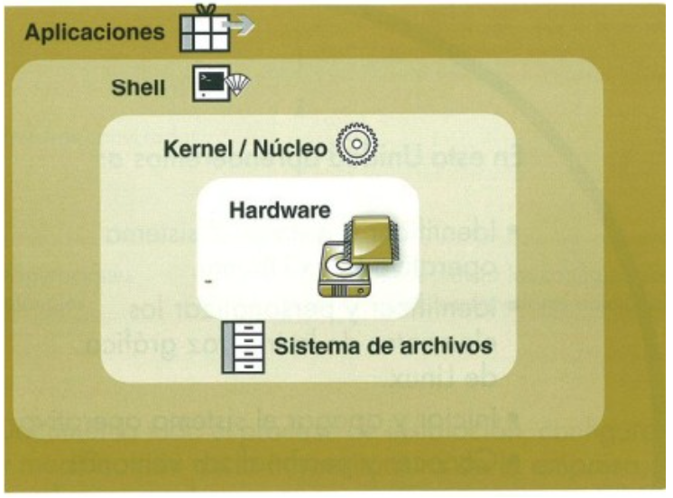
NOTA
- Por lo tanto, es buena práctica que el administrador del sistemas tenga conocimientos en el manejo y gestión del terminal Shell, así como en la programación de scripts.
Shell¶
- En informática, el shell o intérprete de comandos, es el programa informático que permite a los usuarios interactuar con el sistema, procesando las órdenes que se le indican; además provee una interfaz de usuario para acceder a los servicios del sistema operativo.
- Los comandos ejecutables desde el shell pueden clasificarse en internos (corresponden en realidad a órdenes interpretadas por el propio shell) y externos (corresponden a ficheros ejecutables externos al shell, conocidos como guiones o scripts).
IMPORTANTE:
- Linux dispone de varios Shell diferentes csh, bash, sh, ksh, zsh, etc... A destacar:
- sh (Bourne Shell): este shell fue usado desde las primeras versiones de Unix (Unix Versión 7). Recibe ese nombre por su desarrollador, Stephen Bourne, de los Laboratorios Bell de AT&T.
- bash: fue desarrollado para ser un superconjunto de la funcionalidad del Bourne Shell, siendo el intérprete de comandos asignado por defecto a los usuarios en las distribuciones de Linux, por lo que es el shell empleado en la mayoría de las consolas de comandos de Linux. Se caracteriza por una gran funcionalidad adicional a la del Bourne Shell.
- Para intentar homogeneizar esta diversidad de shells, el IEEE definió un estándar de «intérprete de comandos» bajo la especificación POSIX 1003.2 (también recogida como ISO 9945.2). La creación de dicho estándar se basó en la sintaxis que presentaban múltiples shells de la familia Bourne shell.
- bash respeta completamente el estándar POSIX, sobre el que añade un número considerable de extensiones (estructura select, arrays, mayor número de operadores,…). En este tema utilizaremos el Shell de bash.
Formato comandos¶
En general, el formato de las órdenes de GNU/Linux es el siguiente:
- Comando, que indica la acción que se va a ejecutar.
- Modificadores, que cambian el comportamiento estándar del comando para adaptarlo a las necesidades.
- Argumentos, elementos necesarios para realizar la acción del comando.
Warning
- Un dato a tener en cuenta cuando se trabaja con un terminal, es que GNU/Linux distingue entre mayúsculas y minúsculas, es decir, la ejecución de comandos en el CLI de Linux es CASE SENSITIVE.
Principales comandos¶
| Comando | Acción | Comando | Acción |
|---|---|---|---|
ls |
muestra el contenido de una carpeta | uname |
muestra información del sistema |
df |
muestra estado del disco | cd |
cambiar de directorio |
fsck |
comprueba integridad de discos | mkdir |
crear directorios |
mount |
monta particiones y volúmenes | shutdown |
apaga el equipo (restart o reboot) |
unmount |
desmonta particiones y volúmenes | clear |
limpia la pantalla |
fdisk |
administra particiones | date/cal |
muestra hora/calendario del sistema |
echo |
imprime por pantalla | who |
muestra quien está conectado |
Shell Script en GNU/Linux¶
- Un Shell script (guion) es un archivo de texto que contiene una serie de comandos que, ordenados de forma específica, realizan la tarea para la que fueron diseñados, es decir, es un programa escrito de comandos Shell para ser ejecutados de forma secuencial.
- De esta forma se pueden automatizar tareas repetitivas ahorrando tiempo al administrador.
- Un programa escrito en shell se denomina shellscript, programa shell o simplemente un shell.
Estructura general¶
- En su forma más básica, un shell-script puede ser un simple fichero de texto que contenga uno o varios comandos.
- Para ayudar a la identificación del contenido a partir del nombre del archivo, es habitual que los shell scripts tengan la extensión «.sh»,
- Se seguirá este criterio pero hay que tener en cuenta que es informativo y opcional.
#!/bin/bash
#*********************************
#Este es mi primer script
#*********************************
echo Hola Mundo
#Esto es un comentario, soy muy útil.
Creación Shell scripts¶
- Para crear un script utilizaremos cualquiera de los editores de texto plano como vi, vim , nano.
- Después de crear el archivo hay que dotarlo de permisos de lectura y ejecución.
chmod ugo=rx script.sh
-
Para ejecutar el archivo: (ubicados en la carpeta que contiene el archivo), se pueden utilizar el siguiente archivo:
./script.sh -
Además se puede utilizar otro método que consiste en definir la carpeta dentro de la variable de entorno PATH (editando el fichero .bashrc.) Una vez realizado ya se podría ejecutar directamente el fichero con el nombre del script.
mkdir /home/administrador/scripts PATH=$PATH:/home/administrador/scripts export PATH
NOTA
- La primera forma ejecutará el contenido del shell script en un subshell o hilo del terminal original. El programa se ejecuta hasta que se terminan las órdenes del archivo, se recibe una señal de finalización, se encuentra un error sintáctico o se llega a una orden exit. Cuando el programa termina, el subshell muere y el terminal original toma el control del sistema.
- Esto no ocurre si se usa la opción de PATH, la cual ejecuta el contenido del shell script en el mismo terminal donde fue invocado.
El primer Shellscript¶
- Crea un ejemplo llamado listar.sh, se aconseja ejecutar los siguientes comandos de forma secuencial.
cd ~
mkdir scripts
cd scripts
touch listar.sh
nano listar.sh
- Genera, guarda y prueba el siguiente código.
#! /bin/bash
clear
ls -la
echo “Listado realizado el “$(date)
Comentarios¶
- Para realizar un comentario se usa el carácter #
- Cuando el terminal encuentra una línea que comienza con este carácter, ignora todo lo que existe desde él hasta el final de línea.
- A esta regla existe una excepción:
#!/bin/bash
Info
- Es el "Shebang" Indica el terminal que será utilizado por el shell script, no un comentario.
- Esta línea debe ser la primera del fichero que, aún siendo opcional, indica el tipo de lenguaje en el que ha sido escrito el programa.
- Si la versión de GNU/Linux dispone de el terminal especificado en esta línea, ejecutará el código con él, si no es así, utilizará el que por defecto tenga asignado el usuario que lo ejecuta.
Depuración¶
Esta tarea no es sencilla en ShellScripting, aun así se recomienda los siguientes métodos de depuración, apoyados en los siguientes argumentos a la hora de ejecutar el script:
-x→ Expande cada orden simple, e imprime por pantalla la orden con sus argumentos, y a continuación su salida.-v→ Imprime en pantalla cada elemento completo del script (estructura de control, …) y a continuación su salida.
Además en el propio Script se pueden utilizar los siguientes comandos:
| Comando | Acción |
|---|---|
set -x set –xv |
Activa las trazas/verbose. Se debe ubicar justo antes del trozo del script que se desea depurar. |
set +x set +xv |
Desactiva las trazas/verbose. Ubicarlo justo después del trozo del script que se desea depurar. |
Sintaxis¶
Argumentos o Parámetros¶
- Son especificaciones que se le hacen al programa al momento de llamarlo.
- Introducen un valor, cadena o variable dentro del script.
- Utilización de parámetros:
| Símbolo | Función |
|---|---|
$1 |
representa el 1º parámetro pasado al script |
$2 |
representa el 2º parámetro |
$3 |
representa el 3º parámetro (podemos usar hasta $9) |
$* |
representa todos los parámetros separados por espacio |
$# |
representa el número de parámetros que se han pasado |
$0 |
representa el parámetro 0, es decir, el nombre del script o el nombre de la función |
- Ejemplo:
#!/bin/bash
echo ‘El primer parámetro que se ha pasado es ‘ $1
echo ‘El tercer parámetro que se ha pasado es ‘ $3
echo ‘El conjunto de todos los parámetros : ‘ $*
echo ‘Me has pasado un total de ‘ $# ‘ parámetros’”
echo ‘El parámetro 0 es : ‘ $0
#Fin del script
- Si por ejemplo se enviasen los siguientes parámetros:
./script.sh Caballo Perro 675 Nueva
- Se obtendría la siguiente salida:
El primer parámetro que se ha pasado es Caballo
El tercer parámetro que se ha pasado es 675
El conjunto de todos los parámetros : Caballo Perro 675 Nueva
Me has pasado un total de 4 parámetros
El parámetro 0 es : ./script.sh
Info
- Argumento especial
$? - Contiene el valor que devuelve la ejecución de un comando.
- Puede tener dos valores: cero si se ha ejecutado bien y se interpreta como verdadero, o distinto de cero si se ha ejecutado mal y se interpreta como falso.
0-> Si el último comando se ejecutó con éxito!0-> Si el último comando no de ejecutó con éxito
Variables¶
- Es un parámetro que cambia su valor durante la ejecución del programa.
- Se da un nombre para identificarla y recuperarla, antecedido por el carácter
$.
Info
- En shellscript no se declaran y no importa el tipo.
- El nombre de la variable puede estar compuesto por letras y números y por el carácter subrayado “
_”.
- Ejemplo:
#! /bin/bash
#*********************************
#Este es mi segundo script
#*********************************
MIVARIABLE=‘Administración de Sistemas Operativos ASO’
echo $MIVARIABLE
Warning
- Deben empezar por letra o “
_” - En ningún caso pueden empezar por un número, ya que esa nomenclatura está reservada a los parámetros.
- El contenido de estas variables será siempre tomado como si fuesen cadenas alfanuméricas, es decir, serán tratadas como cadenas de texto. Por lo tanto se necesitan operandos o comandos específicos para realizar operaciones con valores numéricos de las variables. Explicado en el apartado de Operadores Aritméticos.
Variables de entorno¶
- Cada terminal durante su ejecución tiene acceso a dos ámbitos de memoria:
- Datos Locales Una variable declarada en un terminal solo será accesible desde el terminal en el que declara.
- Datos Global Engloban a todos los terminales que se estén ejecutando. Son las denominadas Variables de Entorno.
Ejemplo de principales variables de entorno:
| Variable | Función |
|---|---|
$BASH |
Ruta del programa Bash |
$HOME |
Ruta completa del home del usuario |
$PATH |
Lista los directorios de donde se buscan los programas |
$RANDOM |
Devuelve un valor numérico aleatorio |
Entrada y salida del Shell Script¶
- Para poder interactuar con un programa de terminal es necesario disponer de un mecanismo de entrada de datos.
- Para dinamizar el resultado de los shell scripts y un dispositivo de salida que mantenga informado al usuario en todo momento de los que está ocurriendo.
- Para la entrada de datos se utiliza el comando read y para la salida el comando echo.
echo¶
- Su tarea es la de mostrar información con mensajes de texto lanzados por pantalla
| Modificador | Función |
|---|---|
-e |
para usar las opciones hay que utilizar este modificador |
\c |
Sirve para eliminar el salto de línea natural del comando echo. |
\n |
nueva línea. |
\t |
tabulador horizontal. |
\v |
tabulador vertical. |
Info
- Si se antepone el símbolo del dólar delante de una variable, mostrará su contenido.
- Si es necesario mostrar frases con espacios, debe situarse entre comillas.
Warning
- La orden echo permite expandir variables siempre que se usen las comillas dobles.
- Ejemplo:
#!/bin/bash NOMBRE=Javi echo “hola $NOMBRE” - El texto mostrado por pantalla será: hola javi
read¶
- Esta herramienta asigna el texto que el usuario ha escrito en el terminal a una o más variables.
- Lo que hace read es detener la ejecución del shell script y pasa el testigo al usuario.
-
Hasta que éste no introduzca los datos, la ejecución del programa no avanzará.
-
Ejemplo:
#!/bin/bash echo “Introduce tu nombre: ” read NOMBRE echo “Hola $NOMBRE”
Info
Cuando se utiliza read con varios nombres de variables, el primer campo tecleado por el usuario se asigna a la primera variable, el segundo campo a la segunda y así sucesivamente
- Ejemplo:
#!/bin/bash read -p “Introduce tres números (separados por un espacio): ” num1 num2 num3 echo “Los número introducidos son $num1, $num2 y $num3”
Info
En este ejemplo se ha usado el modificador -p el cual permite imprimir un mensaje antes de la recogida de los datos, prescindiendo de primer comando echo del ejemplo anterior.
Operadores en shell script¶
- Todas las variables creadas en un terminal se tratan como cadenas de texto, incluso si su contenido es solo numérico.
- Este es el motivo por el cual si lanzamos el siguiente código, no se obtendrá el resultado esperado:
#!/bin/bash
var1=15
var2=5
echo “$var1+$var2”
Warning
- La salida de este programa no será un número 20, sino la cadena de caracteres 15+5.
- Esto es así porque la suma de cadenas de texto, son esas cadenas de texto unidas de forma consecutiva.
- Existen tres tipos de operadores según el trabajo que realicen: aritméticos, relacionales y lógicos
Aritméticos¶
- Los operadores aritméticos realizan operaciones matemáticas, como sumas o restas con operandos.
- "Manipulan" datos numéricos, tanto enteros como reales.
| Símbolo | Función |
|---|---|
+ |
suma |
- |
resta |
* |
multiplicación |
/ |
división |
% |
modulo (resto) |
= |
asignación |
- Ejemplo:
#!/bin/bash
#*********************************
#Esto es mi tercer script
#*********************************
NUMERO=4
let SUMA=NUMERO+3
echo $SUMA
NUMERO=5
let SUMA=NUMERO+5
echo $SUMA
NUMERO=10
let SUMA=NUMERO-10
Relacionales¶
- Este tipo de operadores tan sólo devuelven dos posibles valores; verdadero o falso.
-
Existen subtipos según se comparen cadenas o números.
1. Operadores relacionales para números
Operador Acción -eqComprueba si dos números son iguales. -neDetecta si dos números son diferentes. -gtRevisa si la izquierda es mayor que derecha. -ltVerifica si la izquierda es menor que derecha. -geCoteja si la izquierda es mayor o igual que derecha. -leConstata si la izquierda es menor o igual que derecha. 2. Operadores relacionales para cadenas de texto o de cuerda
Operador Acción -zComprueba si la longitud de la cadena es cero. -nEvalúa si la longitud de la cadena no es cero. =Verifica si las cadenas son iguales. !=Coteja si las cadenas son diferentes. cadenaRevisa si la cadena es nula. 3. Operadores relacionales para archivos y directorios
Operador Acción -aComprueba si existe el archivo. -rEvalúa si el archivo esta vacío. -wConfirma si existe el archivo y tiene permisos de escritura. -xConstata si existe el archivo y tiene permisos de ejecución. -fEscruta si existe y es un archivo de tipo regular. -dEscruta si existe y es un archivo de tipo directorio. -hCoteja si existe y es un enlace. -sRevisa si existe el archivo y su tamaño es mayor a cero.
Lógicos¶
- Se utilizan para evaluar condiciones, no elementos.
- Comprueba el resultado de dos operandos y devuelve verdadero o falso en función del valor que arrojen los operandos.
- Los tipos son:
| Operador | Acción |
|---|---|
&& |
AND, devuelve verdadero si todas condiciones que evalúa son verdaderas. Se puede representar: -a o &&. |
|| |
OR, da como resultado verdadero si alguna de las condiciones que evalúa es verdadera. Se representar: -o o ||. |
! |
negación, invierte el significado del operando. de verdadero a falso, y viceversa. Con ! o not. |
Info
Para realizar cálculos aritméticos es necesario utilizar expresiones como expr, let o los expansores.
expr¶
- Este comando toma los argumentos dados como expresiones numéricas, los evalúa e imprime el resultado.
- Cada término de la expresión debe ir separado por espacios en blanco.
- Soporta diferentes operaciones: sumar, restar, multiplicar y dividir enteros utilizando los operadores aritméticos para el cálculo del módulo.
Tip
- MEJOR NO UTILIZAR
- Desafortunadamente, expr es difícil de utilizar debido a las colisiones entre su sintaxis y la propia terminal.
- Puesto que
*es el símbolo comodín, deberá ir precedido por una barra invertida para que el terminal lo interprete literalmente como un asterisco. - Además, es muy incómodo de trabajar ya que los espacios entre los elementos de una expresión son críticos.
- Ejemplo:
#!/bin/bash var=5 resultado=`expr $1 + $var + 1 echo $resultado`
let¶
- Facilita la sintaxis de estas operaciones aritméticas reduciéndolas a la mínima expresión.
- No es necesario incluir el símbolo del dólar que precede a las variables.
-
Se configura como un comando más cómodo de ejecutar.
-
Ejemplo:
#!/bin/bash var=5 let resultado=$1+var+1 echo $resultado
expansores¶
- Para las operaciones aritméticas se utilizan los dobles paréntesis.
-
Realizan la operación contenida dentro de ellos lanzando la ejecución fuera de ellos una vez resuelta.
-
Ejemplo:
#!/bin/bash var=5 echo $(($1+$var+1)) echo $(($1 + $var + 1))
Tip
Consejo de uso, ya que es mucho más intuitivo que las anteriores expresiones.
Redirecciones¶
- Una redirección consiste en trasladar la información de un fichero de dispositivo a otro.
-
Para ello se utilizan los siguientes símbolos:
Símbolo Acción <redirecciona la entrada desde el fichero stdin (entrada estándar) >envía la salida de stdout (salida estándar) a un fichero especificado >>añade la salida de stdout (salida estándar) a un fichero especificado 2>envía la salida de stderr (error estándar) a un fichero especificado * Ejemplo:
sh script.sh 2>/dev/null
Info
El objetivo de la expresión anterior puede ser utilizada en la administración de sistemas para descartar el error estándar de un proceso, de esta forma no aparecerán los mensajes de error por el terminal; es muy utilizado.
Tuberías¶
- Forma práctica de redireccionar la salida estándar de un programa hacia la entrada estándar de otro.
- Esto se logra usando el símbolo
|(pipeline). Ejemplo:
$ cat archivo.txt | wc
Info
El comando anterior utiliza tuberías para redireccionar la salida estándar del comando cat y pasarla como entrada estándar del comando wc para contar las líneas y palabras de un archivo.
alias¶
- Alias es un comando que se ejecuta desde un terminal que permite configurar vínculos entre varios comandos.
- Cada usuario puede asignar una palabra fácil de recordar a uno o más comandos que, por lo general, pueden ser más complicados de recordar.
- Ejemplo:
$ alias listado='ls -lia'
Control de Flujo¶
Sistema de notación¶
- Antes de lanzarse a escribir una sola línea de código es necesario pensar en la resolución del problema tal y como se ha indicado.
- La creación de una solución a un problema siguiendo un conjunto de instrucciones se denomina algoritmo.
- Es necesario invertir el tiempo suficiente para construir ese algoritmo ya que esa será la solución que se debe implementar en código.
- Existen varios sistemas de representación para describir esos algoritmos, como por ejemplo, pseudocódigo o la descripción narrada, pero en este manual se ha optado por los diagramas de flujo ya que resultan más intuitivos.
Diagramas de flujo¶
- Los diagramas de flujo o flujogramas son la representación gráfica de la solución algorítmica de un problema.
- Para diseñarlos se emplean figuras normalizadas que representan una acción dentro del procedimiento.
- Cada una de estas figuras representa un paso a seguir dentro del algoritmo.
NOTA
- Para su construcción se han de respetar las siguientes reglas:
- Tiene un elemento de inicio en la parte superior y uno final en la parte inferior.
- Se escribe de arriba hacia abajo y de izquierda a derecha.
- Siempre se usan flechas verticales u horizontales, jamás curvas u oblicuas
- Se debe evitar cruce de flujos.
- En cada paso expresar una acción concreta.
En la siguiente figura se puede observar simbología para diseñar diagramas de flujo.
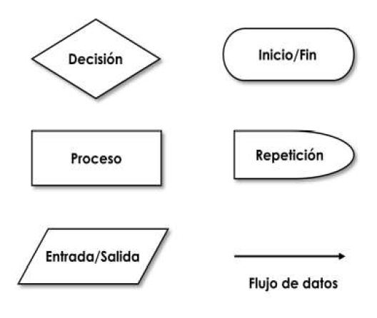
Estructuras¶
- Controlar el flujo es determinar el orden en el que se ejecutarán las instrucciones en un programa.
- Si no existiese las estructuras de control del flujo, todo el código se ejecutarían de forma secuencial, es decir, empezarían por la primera instrucción y se ejecutarían una a una hasta llegar a la última.
- Este modo de ejecución esta realizado por estructuras secuenciales. Ejemplo:
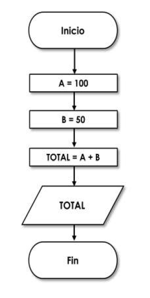
Warning
La estructura secuencial no es válida para solucionar la mayoría de los problemas que se plantean.
- Para ello es necesario la elección de un código u otro en función de ciertas condiciones, formando otro tipo de estructuras que son conocidas como estructuras condicionales; entre las cuales podemos destacar:
- Estructuras Alternativas, según si se cumple la condición o no, se realizará una tarea u otra.
- Ejemplo de utilización con la sentencia: if.
- Estructuras Iterativas, cuando necesario ejecutar algunas instrucciones repetidas veces.
- Ejemplo de utilización con la sentencia: for.
- Estructuras Alternativas, según si se cumple la condición o no, se realizará una tarea u otra.
Estructuras alternativas¶
- Las estructuras de selección permiten ejecutar diferentes instrucciones dependiendo del valor de una variable o expresión.
- También se les llama ramificaciones, estructuras de decisión o alternativas.
- Cuando se usan, no todas las instrucciones del programa se ejecutan, solo las especificadas para el valor de la variable durante esa ejecución.
- Las estructuras de selección más comunes son las que proporcionan ramificaciones dobles (if) y múltiples (elif y case).
Estructura alternativa doble: if¶
- La forma general de la orden if es:
if [ expresión ]
then
realizar este código si expresión es verdadera
fi
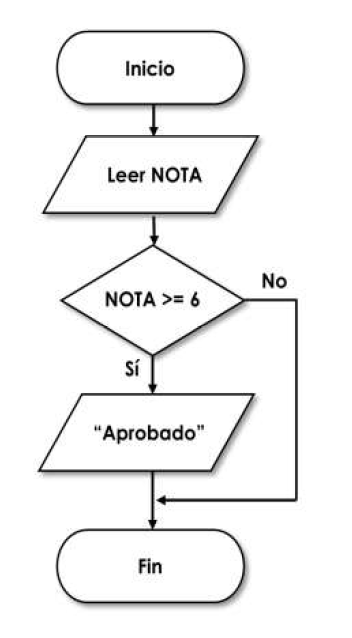
- Ejemplo:
if [ $# -eq 1 ] then VAR=$1 fi
Info
El código anterior comprueba se ha pasado algún argumento ,es decir, si han pasado un parámetro. En caso afirmativo, asigna el contenido de ese parámetro a la variable VAR.
Warning
Hay que recordar siempre cerrar esta estructura para indicarle al terminal donde termina, en este caso, se cierra con la palabra reservada fi.
Estructura alternativa multiple if then else¶
- En este caso se contempla también la posibilidad de ejecutar alguna acción si no se cumple la expresión.
- La forma general del if then else es:
if [ expresión ]
then
realizar si expresión es verdadera
else
realizar si expresión es falsa
fi
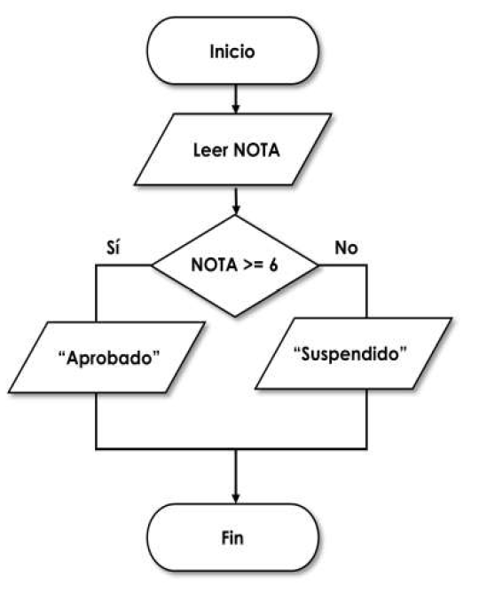
- Ejemplo:
if [ $a -gt $b ] then echo "$a es mayor que $b" else echo "$a es menor que $b" fi
La estructura if then elif else¶
- Permite una segunda evaluación para ejecutar código a través de la estructura elif.
- Es posible colocar tantos elif como condiciones se requiera evaluar.
- La forma general del if then elif else es:
if [ exp1 ]
then
realizar si exp1 es verdadera
elif [ exp2 ]
then
realizar si exp1 es falsa, pero es verdadera exp2
elif [ exp3 ]
then
realizar si exp1 y exp2 son falsas, pero es verdadera exp3
else
realizar si todas las expresiones son falsas
fi
- Ejemplo:
if [ $a -gt $b ] then echo "$a es mayor que $b" elif [ $a -eq $b ] then echo "$a es igual que $b" else echo "$a es menor que $b" fi
Info
Este ejemplo amplía el anterior comprobando si, además, los valores de a y b son iguales.
Warning
El último caso se realiza con la sentencia else.
La estructura case¶
- La estructura case permite realizar varias acciones en función del valor de una variable.
- La limitación que tan sólo se comprueba si es igual a ese valor.
- La forma general del case es:
case VARIABLE in
valor1)
Se ejecuta si VARIABLE tiene el valor1
;;
valor2)
Se ejecuta si VARIABLE tiene el valor2
;;
*)
Se ejecuta por defecto
;;
esac
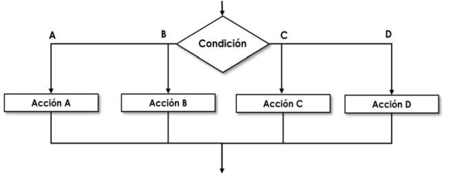
Estructuras de iteración¶
- Son operaciones que se deben ejecutar un número repetido de veces para resolver un problema.
- El conjunto de instrucciones que se ejecuta dentro de esta estructura, se denomina ciclo, bucle o lazo.
Iteraciónes cada una de las pasadas o ejecuciones de todas las instrucciones contenidas en el bucle.- Estas repeticiones de código van a depender de la evaluación de una condición o del valor de una variable.
- Es posible repetir un código hasta que se cumpla o deje de cumplir una condición pero también se posible la repetición tantas veces como indique una variable.
Warning
Hay que tener mucho cuidado a la hora de diseñar estas estructuras y no caer en el error de construir bucles infinitos, es decir, estructuras que nunca dejarán de ejecutarse ya que no tienen condición de salida o, si la tienen, ésta nunca se va a cumplir.
- Para utilizar esta estructura en algoritmos, se usan:
- Contador: es una variable cuyo valor se incrementa o decrementa en una cantidad constante cada vez que se produce un determinado suceso o acción. Los contadores se utilizan con la finalidad de contar sucesos o acciones internas de un bucle.
NOTA
La inicialización consiste en asignarle al contador un valor. Se situará antes y fuera del bucle.
- Acumulador o Totalizador es una variable que suma sobre sí misma un conjunto de valores para de esta manera tener el total de todos ellos en una sola variable.
NOTA
La diferencia entre un contador y un acumulador es que mientras el primero va aumentando de uno en uno, el acumulador va aumentando en una cantidad variable.
- Banderas, conocidas también como interruptores, switch, flags o conmutadores. Son variables que pueden tomar solamente dos valores durante la ejecución del programa, los cuales pueden ser cero o uno, o bien los valores booleanos verdadero o falso.
NOTA
Se les suele llamar interruptores porque cuando toman un valor están simulando un interruptor abierto/cerrado o encendido/apagado.
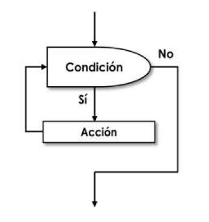
Las estructuras while y until¶
Estas estructuras van a repetir el código que contienen mientras la expresión evaluada sea verdadera. Funcionamiento:
- Evalúa la condición, si es falsa, no realiza ninguna acción y continua con el siguiente código del programa.
- Si es verdadera entra en el bucle y ejecuta el código que contiene.
- Al finalizar la ejecución, al iterar, vuelve a evaluar la condición y vuelve a repetir la operación anterior.
Warning
Al construir una estructura while es preciso asegurarse que en algún momento de su ejecución la condición dejará de cumplirse y se romperá el ciclo, si no, éste será infinito, a menos que el usuario o el sistema interrumpa su ejecución.
-
WHILEwhile [ expresión ] do código se repite MIENTRAS la expresión sea verdadera done -
UNTILuntil [ expresión ] do código se repite HASTA que la expresión sea verdadera done
Info
La diferencia es que un until se ejecuta como mínimo una vez, ya que ejecuta el código y luego comprueba, mientras que el while es posible que nunca se ejecute, ya que es posible que la condición de entrada nunca se cumpla.
- Ejemplo:
#! /bin/bash
read -p "Escribe un número: " num
i=1
while [ $i -le 10 ]
do
let res=num*i
echo "$i x $num = $res"
let i=i+1
done
Info
Este código imprime por pantalla la tabla de multiplicar del número que el usuario ha especificado. Las líneas contenidas entre do y done se ejecutarán mientras i sea menor o igual a diez. Al final de cada iteración el valor de i se incrementa en uno (es un contador) por lo que en diez iteraciones la condición dejará de cumplirse y el bucle se romperá.
La estructuras for¶
- Esta estructura permite repetir código por cada elemento de un conjunto determinado.
- No necesita condición de salida ya que al finalizar los elementos del conjunto acabará con su ejecución.
- la forma general es:
for variable in conjunto
do
estas líneas se repiten una vez por cada elemento del conjunto
variable toma los valores del conjunto, uno en cada iteración
done
Ejemplo:
#! /bin/bash
read -p “Escribe la dirección de una carpeta: “ car
for i in $(ls $car)
do
if [ -f $i ]
then
echo “$i es un archivo de tipo regular”
elif [ -d $i ]
then
echo “$i es un archivo de tipo directorio”
else
echo “$i es otro tipo de archivo o no existe”
fi
done
NOTA
Este ejemplo se van a mostrar los nombres de los ficheros que contiene un directorio y dirá si es un directorio o un fichero.
Romper un bucle de forma deliberada
No sólo es posible terminar un bucle cuando se cumpla una condición o cuando se terminen los elementos de un conjunto, shell script proporciona dos formas de alterar el funcionamiento de la estructura en un bucle y romperla en función de las necesidades del programa:
breakrompe el bucle que lo contiene y continúa la ejecución del script.continuerompe la iteración que lo contiene, pero mantiene el bucle, que continuará con la siguiente iteración hasta que termine su ejecución.exitdetiene la ejecución del script. Este comando no es exclusivo de las estructuras iterativas, pero cobra especial sentido en este ámbito.
Vectores y Funciones¶
Vectores en shell script¶
- Un vector es una estructura de datos que permite almacenar una colección de elementos.
- Por el hecho de tratarse de una estructura de datos es posible realizar operaciones sobre él como buscar, eliminar y agregar elementos a su estructura.
- Los elementos se encuentran ordenados en función de como han sido introducidos en la estructura.
- Para acceder a cada elemento será necesario especificar la posición que ocupan dentro de ella, teniendo presente que la numeración de los vectores comienza desde cero, no desde uno.
Info
Un buen ejemplo de uso sería, recoger el listado de archivos que hay en una carpeta.
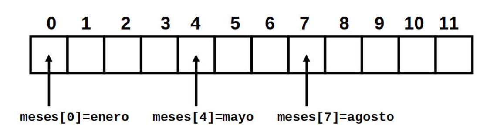
Para definir un vector disponemos de dos formas:
- Implícita: hace referencia a que el vector ha sido declarado y al mismo tiempo se han inicializado sus valores.
- Explícitamente: cuando el vector no requiere que se inicialice mientras se declara, es decir, pueden ser inicializados con posterioridad.
Para declarar un vector hay que utilizar la siguiente estructura:
declare -a meses=("enero" "febrero" "marzo")
También es posible utilizar alguna expresión para completar un vector, como con el operador rango ...
declare -a letras=( {N..Z} {s..z} )
echo ${letras[*]}
Info
- Esto creará un vector con el siguiente contenido y lo mostrará por pantalla así:
- N O P Q R S T U V W X Y Z s t u v w x y z
- Para añadir un elemento a la estructura se debe indicar el índice o posición que ocupará el nuevo dato.
- Si el índice es mayor que la última posición de la estructura, se escribirá al final de la misma.
- Si se usa un índice que ya contiene un dato, éste será sobrescrito.
meses[3]="abril"
- Para mostrar el contenido del vector:
echo ${meses[*]}
Info
Mostrará: enero febrero marzo abril
- Es buena idea conocer el número de elementos que contiene un vector para poder introducir datos de forma correcta y no sobrescribir por accidente algún valor ya almacenado. Así es posible utilizar:
| Comando | Acción |
|---|---|
${meses[*]} |
Muestra todos los valores del vector |
${!meses[*]} |
Muestra todos los índices del vector |
${#meses[*]} |
Devuelve el número de valores del vector |
${#meses[0]} |
Imprime la longitud del primer dato del vector |
- Para recorrer los valores que contiene esta estructura se puede utilizar un bucle for
for item in ${meses[*]}
do
echo $item
done
for index in ${!meses[*]}
do
echo ${meses[$index]}
done
- Es una estructura muy útil en la que se puede guardar cualquier tipo de información, como por ejemplo los ficheros que contiene una carpeta:
i=0;
for fichero in $(ls -a)
do
ficheros[$i]=$fichero;
let i=i+1;
done
Funciones en shell script¶
- Una función es un conjunto de líneas de código que se distinguen a través de un identificador y que se ejecutan al invocar ese identificador.
- Se podría definir como un shell script dentro de un shell script.
- Sirve para organizarlo en unidades lógicas más pequeñas de manera que sea más fácil mantenerlo.
- Las funciones aceptan parámetros, de idéntica manera que los shell script, por lo que su uso también es muy intuitivo.
- La estructura de una función queda definida de la siguiente manera:
function nombre_función(){
código que se ejecutará al llamar a la función
}
- Ejemplo:
##! /bin/bash
function imprimir_tabla(){
echo “Tabla del número $1”
for i in 1 2 3 4 5 6 7 8 9 10
do
let res=$1*i
echo “$i x $1 = $res”
done
}
read -p “Escribe un número: “ num
imprimir_tabla $num
imprimir_tabla 5
- En este ejemplo se ha construido una función para imprimir la tabla de multiplicar de un número pasado como parámetro.
- En la siguiente línea le pedimos al programa que imprima la tabla del número cinco.
- No se ha necesitado escribir el código que imprime la su tabla de multiplicar de nuevo, ya que con invocar el nombre de la función el programa ya sabe que código debe ejecutar.
Warning
- Nótese que el valor de
$1no se pasa como parámetro del shell script, si no como parámetro a la función imprimir_tabla tras haberlo preguntado al usuario. - Hay que tener en cuenta que las variables que se declaran dentro de una función existen únicamente dentro de ella. Si es preciso utilizar una variable fuera de una función se puede usar
return, que devuelve un valor fuera de ella, o usar la palabra reservadaGLOBAL - Es preferible utilizar el primer método para que devuelva un valor que será recogido en otra variable fuera de la función que lo originó.
Info
source- Para incluir el código de un fichero en otro tan sólo será necesario utilizar la palabra source seguida de la ruta de ese fichero. *
- También es posible usar el punto para poder cargarlo:
source funciones.sho./funciones.sh
Llamada a Scripts Externos como Funciones¶
- En ocasiones es útil modularizar un script principal dividiéndolo en varios archivos
.shque actúen como funciones especializadas. - Esto permite organizar mejor el código y reutilizar scripts en diferentes proyectos.
Método 1: Usando source o .¶
sourceejecuta el script en el contexto actual del shell, permitiendo compartir variables..es equivalente asourcepero más corto.
#!/bin/bash
# script_principal.sh
# Cargar funciones desde archivos externos
source funciones_servidor.sh
source monitoreo.sh
source backup.sh
# Ahora podemos usar las funciones definidas en esos archivos
menu_principal() {
echo "=== MENÚ PRINCIPAL ==="
echo "1) Gestión de servidores"
echo "2) Monitoreo"
echo "3) Backup"
read -p "Selecciona opción: " opcion
case $opcion in
1) gestionar_servidores ;;
2) monitorear_sistema ;;
3) crear_backup ;;
esac
}
# Ejecutar menú principal
menu_principal
Método 2: Ejecutando Scripts como Comandos¶
- Los scripts se ejecutan como subprocesos independientes.
- No comparten variables con el script principal.
#!/bin/bash
# script_principal.sh
menu_principal() {
echo "=== MENÚ PRINCIPAL ==="
echo "1) Gestión de servidores"
echo "2) Monitoreo"
echo "3) Backup"
read -p "Selecciona opción: " opcion
case $opcion in
1) ./funciones_servidor.sh ;;
2) ./monitoreo.sh ;;
3) ./backup.sh ;;
esac
}
# Ejecutar menú principal
menu_principal
Ejemplo Práctico: Sistema Modular¶
Estructura de archivos:
sistema_gestion/
├── menu_principal.sh
├── funciones_servidor.sh
├── monitoreo.sh
├── backup.sh
└── configuracion.conf
menu_principal.sh:
#!/bin/bash
# Cargar configuración
source ./configuracion.conf
# Cargar módulos
source ./funciones_servidor.sh
source ./monitoreo.sh
source ./backup.sh
# Función principal
main() {
while true; do
clear
echo "=== SISTEMA DE GESTIÓN ==="
echo "1) Gestión de servidores"
echo "2) Monitoreo del sistema"
echo "3) Copias de seguridad"
echo "4) Salir"
read -p "Selecciona opción: " opcion
case $opcion in
1) gestionar_servidores ;;
2) monitorear_sistema ;;
3) crear_backup ;;
4) exit 0 ;;
*) echo "Opción inválida" ;;
esac
done
}
# Ejecutar programa principal
main
funciones_servidor.sh:
#!/bin/bash
# Módulo de gestión de servidores
gestionar_servidores() {
echo "=== GESTIÓN DE SERVIDORES ==="
echo "1) Listar servidores"
echo "2) Añadir servidor"
echo "3) Buscar servidor"
read -p "Selecciona opción: " opcion
case $opcion in
1) listar_servidores ;;
2) añadir_servidor ;;
3) buscar_servidor ;;
esac
}
listar_servidores() {
echo "Listando servidores..."
# Código para listar servidores
}
añadir_servidor() {
echo "Añadiendo servidor..."
# Código para añadir servidor
}
buscar_servidor() {
echo "Buscando servidor..."
# Código para buscar servidor
}
Ventajas de la Modularización¶
- Organización: Código más limpio y organizado
- Reutilización: Scripts pueden usarse en otros proyectos
- Mantenimiento: Fácil modificar módulos específicos
- Colaboración: Diferentes personas pueden trabajar en módulos diferentes
- Debugging: Más fácil localizar y corregir errores
Consideraciones Importantes¶
- Permisos: Asegurar que los scripts tengan permisos de ejecución (
chmod +x) - Rutas: Usar rutas relativas o absolutas correctas
- Variables: Con
sourcese comparten variables, con ejecución directa no -
Dependencias: Verificar que todos los módulos necesarios estén disponibles
-
Las funciones suelen declararse al inicio del documento y luego utilizadas a lo largo del programa.
- Uno de los objetivos es optimizar el código, mediante el "aprovechamiento" de código. Cuando un conjunto de líneas de código se repiten, es posible agruparlas bajo un nombre y utilizar ese nombre en lugar de repetir este código.
Actividades¶
Formato de entrega
Escribe el código de los scripts en ShellScript que se detallan en cada ejercicio. Deberás crear un fichero de texto para cada ejercicio con el siguiente nombre: ejXXX.sh, donde las X representan el número de ejercicio. Una vez terminada la práctica, comprime todos estos ficheros en uno y súbelos al Moodle
- AC101. (RA.7 // CE7a, CE7b, CE7g y CE7i // 1-3p) Crea un shell script que muestre por pantalla el mensaje “¡Hola Mundo!”.
- AC102. (RA.7 // CE7a, CE7b, CE7g y CE7i // 1-3p) Realiza un script que guarde en un fichero el listado de archivos y directorios de la carpeta etc, a posteriori que imprima por pantalla dicho listado.
- AC103. (RA.7 // CE7a, CE7b, CE7g y CE7i // 1-3p) Modifica el script anterior para que además muestre por pantalla el número de líneas del archivo y el número de palabras.
- AC104. (RA.7 // CE7a, CE7b, CE7f y CE7i // 1-3p) Crea un shell script que muestre por pantalla el resultado de de las siguientes operaciones. Debes tener en cuenta que a, b y c son variables enteras que son preguntadas al usuario al iniciar el script.
- a%b
- a/c
- 2 * b + 3 * (a-c)
- a * (b/c)
- (a*c)%b
- AC105. (RA.7 // CE7a, CE7b, CE7f y CE7i // 1-3p) Realiza un script que muestre por pantalla los parámetros introducidos separados por espacio, el número de parámetros que se han pasado, y el nombre del script.
- AC106. (RA.7 // CE7a, CE7b, CE7f y CE7i // 1-3p) Diseña un script en Shell que pida al usuario dos números, los guarde en dos variables y los muestre por pantalla.
- AC107. (RA.7 // CE7a, CE7b, CE7e, CE7f y CE7i // 1-3p) Genera un script que muestre los usuarios conectados en el sistema operativo, comprobando que son usuarios dados de alta en el mismo.
- AC108. (RA.7 // CE7a, CE7f y CE7i // 1-3p) Crea un shell script que al ejecutarlo muestre por pantalla uno de estos mensajes "Buenos días", "Buenas tardes" o "Buenas noches", en función de la hora que sea en el sistema (de 8:00 de la mañana a 15:00 será mañana, de 15:00 a 20:00 será tarde y el resto será noche). Para obtener la hora del sistema utiliza el comando date.
- AC109. (RA.7 // CE7a, CE7b, CE7c, CE7d, CE7f y CE7i // 1-3p) Construye un programa denominado AGENDA que permita mediante un menú, el mantenimiento de un pequeño archivo lista.txt con el nombre, dirección y teléfono de varias personas. Debes incluir estas opciones al programa:
- Añadir (añadir un registro)
- Buscar (buscar entradas por nombre, dirección o teléfono)
- Listar (visualizar todo el archivo).
- Ordenar (ordenar los registros alfabéticamente).
- Borrar (borrar el archivo).
- AC110. (RA.7 // CE7a, CE7f y CE7i // 1-3p) Crea un shell script que sume los números del 1 al 1000 mediante una estructura
for,whileyuntil.
Note
Escribe el código de los scripts en ShellScript que se detallan en cada ejercicio. Deberás crear un fichero de texto para cada ejercicio con el siguiente nombre: ejXXX.sh, donde las X representan el número de ejercicio. Una vez terminada la práctica, comprime todos estos ficheros en uno y súbelos al Moodle.
- AC111. (RA.7 // CE7a, CE7b, CE7c, CE7d, CE7e, CE7f, CE7g, CE7h y CE7i // 1-3p) Realiza un script utilizando funciones que permita crear un informe de las IP libres en la red en la que se encuentra el equipo. Debe contener las siguientes opciones:
- El informe contendrá un listado de todas las IP de la red a la que pertenece el equipo indicando si está libre o no (usa el comando ping).
- En el informe debe aparecer el tipo de red (rango CIDR) en el que está inmerso el ordenador con el nombre de la red, su broadcast y su máscara de subred. Esta información la podéis obtener desde el comando ifconfig.
Note
Para facilitar los cálculos asumimos que el equipo donde se ejecuta el script se encuentra en una única red, es decir, solo posee una tarjeta de red.
- AC112. (RA.7 // CE7a, CE7b, CE7c, CE7d, CE7f, CE7h y CE7i // 1-3p) Crea un script que rellene un vector con cien valores aleatorios y muestre en pantalla en una sola línea los valores generados.
- AC113. (RA.7 // CE7a, CE7b, CE7c, CE7d, CE7f, CE7h y CE7i // 1-3p) Genera un script que rellene un vector con diez números pedidos al usuario y que los muestre por pantalla de la siguiente forma:
- en orden inverso a como han sido introducidos los valores
- los valores ordenados de menor a mayor en una sola línea
- los valores ordenados de mayor a menor en una sola línea
- la suma total de sus valores
- cantidad de valores pares que contiene el vector
- la suma total de números impares
- la media aritmética de los valores que contiene el vector
- AC114. (RA.7 // CE7a, CE7b, CE7c, CE7d, CE7f, CE7h y CE7i // 1-3p) Crea un script que muestre las opciones del ejercicio anterior con select. El usuario introducirá los valores del vector al iniciar el script. Cuando termine aparecerá el menú de selección (deberás añadir la opción para salir del script). Además deberás crear una función para cada opción del menú y llamarla en cada una de las opciones del select.
- RG115. (RA.7 // CE7a, CE7b, CE7c, CE7d, CE7e, CE7f, CE7g, CE7h y CE7i // 30p). Trabajo en grupos de 2 personas para crear un sistema completo de gestión de servidores que integre todos los conceptos aprendidos durante la unidad.
 Rúbrica de Evaluación: Consulta los criterios de evaluación detallados en la Rúbrica de Evaluación del Reto ShellScript.
Rúbrica de Evaluación: Consulta los criterios de evaluación detallados en la Rúbrica de Evaluación del Reto ShellScript.
- EXAMEN: ShellScript (60 puntos). Examen de evaluación completa que cubre todos los contenidos del tema de ShellScript.
PowerShell¶
PowerShell es una interfaz de línea de comandos (CLI) y lenguaje de scripting desarrollado por Microsoft para automatizar tareas y administrar sistemas operativos Windows. Surgió ante las carencias que presenta el antiguo terminal basado en MS-DOS, ofreciendo una sintaxis moderna, orientada a objetos y potente para administradores de sistemas.
Estos scripts se ejecutan mediante el intérprete de PowerShell, permitiendo realizar desde la manipulación de archivos hasta la ejecución automática de programas complejos y administración de servicios del sistema operativo.
Propuesta didáctica¶
En esta unidad vamos a continuar trabajando el RA7 de ASO:
RA7. Utiliza lenguajes de guiones en sistemas operativos, describiendo su aplicación y administrando servicios del sistema operativo.
Criterios de evaluación (RA7)¶
A lo largo de la unidad se trabajarán y evidenciarán los siguientes criterios:
- CE7a: Se han utilizado y combinado las estructuras del lenguaje para crear guiones.
- CE7b: Se han utilizado herramientas para depurar errores sintácticos y de ejecución.
- CE7c: Se han interpretado guiones de configuración del sistema operativo.
- CE7d: Se han realizado cambios y adaptaciones de guiones del sistema.
- CE7e: Se han creado y probado guiones de administración de servicios.
- CE7f: Se han creado y probado guiones de automatización de tareas.
- CE7g: Se han implantado guiones en sistemas propietarios.
- CE7h: Se han consultado y utilizado librerías de funciones.
- CE7i: Se han documentado los guiones creados.
Contenidos¶
Bloque 1 — Fundamentos de PowerShell (Sesión 1–2)
- ¿Qué es PowerShell? Historia y características.
- PowerShell ISE (Integrated Scripting Environment).
- Creación y ejecución de scripts: extensión .ps1.
- Comentarios y depuración de scripts.
Bloque 2 — Elementos del lenguaje (Sesión 2–3)
- Parámetros y argumentos (array $args[]).
- Variables: tipado implícito y explícito.
- Entrada/salida con Write-Host y Read-Host.
- Operadores: aritméticos, lógicos, de comparación y tipo.
Bloque 3 — Control de flujo (Sesión 3–4)
- Estructuras condicionales: if, elseif, else, switch.
- Bucles: while, do-while, for, foreach.
- Opciones avanzadas de switch: -wildcard, -regex, -casesensitive.
Bloque 4 — Estructuras y modularización (Sesión 4–5)
- Vectores (arrays) y operaciones con ellos.
- Funciones, parámetros tipados y retorno.
- Organización del código y módulos.
Actividades iniciales
- Genera un Script que muestre los procesos del sistema ordenados por el id.
- Muestra los servicios cuyo nombre empiece por la letra
n, utilizando la creación de un script. - Crea un script que si no se le pasa ningún argumento nos lo diga.
Programación de Aula (8h)¶
Esta unidad se imparte en la primera evaluación, con una duración estimada de 6 sesiones lectivas:
Sesiones 1-3: Contenidos Fundamentales¶
| Sesión | Contenidos | Actividades | Criterios trabajados |
|---|---|---|---|
| 1 | Introducción PowerShell, Creación Primer Script, Comentarios y depuración | AC201-AC202 | CE7a, CE7b, CE7g y CE7i |
| 2 | Sintaxis, Argumentos, variables, interacción con usuario y operadores | AC203-AC205 | CE7a, CE7b, CE7f y CE7i |
| 3 | Control de flujo: condicionales y bucles | AC206, AC207, AC208 | CE7a, CE7f, CE7i |
Sesiones 4-5: Contenidos Avanzados¶
| Sesión | Contenidos | Actividades | Criterios trabajados |
|---|---|---|---|
| 4 | Vectores y funciones | AC209-AC210 | CE7a, CE7b, CE7c, CE7d, CE7e, CE7f, CE7g, CE7h, CE7i |
| 5 | Actividades de ampliación | AC211-AC212 | CE7a, CE7b, CE7c, CE7d, CE7e, CE7f, CE7g, CE7h, CE7i |
Sesiones 6: Evaluación y Cierre¶
| Sesión | Contenidos | Actividades | Criterios trabajados |
|---|---|---|---|
| 6 | Evaluación y actividades de ampliación | AC212-AC213 | CE7a, CE7b, CE7c, CE7d, CE7e, CE7f, CE7g, CE7h, CE7i |
Introducción¶
Los sistemas operativos basados en Microsoft Windows cuentan con la herramienta PowerShell, que surgió ante las carencias que presenta el viejo terminal basado en MS-DOS.
PowerShell es una interfaz de consola (CLI) con posibilidad de escritura y unión de comandos por medio de instrucciones (scripts). Esta interfaz de consola está diseñada para su uso por parte de administradores de sistemas, con el propósito de automatizar tareas o realizarlas de forma más controlada.
En abril de 2006 Microsoft lanzó una nueva interfaz CLI, con una sintaxis moderna que comparte similitudes con el lenguaje Perl. - Perl es un lenguaje de programación diseñado por Larry Wall en 1987. Perl toma características del lenguaje C, del lenguaje interpretado bourne shell, AWK, sed, Lisp y, en un grado inferior, de muchos otros lenguajes de programación.
Se trata de una interfaz gratuita, y que antes de Microsoft Windows 7 no se incluía con el sistema operativo. En la actualidad, está incluida en todos los sistemas operativos de Microsoft, aunque requiere la presencia de .NET framework del que hereda sus características orientadas a objetos.
En agosto de 2016, Microsoft publicó su código en GitHub para que pueda portarse a otros sistemas como GNU/Linux y MAC OSX.
Los comandos incluidos en PowerShell reciben el nombre de cmdlets (command-let) y posee conjuntos específicos para trabajar con Active Directory, Exchange, entre otros roles de servidor.
Info
cmdlets Existen cientos de cmdlets en la versión 5.1 de PowerShell. Es posible consultar la ayuda de cada uno de ellos en la página oficial de Microsoft.
Otra ventaja de PowerShell es que se dispone de la mayoría de comandos que del CLI tradicional de Microsoft. De ese modo, es posible ejecutar el comando dir en lugar del Get-ChildItem, cmdlet que realiza la misma tarea. En realidad lo que está usando es un alias del segundo para lanzar el primero.
Dispone de autocompletado de comandos y parámetros que facilitará las tareas de creación de scripts. Basta con comenzar a escribir un cmdlet y pulsar la tecla Tab.
Si utilizamos PowerShell ISE al escribir aparecerá una ventana con todos los cmdlets que coincidan con el texto escrito, incluso puede aparecer un recuadro con ayuda sobre su sintaxis. Para aceptar la sugerencia se pulsa la tecla Intro.
Note
Los nombres de todos los cmdlets están formados por un verbo, un guión y un nombre en singular. Habitualmente, se escribe con mayúsculas la primera letra de cada palabra, pero no se trata más que de una norma de estilo, porque PowerShell no distingue entre mayúsculas y minúsculas.
Primer Script¶
Al igual que ocurre en GNU/Linux un script de PowerShell no es más que un archivo de texto plano que contiene una secuencia de comando y de cmdlets para realizar una tarea. La diferencia con ellos es que aquí será necesario dotarlos de una extensión; ps1.
Example
Write-Host "Hola!. Esto es mi primer script en PowerShell"
Write-Host "Y esto es una segunda línea"
A continuación, se guarda el script desde el menú Acción → Guardar Como… asignándole un nombre.
Para ejecutarlo tan sólo es necesario escribir su nombre en el terminal de PowerShell anteponiendo un punto y una barra.
Example
./Script.ps1
Aunque también es posible ejecutar el script desde la herramienta gráfica pulsando la tecla F5, ejecutar una parte de él con F8 o detener la ejecución con Ctrl+Intro.
PowerShell ISE¶
PowerShell viene acompañado de una herramienta gráfica que facilita la administración de todos los scripts. Se denomina Microsoft PowerShell ISE (Integrated Scripting Environment), y se accede a través de: Administrador del servidor → Herramientas → Windows PowerShell ISE.
El uso de esta herramienta gráfica va a facilitar la creación de los scripts de forma significativa. Es práctico comenzar con esta ayuda ya que la sintaxis de los cmdlets, aunque sea lógica y sencilla, también lo es amplia y desconocida.
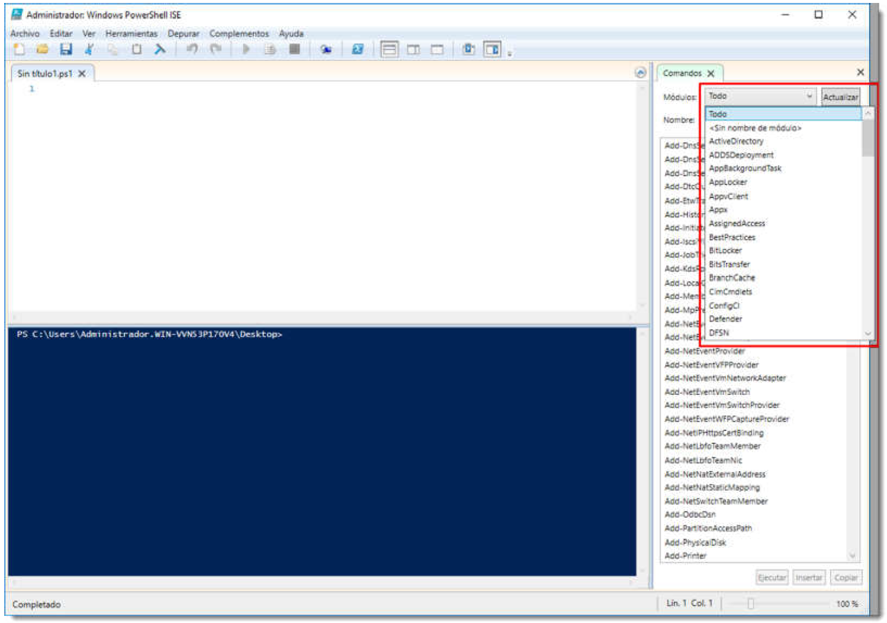
Info
- Uno de los aspectos más interesantes que posee esta aplicación es la barra de información que muestra un listado de todos los cmdlets de esta herramienta. Permite filtrarlos por función y consultar la ayuda de cada uno de ellos.
- También posee un formulario destinado a generar el código de un cmdlet de forma automática.
Example
- Creación de un comando que realice una copia de seguridad de los scripts de trabajo en una memoria externa. Es necesario el uso de Copy-Item para ello, pero no se conoce su sintaxis.
- Si escribimos este cmdlet en el recuadro
Nombrey se pulsa sobreMostrar Ayuda, aparecerá un formulario con sus opciones. Tras completar las necesarias y pulsando el botónInsertarsituado en la parte inferior, el código completo será escrito la parte destinada al terminal.
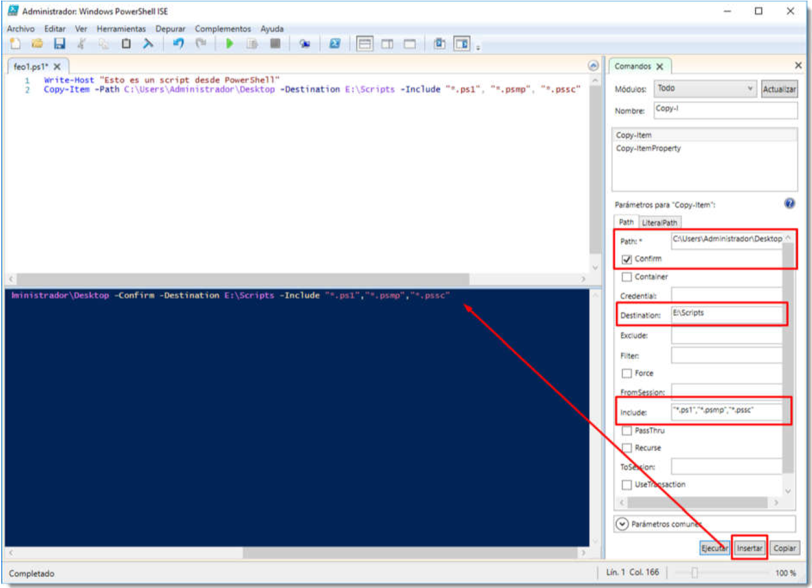
Comentarios¶
Note
Los comentarios en PowerShell se realizan precediendo a la línea con el carácter # si se trata de una sola línea y <# y #> si es multilínea.
Depuración¶
La depuración es el proceso de examinar un script mientras se ejecuta para identificar y corregir errores en las instrucciones del script. El depurador de PowerShell puede ayudarle a examinar e identificar errores e ineficiencias en los scripts, funciones, comandos, configuraciones o expresiones de PowerShell Desired State Configuration (DSC).
El depurador de PowerShell incluye el siguiente conjunto de cmdlets:
- Set-PSBreakpoint: establece puntos de interrupción en líneas, variables y comandos.
- Get-PSBreakpoint: obtiene puntos de interrupción en la sesión actual.
- Disable-PSBreakpoint: desactiva los puntos de interrupción en la sesión actual.
- Enable-PSBreakpoint: vuelve a habilitar los puntos de interrupción en la sesión actual.
- Remove-PSBreakpoint: elimina puntos de interrupción de la sesión actual.
- Get-PSCallStack: muestra la pila de llamadas actual.
Sintaxis¶
Parámetros en PowerShell¶
A diferencia de GNU/Linux, los parámetros que reciba el script en PowerShell se reciben en el array args. Cada posición del array args[] guarda los parámetros introducidos al script en el orden indicado. Por lo tanto para acceder a los parámetros introducidos se debe acceder al valor de la posición que se desee.
Example
[string]$param1= $args[0]
Write-Host "Hola!. Esto es mi primer script en PowerShell"
Write-Host "Y esto es una segunda línea"
Write-Host "El primer parámetro introducido es $param1"
Note
- El script anterior esperará un parámetro de tipo
stringque será contenido en la variable $param1. - En la cuarta línea mostrará el contenido de la variable por pantalla.
Para poder ejecutar este script, será necesario acompañarlo de un parámetro del siguiente modo.
./Script.ps1 "Fº Javier Hernández Illán"
Para entender por completo el ejemplo anterior, será necesario ver como PowerShell maneja las variables.
Variables¶
Para definir una variable en PowerShell sólo tenemos que nombrarla utilizando para ello cualquier combinación de caracteres, ya sean números, letras o símbolos. Es posible utilizar espacios en el nombre, aunque en este caso el nombre debe ir rodeado por símbolos de llaves {}.
Al contrario que ocurre en shellscript, PowerShell es fuertemente tipado, lo que significa que las variables no son tratadas como cadenas de texto, sino que hay que especificar el tipo de dato que se guardará en ella.
Para definir variables es posible utilizar el método explícito (además con New-Variable y sus opciones), pero también se puede utilizar el método implícito anteponiendo el símbolo $ delante del nombre.
Info
Get-Variable En cualquier momento puedes obtener una lista completa de las variables que se hayan definido hasta ese momento. Para lograrlo, basta con utilizar Get-Variable.
Tipado Implícito¶
| Tipo | Descripción |
|---|---|
[string] |
Cadena de caracteres Unicode |
[char] |
Un sólo carácter Unicode de 16 bits |
[byte] |
Un sólo carácter Unicode de 8 bits |
[int] |
Entero con signo de 32 bits |
[float] |
Número con coma flotante de 32 bits |
[double] |
Número con coma flotante de 64 bits |
[datetime] |
Fecha y Hora |
[bool] |
Valor lógico booleano |
Example
$numero = 9.99
$Final_2021 = 30
${Mi variable} = "Contiene espacios en el nombre"
En la forma implícita el shell establece el tipo de dato de la variable en función del dato que se le asigne en su creación. En el ejemplo anterior $numero es de forma automática de tipo [double], ya que al crearla se ha inicializado con un número con decimales. Por contra la variable $Final_2021 es de tipo [int] ya que se ha guardado un número entero en ella.
Info
- GetType Para poder obtener el tipo de dato de una variable hay que usar el método
GetType().Namesobre cualquier variable: Write-Host $numero.GetType().Name
Tip
- Una variable cuya definición de tipo se ha realizado de forma implícita, podrá cambiar el tipo de dato almacenado durante la ejecución del programa sin experimentar ningún tipo de error.
- Esta práctica aunque cómoda no es muy recomendable.
Tipado Explícito¶
Es buena idea tomar el control del tipado de las variables y asignarlo en función de las necesidades del programa. De esta forma se ahorrarán futuras conversiones de datos y posibles pérdidas de información. Para ello se usa la forma explícita de crear variables y junto con su creación se define el tipo de dato que va a contener.
Example
[float] $numero = 9.99
[int] $Final_2021 = 30
[string] ${Mi variable} = "Contiene espacios en el nombre"
Al contrario que en el caso anterior, cuando el dato asignado no coincida con el tipo esperado, pueden ocurrir dos cosas:
- Se modifiquen las características del dato para amoldarse al tipo de variable, lo que puede traducirse en la pérdida de datos y un mal funcionamiento del script,
- Se produzca un error si esa conversión no es posible y se detenga el script.
Interacción con el usuario¶
PowerShell posee dos cmdlets para realizar estas tareas:
- El primero de ellos es Write-Host y tiene un comportamiento similar al echo en GNU/Linux.
- El segundo comando para interactuar con el usuario es Read-Host el cual permite imprimir un mensaje por el terminal y recoger aquello que el usuario ha escrito. Funciona de forma muy parecida al comando read en el terminal de GNU/Linux.
[string] $marine = Read-Host "¿Cuál es el nombre del marine de Doom?"
Write-Host "No se sabe, pero lo has intentado con $marine"
Note
Este script detendrá su ejecución en la línea donde aparece Read-Host, esperará a que el usuario conteste a la pregunta y seguirá con la ejecución, del mismo modo que ocurre con shellscript.
Operadores¶
Aritméticos¶
Las operaciones aritméticas en PowerShell son más intuitivas que en shellscript. Son las mismas que en el caso anterior: +, -, * , / y %. Su uso es más sencillo puesto que es el propio terminal en que realiza los cálculos aritméticos y no a través de un comando.
[int] $a=10
[float] $b=20
[int] $res=$a+$b
Write-Host $res
Write-Host $a+$b
Write-Host "$a x $b = " ($a*$b)
También se dispone de expansores de terminal como en GNU/Linux.
Note
Nótese que en la última línea aparece directamente el producto $a*$b ya que al rodear la operación con paréntesis, se convierte en un expansor, realiza la operación en su interior y envía el resultado fuera.
Existen variantes que simplifican el uso de algunos operadores.
| Operador | Uso | Equivalencia |
|---|---|---|
+= |
$contador += 5 | $contador = $contador+5 |
-= |
$contador -= 5 | $contador = $contador-5 |
*= |
$contador *= 5 | $contador = $contador*5 |
/= |
$contador /= 5 | $contador = $contador/5 |
Además de estos operadores existen dos específicos para el incremento (++) y decremento (--) de una unidad, ideal para el uso de variables como contadores.
Lógicos¶
| Operador | Descripción |
|---|---|
-and |
Devuelve verdadero si las dos expresiones son verdaderas. |
-or |
Devuelve verdadero si una de las dos expresiones o las dos son verdaderas. |
-xor |
Devuelve verdadero si tan sólo una de las expresiones es verdadera. |
-not o ! |
Devuelve verdadero cuando la expresión da el valor falso. |
Example
Write-Host ((6 -ge 4) -and (7 -le 7))
Write-Host ((10 -gt 1) -or (2 -lt 2))
Write-Host ((1 -gt 0) -xor (4 -le 1))
Write-Host ( -not (12 -lt 10))
Write-Host (!(12 -lt 10))
Note
En el ejemplo anterior si se ejecuta el script en un terminal PowerShell, todos los resultados serán verdaderos.
Como en todos los lenguajes de programación fuertemente tipados, existen operadores lógicos para comprobar el tipo de dato de una variable, que resultan muy útiles para la interacción con los usuarios.
| Operador | Acción | Ejemplo |
|---|---|---|
-is |
Devuelve verdadero si es del tipo indicado. | "Javi" -is [string] es verdadero |
-isnot |
Devuelve falso si es del tipo indicado. | "Javi" -isnot [string] es falso |
-as |
Convierte tipos de datos compatibles. | $valor = 19.90; Write-Host ($valor -as [int]) |
Comparación¶
Los operadores de comparación devuelven tan sólo un valor booleano que puede tener dos valores; verdadero o falso.
| Operador | Acción | Ejemplo |
|---|---|---|
-eq |
Comprueba si son iguales. | 5 -eq 3 es falso |
-ieq |
Iguales. En cadenas no es casesensitive. | "Javi" -ieq "javi" es verdadero |
-ceq |
Iguales. En cadenas es casesensitive. | "Javi" -ceq "javi" es falso |
-ne |
Verifica si son diferentes. | 5 -ne 3 es verdadero |
-lt |
Coteja si la izquierda es menor que derecha. | 5 -lt 3 es falso |
-le |
Constata si la izquierda es menor o igual que derecha. | 5 -le 3 es falso |
-gt |
Examina si la izquierda en mayor que la derecha. | 5 -gt 3 es verdadero |
-ge |
Revisa si la izquierda en mayor o igual que la derecha. | 5 -ge 3 es verdadero |
PowerShell añade operadores de comparación que aportan un nivel de complejidad mayor.
| Operador | Acción | Ejemplo |
|---|---|---|
-like |
Evalúa un patrón "es como". | "Perro" -like "Pe*" es verdadero |
-notlike |
Evalúa un patrón "no es como". | "Perro" -notlike "Pe*" es falso |
-contains |
Contiene un valor. | 1,2,3 -contains 2 es verdadero |
-notcontains |
No contiene un valor. | 1,2,3 -notcontains 2es falso |
Control del flujo en PowerShell¶
En esta parte se indicará tan sólo la sintaxis de las estructuras alternativas e iterativas, ya que los conceptos teóricos ya se han abordado en el apartado de Shellscript.
Estructuras alternativas¶
Alternativa Simple¶
if ( condición ){
ejecutar este código si la condición es verdadera
}
Alternativa doble¶
if ( condición ) {
ejecutar este código si la condición es verdadera
} else {
ejecutar este código si la condición es falsa
}
Alternativa múltiple¶
if ( condición1 ) {
ejecutar este código si la condición1 es verdadera
} elseif ( condición2 ) {
ejecutar este código si la condición2 es verdadera
} else {
ejecutar este código si todas las condiciones son falsas
}
El equivalente a case en GNU/Linux¶
switch ($valor){
opción1 { código a ejecutar si opción1 coincide con $valor }
opción2 { código a ejecutar si opción2 coincide con $valor }
opciónN { código a ejecutar si opciónN coincide con $valor }
default { código a ejecutar si ninguna de las opciones coincide }
}
Example
$saludo = Read-Host "Escribe un saludo"
switch ($saludo){
"Buenos días" { Write-Host "Saludaste en Castellano" }
"Bon dia" { Write-Host "Saludaste en Catalán" }
"Bo dias" { Write-Host "Saludaste en Gallego" }
"Egun on" { Write-Host "Saludaste en Euskera" }
"Good morning" { Write-Host "Saludaste en Inglés" }
"Bonjour" { Write-Host "Saludaste en Francés" }
"Buon Giorno" { Write-Host "Saludaste en Italiano" }
"Bom día" { Write-Host "Saludaste en Portugués" }
"Guten Tag" { Write-Host "Saludaste en Alemán" }
{$_ -is [string]} { Write-Host "La variable que has pasado es una cadena" }
default { "Eso no parece un saludo" }
}
Note
- Existe la posibilidad de colocar operadores lógicos como opciones de un
switch, si estos operadores lógicos devuelven un valor verdadero, se ejecutará esa parte del código, si se evalúa a falso, no realizará esa parte del código. - El carácter $_ hace referencia a la variable $saludo, de ese modo es posible realizar operaciones lógicas con el valor pasado.
Además de todo esto, switch posee una serie de opciones que no están presentes en GNU/Linux, aunque es posible realizarlas de otra manera.
| Operador | Descripción |
|---|---|
-wildcard |
Sólo aplicable a [string]. Indica si cumple un patrón determinado. |
-exact |
Sólo aplicable a [string]. Debe coincidir exactamente con alguno de los patrones. |
-casesensitive |
Sólo aplicable a [string]. Debe coincidir en mayúsculas y minúsculas. |
-file |
La entrada es un archivo. Se evaluará cada línea del archivo. |
-regex |
Sólo aplicable a [string]. Permite usar expresiones regulares en la comparación. |
Example
-regex
$target = 'https://bing.com'
switch -Regex ($target){
'^ftp\://.*$' { "$_ is an ftp address"; Break }
'^\w+@\w+\.com|edu|org$' { "$_ is an email address"; Break }
'^(http[s]?)\://.*$' { "$_ is a web address that uses $($matches[1])"; Break }
}
Example
-wildcard
switch -wildcard ( Read-Host "Escribe un número de teléfono" ){
"8*" { Write-Host "Es un teléfono fijo: $_"; break }
"9*" { Write-Host "Es un teléfono fijo: $_"; break }
"6*" { Write-Host "Es un teléfono móvil: $_"; break }
default { "$_ no parece un teléfono" }
}
- El comando break que aparece al final de cada opción indica que si encuentra una coincidencia no siga buscando más y rompa el switch, ahorrándose así el resto de comprobaciones.
Estructuras iterativas¶
while¶
A diferencia de lo que ocurría en GNU/Linux, en PowerShell existen diferencias entre las estructuras while, do while y do until. En este caso, la única de las tres que evaluará la condición al inicio del bloque de código será la primera. El resto comprueba la condición al final del bloque ejecutando como mínimo una vez el código que contiene.
while ( condición ){
bloque de código a ejecutar mientras condición sea verdadera
}
do {
bloque de código a ejecutar mientras condición sea verdadera
} while ( condición )
Existe una variante de esta estructura que se crea sustituyendo el while por un until. Esto cambia el sentido de la condición y es este caso el bloque se repite hasta que la condición se cumpla. Esta estructura no es muy utilizada, pero siempre es bueno contar con herramientas extra.
for¶
También la estructura for es sensiblemente diferente que en shellscript. Esta estructura en PowerShell tiene más que ver con los lenguajes de programación y se utiliza cuando el programador sabe el número de iteraciones que hay que realizar para solucionar un problema.
for ( inicialización; condición; incremento ){
bloque de código a ejecutar mientras condición sea verdadera
}
Por ejemplo, la creación de la tabla de multiplicar de un número especificado por el usuario. Para resolver este problema sí se conoce el número de iteraciones necesarias, concretamente diez.
Example
$numero = Read-Host "Dame un número"
Write-Host "Esta es la tabla del $numero"
for ( $i=0; $i -lt 11; $i++){
Write-Host " $i x $numero = "($i*$numero)
}
foreach¶
La estructura foreach en PowerShell es el equivalente a for en shellscript. Está pensada para recorrer un conjunto de valores y ejecutar el bloque de código una vez por cada elemento del conjunto.
foreach ( elemento in conjunto ){
bloque de código a ejecutar por cada elemento del conjunto
}
Al igual que ocurre en GNU/Linux, el conjunto puede serlo de cualquier tipo de objetos, incluso los ficheros de una carpeta. En el siguiente ejemplo se buscan los ficheros que en su nombre contengan la cadena de texto que el usuario ha especificado:
Example
$ruta = "C:\Users\Administrador\Desktop"
$busca = Read-Host "Escribe el texto a buscar"
foreach ($archivo in Get-ChildItem $ruta){
if ($archivo.Name.IndexOf($busca) -ge 0){
Write-Host $archivo.Name
}
}
Note
Las opciones que ofrece PowerShell en cuanto a estructuras de control parece una oferta más completa que la de shellscript, aunque para las tareas que se van a realizar en este módulo, ambos sistemas poseen herramientas suficientes.
Vectores y Funciones¶
Vectores¶
PowerShell considera como un vector a toda colección de objetos, sea cual sea su tipo. Los elementos que lo conforman pueden estar separados por comas, estar expresados por el operador de rango .. o ser el resultado de alguna expresión que devuelva una colección, como así lo hacen muchos cmdlets.
Example
$Vacia = @()
$Enteros = 1,2,3,4,5
$Texto = "Lunes","Martes","Miércoles", "Jueves","Viernes"
$EnterosRango = 1..10
De esta forma se han definido cuatro vectores; el segundo contendrá enteros y el tercero cadenas de caracteres. La última línea asigna los valores desde el 1 al 10 utilizando el operador rango .. .
Note
El operador de rango representa una secuencia de enteros, con los límites superior e inferior separados por dos puntos decimales. Permite expresar el rango en orden ascendente o descendente, así como también que los límites inferior o superior sean establecidos por medio de variables que contengan enteros.
Un vector también puede definirse como el resultado de una expresión.
Example
$EnterosFor = @(For($i=1;$i -lt 5;$i++){$i})
$Comando = Get-Process | Sort-Object ProcessName
En la primera línea $EnterosFor será completado a través del resultado de una estructura iterativa, mientras que la segunda contendrá el resultado del cmdlet indicado. Además de todas estas formas de declaración, también se puede realizar a través del cmdlet New-Variable
Example
New-Variable -Name Enteros -Value 1,2,3,4,5 -Force
New-Variable -Name Texto -Value "Lunes","Martes","Miércoles","Jueves","Viernes" –Force
New-Variable -Name EnterosRango -Value (1..5) -Force
New-Variable -Name EnterosFor -value (. {For($i=1;$i -lt 5;$i++){$i}}) -Force
Note
El atributo -Force sobrescribe la variable si esta ya existe, de ese modo no saltará ningún error a la hora de definir estas variables.
Para obtener el número de elementos de un vector se utiliza el método Length, si se aplica a un elemento del vector, devolverá el tamaño de este elemento, no del vector completo.
Example
$Texto.Length # mostrará 5 por pantalla
$Texto[2].Length # mostrará 9, las letras de "Miércoles"
Para añadir elementos al final de un vector se utiliza el operador +=.
Example
$Enteros += 6
$Texto += "Sábado", "Domingo"
Note
La primera línea añade el entero 6 al vector $Enteros, mientras que en la segunda se añaden los elementos "Sábado" y "Domingo" al vector $Texto.
Para eliminar un elemento de un vector PowerShell no ofrece un sistema parecido al de añadir valores, sino que tendrá que reescribirse el vector de nuevo sin los valores no deseados.
Funciones¶
También en PowerShell es posible utilizar funciones a través de la siguiente estructura:
Function <NOMBRE> {
Param (<Parametro>,<Parametro>,...)
Comandos PowerShell
}
Warning
El paso de parámetros a una función se realiza de idéntica forma que en shell script. La principal diferencia entre las funciones usadas en shell script es que ahora es preferible declarar y tipar antes de iniciar con el código de la función.
Example
Function Get-Sumar {
param ([integer] $a, [integer] $b)
$sumar = $a + $b
Write-Host "La suma es $sumar"
}
Note
Si se ejecuta la siguiente instrucción: Get-Sumar 2 8 La salida del terminal será La suma es 10.
Si se necesita que las funciones estén disponibles durante la sesión del usuario o si es necesario enlazarlas desde otro script, se deberá utilizar la notación de punto, del mismo modo que ocurría en shell script.
Actividades¶
Formato de entrega
Escribe el código de los scripts en PowerShell que se detallan en cada ejercicio. Deberás crear un fichero de texto para cada ejercicio con el siguiente nombre: ejXXX.ps1, donde las X representan el número de ejercicio. Una vez terminada la práctica, comprime todos estos ficheros en uno y súbelos al Moodle.
- AC201. (RA.7 // CE7a, CE7b, CE7g y CE7i // 1-3p) Genera un Script que muestre los procesos del sistema ordenados por el id.
- AC202. (RA.7 // CE7a, CE7b, CE7g y CE7i // 1-3p) Muestra los servicios cuyo nombre empiece por la letra
n, utilizando la creación de un script.
- AC203. (RA.7 // CE7a, CE7b, CE7f y CE7i // 1-3p) Crea un script que se le introduzca dos números como argumentos y los muestre por pantalla.
- AC204. (RA.7 // CE7a, CE7b, CE7f y CE7i // 1-3p) Diseña un script en PowerShell que pida al usuario dos números, los guarde en dos variables y los muestre por pantalla.
- AC205. (RA.7 // CE7a, CE7b, CE7f y CE7i // 1-3p) Crea un script PowerShell que muestre por pantalla el resultado de de las siguientes operaciones. Debes tener en cuenta que a, b y c son variables enteras que son preguntadas al usuario al iniciar el script.
- a%b
- a/c
- 2 * b + 3 * (a-c)
- a * (b/c)
- (a*c)%b
- AC206. (RA.7 // CE7a, CE7f y CE7i // 1-3p) Crea un script que si no se le pasa ningún argumento nos lo diga.
- AC207. (RA.7 // CE7a, CE7f y CE7i // 1-3p) Crea un script PowerShell que al ejecutarlo muestre por pantalla uno de estos mensajes "Buenos días", "Buenas tardes" o "Buenas noches", en función de la hora que sea en el sistema (de 8:00 de la mañana a 15:00 será mañana, de 15:00 a 20:00 será tarde y el resto será noche). Usa el
cmdlet Get-Date.
- AC208. (RA.7 // CE7a, CE7b, CE7c, CE7d, CE7f y CE7i // 1-3p) Construye tres script PowerShell utilizando estructuras iterativas:
- el primero ej208A.ps1, que imprima la tabla de multiplicar de un número preguntado al usuario. Este número debe ser entero positivo.
- el segundo ej208B.ps1, que pida un número e indique si se trata de un número par y si es número primo.
- el tercero ej208C.ps1, que muestre las diez primeras tablas de multiplicar por pantalla. Hay un tiempo de espera de un segundo entre ellas. Utiliza las estructuras while, do while, for y foreach y el cmdlet Start-Sleep.
NOTA
Utiliza en la generación de los scripts los cmdlets de depuración si así lo consideras al haber encontrado problemas en la ejecución.
- AC209. (RA.7 // CE7a, CE7b, CE7c, CE7d, CE7f, CE7h y CE7i // 1-3p) Diseña un script PowerShell que lea un vector con 365 temperaturas y calcule la media y cuantos días han estado por encima y cuantos por debajo de ella. Rellena el vector con valores aleatorios entre -5 y 35, para ello usa Get-Random.
- AC210. (RA.7 // CE7a, CE7b, CE7c, CE7d, CE7e, CE7f, CE7g, CE7h y CE7i // 1-3p) Crea un script PowerShell para que haga una copias de seguridad de todos los archivos del directorio de trabajo del usuario actual. Deberá realizar las siguientes acciones:
- comprobará si el archivo ya existe en la copia de seguridad, si es así comprobará cual de los dos es más reciente y que tamaño tienen. Si es más reciente o posee un tamaño mayor, lo copiará. En cualquier otro caso, no lo copia.
- llevará un registro de todos los archivos copiados cada vez que se ejecute mediante un archivo de bitácora. Guarda este fichero el directorio que contiene el script.
Crea una función para cada tarea realizada en este script.
NOTA
Utiliza en la generación de los scripts los cmdlets de depuración si así lo consideras al haber encontrado problemas en la ejecución.
- AC211. (RA.7 // CE7a, CE7b, CE7c, CE7d, CE7e, CE7f, CE7g, CE7h y CE7i // 1-3p) Crea un script PowerShell que rellene un vector con diez números de forma aleatoria y que los muestre por pantalla de la siguiente forma:
- en orden inverso a como han sido introducidos los valores.
- los valores ordenados de menor a mayor en una sola línea.
- los valores ordenados de mayor a menor en una sola línea la suma total de sus valores.
- cantidad de valores pares que contiene el vector.
- la suma total de números impares.
- la media aritmética de los valores que contiene el vector.
- AC212. (RA.7 // CE7a, CE7b, CE7c, CE7d, CE7e, CE7f, CE7g, CE7h y CE7i // 1-3p) Diseña un script PowerShell que muestre un menú al usuario con cuatro operaciones disponibles: Crear directorio, Eliminar directorio, Mostrar directorio, Informe de directorio, Copia de directorio y Salir. Una vez elegida una opción correcta, el programa debe solicitar un nombre de directorio y hacer la operación seleccionada. Tras esto debe mostrar un mensaje con el resultado de la operación. Crea una función para cada una de estas opciones.
- Si se elige la opción Informe de directorio, mostrará por pantalla el número de ficheros que contiene, cuantos son carpetas, cuantos directorios y el tamaño total de ellos. Si la carpeta no existe, mostrará un error.
- Si elige la opción Copia de directorio, preguntará la carpeta de destino y mostrará fichero a fichero la copia.
- AC213. (RA.7 // CE7a, CE7b, CE7c, CE7d, CE7e, CE7f, CE7g, CE7h y CE7i // 1-3p) Realiza un script PowerShell que permita crear un informe de las IP libres en la red en la que se encuentra el equipo. Debe contener las siguientes opciones:
- el informe contendrá un listado de todas las IP de la red a la que pertenece el equipo indicando si está libre o no (usa el comando ping).
- en el informe debe aparecer el tipo de red (A, B o C) en el que está inmerso el ordenador con el nombre de la red, su broadcast y su máscara de subred.
- RG214. (RA.7 // CE7a, CE7b, CE7c, CE7d, CE7e, CE7f, CE7g, CE7h y CE7i // 30p). Trabajo en grupos de 2-3 personas para crear un sistema completo de gestión de servicios de Windows que integre todos los conceptos aprendidos durante la unidad.
Acceso Remoto¶
La administración remota de sistemas operativos es fundamental en entornos empresariales y de infraestructura, permitiendo gestionar servidores y equipos desde cualquier ubicación de forma segura y eficiente. En esta unidad aprenderemos a instalar, configurar y utilizar diferentes servicios y herramientas que permiten el acceso y administración remota de sistemas, tanto en modo texto como gráfico.
Propuesta didáctica¶
En esta unidad vamos a trabajar el RA4 de ASO:
RA4. Administra de forma remota el sistema operativo en red valorando su importancia y aplicando criterios de seguridad.
Criterios de evaluación (RA4)¶
A lo largo de la unidad se trabajarán y evidenciarán los siguientes criterios:
- CE4a: Se han descrito métodos de acceso y administración remota de sistemas.
- CE4b: Se ha diferenciado entre los servicios orientados a sesión y los no orientados a sesión.
- CE4c: Se han utilizado herramientas de administración remota suministradas por el propio sistema operativo.
- CE4d: Se han instalado servicios de acceso y administración remota.
- CE4e: Se han utilizado comandos y herramientas gráficas para gestionar los servicios de acceso y administración remota.
- CE4f: Se han creado cuentas de usuario para el acceso remoto.
- CE4g: Se han realizado pruebas de acceso y administración remota entre sistemas heterogéneos.
- CE4h: Se han utilizado mecanismos de encriptación de la información transferida.
- CE4i: Se han documentado los procesos y servicios del sistema administrados de forma remota.
Contenidos¶
Bloque 1 — Acceso remoto en modo texto (Sesión 1–2)
- Introducción a los servicios de acceso remoto.
- Terminales en modo texto: Telnet, Rlogin, SSH.
- Protocolo SSH: características, funcionamiento y establecimiento de conexión.
- Autenticación: usuario/contraseña y claves públicas/privadas.
- Tunelización y port-forwarding.
- OpenSSH: instalación y configuración.
- Clientes SSH: gráficos y consola.
- Funcionalidades adicionales: SCP y SFTP.
Bloque 2 — Escritorio remoto (Sesión 2–3)
- Protocolos de escritorio remoto: RDP y VNC.
- Configuración de xRDP en Ubuntu 24.04.
- Configuración de RDP en Windows 11.
- RemoteApp: características y casos de uso.
Bloque 3 — Herramientas gráficas externas (Sesión 3–4)
- RealVNC: instalación y configuración.
- TeamViewer: características y uso.
- AnyDesk: acceso remoto multiplataforma.
- Apache Guacamole: puerta de enlace sin cliente.
Actividades iniciales
- ¿Qué diferencia existe entre Telnet y SSH en cuanto a seguridad?
- ¿Qué puerto utiliza por defecto el protocolo SSH?
- Explica brevemente qué es la tunelización SSH.
- ¿Qué protocolos se utilizan para escritorio remoto?
- Nombra al menos tres herramientas gráficas para administración remota.
- ¿Qué ventajas ofrece la autenticación por claves públicas/privadas frente a usuario/contraseña?
- ¿Qué es RemoteApp y cuándo es útil su implementación?
- Explica la diferencia entre SCP y SFTP.
Programación de Aula (5 sesiones)¶
Esta unidad se imparte con una duración estimada de 5 sesiones lectivas:
Sesiones 1-3: Acceso remoto en modo texto y túneles SSH¶
| Sesión | Contenidos | Actividades | Criterios trabajados |
|---|---|---|---|
| 1 | Teoría: Introducción a servicios de acceso remoto. Terminales en modo texto: Telnet, Rlogin, SSH. Protocolo SSH: características, funcionamiento y establecimiento de conexión. | Explicación teórica | CE4a, CE4b, CE4c, CE4h |
| 2 | Teoría: Autenticación SSH: usuario/contraseña y claves públicas/privadas. Tunelización y port-forwarding. OpenSSH: instalación y configuración. Clientes SSH y funcionalidades adicionales (SCP y SFTP). | Explicación teórica | CE4a, CE4c, CE4d, CE4e, CE4h |
| 3 | Práctica: Configuración de túneles SSH con Docker. Implementación y documentación de la práctica PR301. | PR301 | CE4a, CE4c, CE4d, CE4e, CE4h, CE4i |
Sesiones 4-5: Escritorio remoto en Windows Server (AWS)¶
| Sesión | Contenidos | Actividades | Criterios trabajados |
|---|---|---|---|
| 4 | Práctica: Creación de instancia Windows Server en AWS. Configuración de acceso remoto (RDP). Configuración inicial y conexión. | PR302 | CE4a, CE4d, CE4e, CE4f, CE4g, CE4i |
| 5 | Práctica: Administración remota de Windows Server vía RDP. Configuración avanzada y documentación de la práctica PR302. | PR302 (continuación) | CE4a, CE4c, CE4d, CE4e, CE4f, CE4g, CE4i |
Introducción¶
En la mayoría de los casos, los servidores y máquinas que necesitamos gestionar no comparten el mismo espacio físico. Como por ejemplo servidores que estén ubicados en:
- Diferentes departamentos de una empresa
- Centros de proceso de Datos (CPD) generales
- Computación en la nube
Para poder acceder a ellos existen servicios, métodos y herramientas, que se detallan a continuación.
Terminales en modo texto¶
Una de las formas de administrar de forma remota es instalar un servidor que permita el acceso en forma de terminal de texto. Estos programas permiten acceder al equipo vía red utilizando un nombre de usuario y contraseña como si estuviésemos accediendo de forma local al mismo. Entre los diferentes servicios de este tipo destacan:
-
Telnet: basado en el protocolo del mismo nombre. Este protocolo utiliza por defecto el puerto 23. El problema de este es que la información viaja por la red sin cifrar, con la correspondiente falta de seguridad.
-
Rlogin (Remote Login): es una aplicación TCP/IP que comienza una sesión de terminal remoto sobre el anfitrión especificado como host. El anfitrión remoto debe hacer funcionar un servicio de Rlogind (o demonio) para que el Rlogin conecte con el anfitrión. Utiliza un mecanismo estándar de autorización de los Rhosts.
-
SSH (Secure Shell): Este protocolo permite poder acceder a otro ordenador a través de una red para ejecutar comandos en esa máquina, controlarla de manera remota e intercambiar archivos entre ambas. Ofrece una autenticación muy potente y comunicaciones seguras en canales no protegidos.
A continuación se entra más en detalle en este último.
SSH¶
Características principales¶
- Utiliza el puerto 22 TCP para el establecimiento de las conexiones.
- Una vez establecida la conexión podremos ejecutar las órdenes como si se tratara de una terminal local.
- Está implementado para la mayoría de sistemas operativos existentes; Windows, linux, OSX,...
- Proporciona mecanismo para asegurar la autenticación, integridad y confidencialidad de la información.
- Autenticación: Después de la primera conexión, el cliente puede conocer que se está conectando al mismo servidor en futuras sesiones: conexiones de confianza.
- Confidencialidad: Todos los datos que se envían y se reciben durante la conexión son cifrados.
- Integridad: Proporciona mecanismos para asegurar que la información enviada no es manipulada por un tercero
Además destaca por:
- Permitir copiar datos de forma segura (tanto archivos sueltos como simular sesiones FTP cifradas).
- Gestionar claves RSA para no escribir contraseñas al conectar a los dispositivos.
- Pasar los datos de cualquier otra aplicación por un canal seguro tunelizado.
- Basado en arquitectura cliente-servidor

Funcionamiento¶
Se basa en la Criptografía (Técnica utilizada para convertir un texto claro en otro cuyo contenido es igual al anterior pero solo puede ser decodificado por personas autorizadas.) SSH utiliza varios algoritmos de encriptación y autenticación.
- Para establecer la conexión con la máquina remota utiliza algoritmos de encriptación asimétrica.
- Para la transferencia de datos utiliza algoritmos de encriptación simétrica, que son más rápidos.
1. Encriptación simétrica
Los algoritmos de criptografía simétrica son los que utilizan la misma clave tanto para el proceso de cifrado como para el descifrado del mensaje. Los más utilizados: DES, 3DES, AES, IDEA y Blowfish

Nota
Problema: Intercambio de claves.
2. Encriptación Asimétrica
Utiliza dos claves matemáticamente relacionadas de manera que lo que ciframos con una (clave pública) sólo puede descifrarse con la segunda (clave privada).
- Algunos algoritmos representativos son: RSA, y DSA

Establecimiento de conexión¶
- El cliente abre una conexión TCP en el puerto 22 del servidor.
- Cliente y servidor negocian qué versión SSH van a utilizar y determinan el algoritmo de criptografía simétrica a utilizar.
- El servidor envía su clave pública al cliente:
- Si es la primera vez la guardará para futuras conexiones.
- En caso contrario la compara con la que ya tenía guardadas para la IP de conexión (Autenticación del servidor)
- El cliente genera una clave de sesión aleatoria mediante el algoritmo seleccionado en el primer paso y la envía al servidor cifrando con la clave pública del mismo.
- El resto de comunicaciones se hará utilizando esta clave compartida y será indescifrable.
- A partir de aquí se llevará a cabo la autenticación del usuario y la transmisión de información/órdenes a ejecutar en la máquina remota

Autentificación del cliente¶
Puede llevarse a cabo de 2 formas:
- Usuario y contraseña: Aunque las credenciales van cifradas, es menos seguro ya que es más propenso a ataques de fuerza bruta.
CONSEJO
Tendremos que utilizar sistemas de detección de intrusos como fail2ban, esta aplicación busca en los registros (logs) de los programas que se especifiquen las reglas que el usuario decida para poder aplicar una penalización. La penalización puede ser bloquear la aplicación que ha fallado en un determinado puerto, bloquearla para todos los puertos, etc. Las penalizaciones, así como las reglas, son definidas por el usuario.
-
Clave pública/privada:
- Cuando el cliente se conecta al servidor, le informa de la clave pública que va a utilizar.
- Si el servidor la tiene en su almacén de claves autorizadas (authorized_keys), enviará un mensaje aleatorio cifrado con la clave pública que, si el cliente es capaz de descifrar, quedará autenticado.
- El cliente decodificará el mensaje con la clave privada y lo enviará al servidor decodificado.

Recursos de apoyo
Tunelización¶
El SSH Tunneling permite crear un canal cifrado punto a punto para transportar tráfico entre dos extremos, incluso a través de redes no confiables. Se apoya en el Port-forwarding, que toma los datos en un extremo del túnel y los reenvía de forma segura al otro:
- Port-forwarding local (-L): expone en la máquina cliente un puerto que llega a un servicio remoto.
- Ej.:
ssh -L 8080:servidor_remoto:80 usuario@servidor_remoto - Port-forwarding remoto (-R): expone en el servidor un puerto que llega a un servicio local del cliente.
- Ej.:
ssh -R 0.0.0.0:1081:localhost:3000 usuario@servidor - Port-forwarding dinámico (-D): crea un proxy SOCKS para redirigir tráfico de forma flexible.
- Ej.:
ssh -D 1080 usuario@servidor

Ejemplos
- Reenvío local:
ssh -L 8080:servidor_remoto:80 usuario@servidor_remoto - Reenvío remoto (PR301):
ssh -R 0.0.0.0:1081:localhost:3000 mv-tunnel - Proxy SOCKS:
ssh -D 1080 usuario@servidor

Recursos de apoyo
Otros recursos recomendados
- NetworkChuck - SSH Tunneling Explained: Explicación clara y profesional de los conceptos de SSH tunneling con ejemplos prácticos de port forwarding local y remoto.
- LearnLinuxTV - SSH Port Forwarding: Tutorial detallado sobre port forwarding con casos de uso reales.
- Corey Schafer - SSH Tutorial: Guía completa sobre SSH incluyendo tunneling, port forwarding y mejores prácticas de seguridad.
Clientes SSH¶
Podemos clasificarlos en: clientes gráficos y de consola.
1. Gráficos
- Putty → El más utilizado

2. Terminal/Consola
- CMD
- Los sistemas operativos LIKE-UNIX disponen de un cliente ssh en modo consola pre-instalado

Ejemplos comandos de uso cliente consola
- Conexión a una máquina remota:
ssh usuario@ejemplo.servidor.es - Ejecutar una orden sin conectarse:
ssh ejemplo.servidor.es comandossh serdis.dis.ulpgc.es ls ./
OpenSSH¶
OpenSSH es un conjunto de aplicaciones que permiten realizar comunicaciones cifradas a través de una red, usando el protocolo SSH.
- Fue creado como una alternativa libre y abierta al programa Secure Shell, que es software propietario.
- Se trata de un proyecto de código abierto y licencia libre para su utilización para cualquier propósito.
- Es compatible con los protocolos SSH1 (No seguro) y SSH2.
- Está disponible para plataformas Gnu/linux y Windows, así como Unix, Mac, Solaris o AIX

Funcionalidades adicionales¶
- Permite la copia de archivos de la máquina local a la máquina remota o a la inversa mediante securecopy (SCP).
Ejemplos
- Transferir un archivo local a un sistema remoto:
scp archivo_local usuario@servidor: / archivo_remoto - Transferir un archivo remoto a un sistema local:
scp usuario@servidor:/archivo_remoto /archivo_local - Especificar múltiples archivos:
scp /dir_local/* usuario@servidor:/dir_remoto/
- Incluye soporte completo para SFTP (SSHftp): Sin embargo, se trata de un protocolo totalmente diferente a FTP, y está disponible a partir de la versión 2.5.
Ejemplos
sftp usuario1@servidor.dominio.es- A continuación se ejecutarían comandos como: put, get, rm, ls, lpwd, ...
Escritorio remoto¶
Se habla de escritorio remoto cuando un usuario se conecta a un equipo desde otro utilizando la red y además se conecta al entorno gráfico de este. Se suele utilizar para realizar administración remota del equipo.
La mayoría de los sistemas operativos tienen incorporada alguna utilidad para la conexión en entorno gráfico de forma remota. En algunos casos, el usuario desde el equipo local controla el equipo remoto y el usuario de este puede ver lo que se está haciendo en él.
Para esto se utilizan diferentes protocolos. Para cualquiera de ellos tendremos dos partes:
- La parte del servidor que se instalará en el equipo a controlar remotamente.
- La parte cliente, que se instala en el equipo local desde el que se quiere acceder al equipo remoto.
Los protocolos que pueden usarse son:
- RDP: protocolo de acceso a escritorio remoto (Remote Desktop Protocol). Se utiliza principalmente en Windows, aunque puede instalarse en Linux si la máquina que tiene este sistema operativo debe ser accedido por medio de escritorio remoto desde un equipo Windows.
- VNC: (Virtual Network Computer): Se utiliza en distintas plataformas para proveer de un escritorio remoto a cualquier equipo.
Escritorio remoto en Ubuntu 24.04 con xRDP¶
xRDP es una implementación gratuita y de código abierto del servidor Microsoft RDP que permite que los sistemas operativos distintos de Microsoft Windows proporcionen una experiencia de escritorio remoto totalmente funcional y compatible con RDP.
En Ubuntu 24.04, el proceso de instalación y configuración es similar a versiones anteriores, pero con algunas mejoras en la compatibilidad y estabilidad.
- Para instalar xRDP utilizaremos:
sudo apt update
sudo apt install xrdp -y
NOTA:
Se añade el argumento -y para contestar automáticamente de manera afirmativa a cualquier pregunta que se nos haga durante la instalación. Es recomendable ejecutar apt update antes de instalar para asegurar que tenemos los paquetes más recientes.
- Automáticamente se habrá iniciado el servicio, para comprobarlo se puede ejecutar el siguiente comando:
sudo systemctl status xrdp

- Cuando se instala xrdp, se crea también en el sistema una nueva cuenta de usuario llamada, precisamente,
xrdp. Además, se crea un certificado SSL, en el archivossl-cert-snakeoil.key, dentro de la carpeta/etc/ssl/private/.
A continuación, se debe añadir el usuario xrdp al grupo ssl-cert para lograr que el usuario pueda leer el certificado. Lo haremos con la siguiente orden:
sudo adduser xrdp ssl-cert

- Un problema frecuente en Ubuntu 24.04 al usar el escritorio remoto desde otro equipo que no sea Ubuntu es encontrar la pantalla en negro o problemas con el entorno gráfico.
Para resolverlo, debemos editar el archivo /etc/xrdp/startwm.sh. Primero, hacemos una copia de seguridad:
sudo cp /etc/xrdp/startwm.sh /etc/xrdp/startwm.sh.backup
Luego editamos el archivo:
sudo nano /etc/xrdp/startwm.sh

- Hacia el final del archivo, antes de las líneas que ejecutan el gestor de ventanas, añadimos las siguientes líneas:

unset DBUS_SESSION_BUS_ADDRESS
unset XDG_RUNTIME_DIR

- Después de guardar los cambios, reiniciamos el servicio xRDP:
sudo systemctl restart xrdp
CONSEJO:
En Ubuntu 24.04, si utilizas el entorno de escritorio Wayland (por defecto en algunas instalaciones), es posible que necesites cambiar a X11 para que xRDP funcione correctamente. Puedes verificar tu sesión con echo $XDG_SESSION_TYPE y cambiar a X11 si es necesario.
Escritorio remoto en Windows 11¶
Para configurar el Escritorio Remoto en Windows 11 se deben realizar los siguientes pasos:
- Abrir la aplicación Configuración de Windows 11. Puedes hacerlo de varias formas:
- Presionar
Windows + I(atajo de teclado) - Hacer clic derecho en el botón Inicio y seleccionar Configuración
- Buscar "Configuración" en el menú Inicio
- En la ventana de Configuración, navegar a Sistema → Escritorio remoto (en el panel izquierdo).

NOTA:
Se debe tener en cuenta que el escritorio remoto no está disponible en la versión Home de Windows 11, por lo que se necesita, como mínimo, una versión Pro, Enterprise o Education.
- En el panel derecho, encontrarás la opción Escritorio remoto. Activa el interruptor para habilitar el escritorio remoto.

NOTA:
Al activarlo, aparecerá información indicando que podrás acceder al escritorio de este equipo desde otro dispositivo, independientemente del sistema operativo que utilice. Windows 11 también mostrará el nombre del equipo y la dirección IP para facilitar la conexión.
- Como se trata de una situación potencialmente peligrosa desde el punto de vista de seguridad, el sistema puede mostrar una advertencia. Se debe confirmar la configuración si aparece algún mensaje de seguridad.

Añadir los usuarios autorizados¶
Una vez habilitado el escritorio remoto, más abajo en la misma ventana existe la opción para elegir, entre los usuarios definidos en el sistema, aquellos que podrán hacer uso del escritorio remoto.
- Haz clic en el botón Seleccionar usuarios que pueden tener acceso remoto a este equipo.

- Esto abrirá una nueva ventana con los usuarios que están habilitados en ese momento (como se acaba de activar, aún no hay ninguno). Aquí se puede añadir o quitar usuarios de la lista haciendo clic en Agregar... o Quitar.

- Al hacer clic en Agregar..., se abrirá una nueva ventana que nos permitirá elegir el usuario o usuarios que necesitemos. Puedes escribir el nombre del usuario o buscar usuarios en el sistema.

- Si el sistema encuentra varios objetos que contienen el texto que se ha escrito, aparecerá una nueva ventana para elegir el que nos interese. Si solo hubiese existido un objeto, se saltaría este paso.

- Una vez seleccionado, se volverá a la ventana anterior, donde verás que se ha reconocido correctamente el usuario (se muestra el nombre completo de la cuenta, incluyendo el nombre del equipo en formato NetBIOS).

- Al cerrar la ventana de selección de usuarios, volverás a la ventana anterior, donde ahora se observa que la cuenta de usuario ya aparece en la lista de usuarios autorizados.
Como es lógico, se puede repetir el proceso tantas veces como necesitemos para añadir más usuarios.

CONSEJO:
En Windows 11, también puedes acceder a la configuración del escritorio remoto mediante el Panel de Control clásico: Panel de Control → Sistema → Configuración avanzada del sistema → pestaña Remoto. Sin embargo, el método a través de la aplicación Configuración es el recomendado en Windows 11.
Activación del Escritorio Remoto por PowerShell¶
Además de activar el Escritorio Remoto desde la interfaz gráfica, es posible habilitar esta característica y configurar permisos a través de comandos de PowerShell. Esto resulta útil para administradores o para automatizar despliegues en varios equipos.
Habilitar el Escritorio Remoto¶
Para habilitar el escritorio remoto desde PowerShell (ejecutar como Administrador):
# Habilitar Escritorio Remoto
Set-ItemProperty -Path "HKLM:\System\CurrentControlSet\Control\Terminal Server" -Name "fDenyTSConnections" -Value 0
# (Opcional) Permitir el tráfico de Escritorio Remoto en el firewall de Windows
Enable-NetFirewallRule -DisplayGroup "Remote Desktop"
Permitir usuarios al Escritorio Remoto¶
Por defecto, solo los miembros del grupo Administradores pueden conectarse por Escritorio Remoto. Para añadir un usuario concreto (por ejemplo, usuario1) al grupo apropiado:
# Añadir usuario1 al grupo de usuarios de escritorio remoto
Add-LocalGroupMember -Group "Remote Desktop Users" -Member "usuario1"
Cambia "usuario1" por el nombre de la cuenta que desees autorizar.
Verificar el estado del Escritorio Remoto¶
Para comprobar si el Escritorio Remoto está habilitado:
# Devuelve 0 si está habilitado, 1 si está deshabilitado
(Get-ItemProperty -Path "HKLM:\System\CurrentControlSet\Control\Terminal Server").fDenyTSConnections
Si deseas desactivar el Escritorio Remoto, ejecuta:
Set-ItemProperty -Path "HKLM:\System\CurrentControlSet\Control\Terminal Server" -Name "fDenyTSConnections" -Value 1
Recuerda
Si la máquina está en una red no confiable o pública, asegúrate de reforzar la seguridad: - Usa contraseñas fuertes. - Cambia el puerto por defecto si es necesario. - Limita el acceso en el firewall únicamente a IPs autorizadas.
De este modo, podrás gestionar de forma remota la activación y configuración del Escritorio Remoto en sistemas Windows utilizando comandos automatizables.
Herramientas gráficas externas para la administración remota¶
RealVNC¶

Uno de los productos que está diseñado para todas las plataformas más importantes es Real VNC.
- VNC: Virtual Network Computing (Computación Virtual en Red).
- VNC es un programa de software libre basado en una estructura cliente-servidor que permite observar las acciones del ordenador servidor remotamente a través de un ordenador cliente.
- Como su nombre indica, se basa en este protocolo.
- Podemos encontrar más aplicaciones que utilicen VNC para control remoto, pero esta es una de las más utilizada.
- Hay desde una versión gratuita hasta una de empresa. Esta última incorpora más seguridad, y más utilidades, como por ejemplo, la transferencia de archivos.

DESCARGA
RealVNC en Linux
TeamViewer¶
TeamViewer es un software para el acceso remoto, así como para el control y el soporte en remoto de ordenadores y otros dispositivos finales.
- La plataforma fue lanzada al público en 2005
- Su catálogo de servicios se ha ido ampliando de forma continua.
- La última innovación ha sido la integración de TeamViewer Meeting.
- TeamViewer no exige registrarse y es gratuito si se utiliza con fines no comerciales, lo cual ha ayudado a una mayor difusión del software.
- TeamViewer es el producto principal de la empresa homónima con sede en Göppingen, Alemania.

DESCARGA
TeamViewer en Linux
AnyDesk¶

AnyDesk es un programa de software de escritorio remoto desarrollado por AnyDesk Software GmbH en Stuttgart, Alemania.
- Provee acceso remoto bidireccional entre computadoras personales y está disponible para todos los sistemas operativos comunes.
- El software ha estado en desarrollo activo desde 2012.
- Esta herramienta permite el acceso remoto bidireccional de los usuarios a través de sus computadores.
- AnyDesk es un software multiplataforma, es decir, puede manejarse desde diferentes sistemas: Windows, Linux, OS X, Android entre otros.

DESCARGA
AnyDesk en Linux
Guía instalación AnyDesk en Linux (Nota: La guía es para Ubuntu 20.04, pero el proceso es similar en Ubuntu 24.04)
Apache Guacamole¶

Apache Guacamole es una puerta de enlace de escritorio remoto multiplataforma de código abierto y gratuita mantenida por Apache Software Foundation.
- Permite a un usuario tomar el control de una computadora remota o máquina virtual a través de un navegador web.
- Apache Guacamole es una puerta de enlace de escritorio remoto sin cliente. Lo llamamos sin cliente porque no se requieren complementos ni aplicación cliente.
- Admite protocolos estándar como VNC, RDP y SSH.
- Gracias a HTML5, una vez que Guacamole está instalado en un servidor, todo lo que necesita para acceder a sus escritorios es un navegador web.

DESCARGA
Guía Apache Guacamole
Actividades¶
- PR301. Práctica: Túneles SSH con Docker. (RA.4 // CE4a, CE4c, CE4d, CE4e, CE4h y CE4i // 1-10p).
En esta práctica aprenderás a configurar un túnel SSH utilizando un contenedor Docker especializado. El objetivo es exponer servicios locales (por ejemplo, un servidor web o backend en tu máquina) de forma segura a través de la red local, usando SSH y una máquina virtual que simula un servidor VPS.
Entorno educativo
Esta práctica se ha diseñado específicamente para su utilización en entornos educativos donde no se cuenta con un VPS real que disponga de una IP pública.
Resumen de tareas
- Prepara una máquina virtual con Ubuntu 24.04 que actuará como VPS simulado en tu red local.
- Configura un servidor SSH en Docker sobre la máquina virtual siguiendo las instrucciones detalladas.
- Genera las claves SSH en tu máquina host y configura el acceso al contenedor.
- Configura el cliente SSH en tu equipo para crear un túnel seguro a la máquina virtual.
- Crea túneles con port-forwarding (
ssh -R ...) para exponer uno o varios servicios locales. - Verifica la conectividad accediendo a los servicios desde otras máquinas en la red local.
- Documenta el proceso, mostrando la arquitectura, pasos realizados (indicando qué se hace en cada máquina), comandos utilizados y capturas de pantalla de la funcionalidad.
Criterios de evaluación
- Configuración correcta de la máquina virtual y del contenedor Docker.
- Configuración correcta y segura del servidor SSH en Docker.
- Funcionamiento de los túneles SSH y exposición de servicios a través de la red local.
- Explicación clara del funcionamiento del port-forwarding y cómo tuneliza los puertos.
- Documentación completa de la arquitectura y pasos seguidos con evidencias, indicando claramente qué se ejecuta en cada máquina (host vs. MV).
Consulta el enunciado completo y detallado aquí:
Práctica: Configuración de túnel SSH con Docker
Entorno educativo: VPS simulado con máquina virtual
En esta práctica utilizaremos una máquina virtual (MV) que simula un VPS (Virtual Private Server). Un VPS real es una máquina virtual con recursos propios (CPU, RAM, disco, sistema operativo y acceso root), que funciona de forma aislada y gestionable en un servidor físico compartido, accesible desde Internet con una IP pública. En nuestro caso, la MV actúa como VPS simulado dentro de nuestra red local, permitiéndonos experimentar y comprender los conceptos de túneles SSH y port-forwarding sin necesidad de un VPS real. Los conceptos aprendidos son directamente aplicables a escenarios reales con VPS en Internet.
- PR302. Práctica: Acceso remoto a Windows Server en AWS Academy. (RA.4 // CE4a, CE4c, CE4d, CE4e, CE4f, CE4g y CE4i // 1-10p).
En esta práctica aprenderás a crear y configurar una instancia de Windows Server en AWS Academy y acceder a ella mediante Escritorio Remoto (RDP). El objetivo es familiarizarte con la computación en la nube, la creación de máquinas virtuales en AWS y la configuración de acceso remoto mediante RDP.
Entorno educativo
Esta práctica utiliza AWS Academy Learner Lab, una plataforma educativa que proporciona acceso a recursos de AWS con créditos limitados para estudiantes. Los recursos creados se eliminan automáticamente al finalizar el laboratorio.
Resumen de tareas
- Accede a AWS Academy a través de Canvas e inicia el laboratorio AWS Academy Learner Lab.
- Crea una instancia de Windows Server 2025 en AWS EC2 con la configuración adecuada.
- Configura grupos de seguridad para permitir el acceso RDP desde tu máquina local.
- Obtén la contraseña del administrador usando la clave privada SSH.
- Conecta mediante RDP a la instancia de Windows Server desde tu máquina local.
- Verifica el acceso remoto y la conectividad de red en Windows Server.
- Documenta el proceso, mostrando los conceptos de computación en la nube, pasos realizados, comandos utilizados y capturas de pantalla de la funcionalidad.
- (Opcional) Configura Active Directory Domain Services y une un cliente al dominio.
Criterios de evaluación
- Configuración correcta de AWS Academy y acceso al laboratorio.
- Creación correcta de la instancia Windows Server 2025 en EC2.
- Configuración adecuada de grupos de seguridad para permitir RDP.
- Conexión exitosa mediante RDP a la instancia de Windows Server.
- Verificación del acceso remoto y conectividad de red.
- Explicación clara de los conceptos de computación en la nube (IaaS, PaaS, SaaS).
- Documentación completa de la arquitectura y pasos seguidos con evidencias.
- (Opcional) Configuración de Active Directory y unión de cliente al dominio.
Consulta el enunciado completo y detallado aquí:
Práctica: Acceso remoto a Windows Server en AWS Academy
Entorno educativo: AWS Academy Learner Lab
AWS Academy Learner Lab proporciona un entorno controlado con créditos educativos limitados para que los estudiantes experimenten con servicios de AWS. El laboratorio tiene un tiempo limitado (normalmente 4 horas) y los recursos se eliminan automáticamente al finalizar. Es importante detener las instancias cuando no se usen para no consumir créditos innecesariamente. Los conceptos aprendidos son directamente aplicables a escenarios reales con AWS en producción.
Servicio de Directorio¶
Un servicio de directorio es un software que centraliza y organiza la información de recursos, usuarios y dispositivos en una red, facilitando su gestión, búsqueda y control.
Propuesta didáctica¶
En esta unidad vamos a trabajar el RA3 de ASO:
RA3. Administra servicios de directorio, identificando su estructura y aplicando criterios de seguridad.
Criterios de evaluación (RA3)¶
A lo largo de la unidad se trabajarán y evidenciarán los siguientes criterios:
- CE3a: Se han descrito los servicios de directorio y su estructura jerárquica.
- CE3b: Se ha diferenciado entre los servicios de directorio propietarios y libres.
- CE3c: Se han instalado servicios de directorio en sistemas propietarios.
- CE3d: Se han configurado dominios y unidades organizativas.
- CE3e: Se han creado y gestionado usuarios, grupos y equipos en el directorio.
- CE3f: Se han aplicado políticas de grupo para gestionar configuraciones.
- CE3g: Se han unido equipos cliente al dominio.
- CE3h: Se han documentado los procesos y configuraciones realizadas.
Contenidos¶
Bloque 1 — Introducción a Active Directory (Sesión 1–2)
- ¿Qué es un servicio de directorio?
- Active Directory Domain Services: características y arquitectura.
- Estructura física y lógica de Active Directory.
- Objetos del directorio: usuarios, grupos, equipos, dominios, unidades organizativas.
- Arquitectura cliente-servidor en Active Directory.
Bloque 2 — Instalación y configuración (Sesión 2–3)
- Instalación de Active Directory Domain Services.
- Promoción a controlador de dominio.
- Configuración de dominios y bosques.
- Configuración de DNS para Active Directory.
- Niveles funcionales de dominio y bosque.
Bloque 3 — Administración del directorio (Sesión 3–4)
- Creación y gestión de usuarios.
- Creación y gestión de grupos.
- Creación y gestión de unidades organizativas.
- Unión de equipos cliente al dominio.
- Herramientas de administración: Usuarios y Equipos de Active Directory, PowerShell.
Bloque 4 — Políticas y seguridad (Sesión 4–5)
- Políticas de grupo (Group Policy).
- Configuración de políticas de seguridad.
- Gestión de permisos y accesos.
- Autenticación y autorización en Active Directory.
- Gestión de recursos compartidos en Active Directory (carpetas personales, perfiles, permisos NTFS y compartidos).
Actividades iniciales
- ¿Qué es un servicio de directorio y cuál es su función principal?
- ¿Qué diferencia existe entre un grupo de trabajo y un dominio?
- Explica qué es un controlador de dominio.
- ¿Qué es una unidad organizativa y para qué se utiliza?
- ¿Qué protocolos utiliza Active Directory para la autenticación?
- Nombra al menos tres objetos que se pueden crear en Active Directory.
- ¿Qué es un bosque en Active Directory?
- Explica la diferencia entre nivel funcional de dominio y nivel funcional de bosque.
Programación de Aula (5 sesiones)¶
Esta unidad se imparte con una duración estimada de 5 sesiones lectivas:
Sesiones 1-2: Introducción e instalación¶
| Sesión | Contenidos | Actividades | Criterios trabajados |
|---|---|---|---|
| 1 | Teoría: Introducción a servicios de directorio. Active Directory Domain Services: características, arquitectura y estructura. Objetos del directorio. | Explicación teórica | CE3a, CE3b |
| 2 | Práctica: Instalación de Active Directory Domain Services. Promoción a controlador de dominio. Configuración inicial. | PR401 | CE3c, CE3d, CE3h |
Sesiones 3-5: Administración y configuración¶
| Sesión | Contenidos | Actividades | Criterios trabajados |
|---|---|---|---|
| 3 | Práctica: Creación y gestión de usuarios, grupos y unidades organizativas. Unión de clientes al dominio. | PR402 | CE3d, CE3e, CE3h |
| 4 | Práctica: Gestión de grupos y unidades organizativas. Creación masiva de usuarios desde CSV. | PR403 | CE3d, CE3e, CE3f, CE3h |
| 5 | Práctica: Verificación y documentación. Administración avanzada con PowerShell. | PR401 (finalización) | CE3e, CE3f, CE3h |
Introducción a los Servicios de Directorio¶
La organización de una red de trabajo empresarial supone un reto organizativo que el administrador del sistema debe afrontar con garantías de éxito. Para ello se dispone de herramientas organizativas como los servicios de directorio.
Los servicios de directorio son un conjunto de aplicaciones que almacenan y administran toda la información sobre los elementos de una red de forma centralizada y estructurada.
Características principales¶
- Cada recurso de la red se considera como un objeto, donde su información se almacena como atributos.
- Para la gestión de esta información, el servicio de directorio establece una serie de permisos de acceso y condiciones de seguridad que salvaguardan esta información.
- Ofrecen una infraestructura para localizar, manejar, administrar y organizar los componentes y recursos comunes de una red.
Recursos gestionados
Los recursos pueden ser: volúmenes, carpetas, archivos, impresoras, usuarios, grupos, dispositivos, números de teléfono y un largo etcétera.
LDAP (Lightweight Directory Access Protocol)¶
El LDAP es un protocolo a nivel de aplicación que proporciona acceso a un servicio de directorio ordenado y distribuido para la búsqueda de información en un entorno de red.
-
Origen: En la década de los 80, la especificación X.500 utilizaba el protocolo DAP (Directory Access Protocol) basado en la pila de protocolos OSI. Con el auge de Internet y la generalización de TCP/IP, en 1993 se implementó LDAP como una versión más ligera que utiliza TCP/IP.
-
Funcionamiento: Un cliente inicia una sesión en un servidor LDAP solicitando información. El protocolo permite realizar consultas sobre la base de datos jerárquica del directorio.
-
Características principales:
- Protocolo ligero y eficiente para acceso a servicios de directorio.
- Utiliza la pila de protocolos TCP/IP.
- Permite búsqueda y consulta de información de forma estructurada.
- Estándar ampliamente adoptado por diferentes servicios de directorio.
LDAP como estándar
LDAP se ha convertido en el protocolo estándar para servicios de directorio, siendo utilizado por implementaciones como Active Directory (Microsoft), OpenLDAP (sistemas GNU/Linux) y SambaLDAP, entre otros.
Active Directory¶
Active Directory es un servicio de directorio basado en LDAP que organiza y gestiona de forma jerárquica la información de los recursos de red, facilitando su administración, búsqueda y autenticación.
Active Directory es la implementación de servicio de directorio creada por Microsoft para sus sistemas operativos de red. Se introdujo por primera vez en Windows 2000 Server, marcando un cambio fundamental en la forma en la que las redes Windows gestionaban usuarios, equipos y recursos de manera centralizada. Antes de Active Directory, Microsoft utilizaba el modelo de dominios de Windows NT, que tenía importantes limitaciones de escalabilidad y flexibilidad.
Con Active Directory, Microsoft adoptó y adaptó el protocolo LDAP, incorporando además tecnologías como Kerberos para autenticación y el soporte de DNS para resolución de nombres, integrando estas tecnologías en la infraestructura de red empresarial.
A lo largo de los años, Active Directory ha evolucionado incluyendo nuevas funciones y servicios, convirtiéndose en el pilar fundamental para la gestión de identidades y recursos en entornos Windows a nivel mundial.
Estructura física de Active Directory¶
El Directorio Activo o Active Directory, durante este módulo se utilizarán indistintamente ambos nombres; forma parte del subsistema de seguridad de Windows Server ejecutándose en modo usuario.
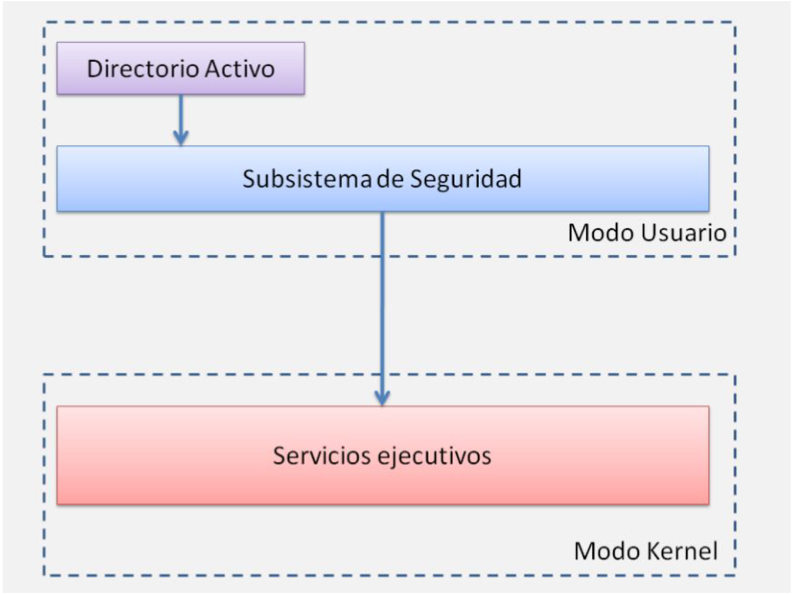
Note
Las aplicaciones que se ejecutan en este modo no tienen acceso directo al sistema operativo ni al hardware, sino que como medida de seguridad, las peticiones realizadas a estos deben pasar previamente por un subsistema de seguridad y posteriormente por la capa de servicios ejecutivos.
Arquitectura cliente – servidor¶
Active Directory también esta basado en el modelo cliente-servidor es aquel en el que existen varios clientes, los cuales realizan peticiones a un servidor.
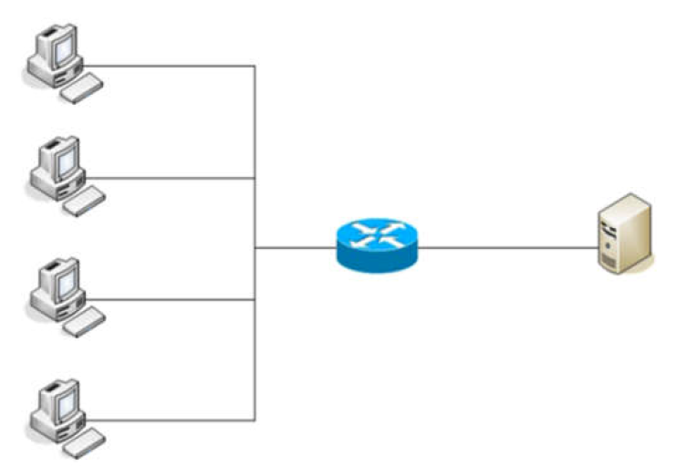
Objetos del Directorio Activo¶
El Directorio Activo es una implementación concreta del protocolo LDAP. Este protocolo trata los elementos de la red como objetos. Los tipos de objetos básicos que existen en el Directorio Activo son:
- Usuarios.
- Grupos.
- Equipos.
- Dominios.
- Impresoras.
- Unidades Organizativas.
Tip
Sin embargo los administradores de sistemas pueden crear nuevos tipos de objetos o añadir propiedades a alguna clase de los objetos modificando el esquema del Directorio Activo, para adaptar la estructura de la red a las necesidades particulares de la organización.
Dominio¶
Representa un conjunto de equipos (clientes y servidores) que comparten una política de seguridad y una base de datos común. En concreto para el Directorio Activo de Windows se trata de un conjunto de objetos de tipo equipo, usuario y otras clases de objetos que comparten una base de datos de directorio común.
Los servidores pueden ser:
-
Controladores de dominio : Contienen las cuentas de usuario y de otros datos del Directorio Activo.
- Debe haber al menos 1 por cada dominio.
-
Servidores miembros del dominio : Se utilizan para almacenamiento de archivos y otros recursos compartidos en la red. No contienen información vital como cuentas de usuarios o políticas de grupos.
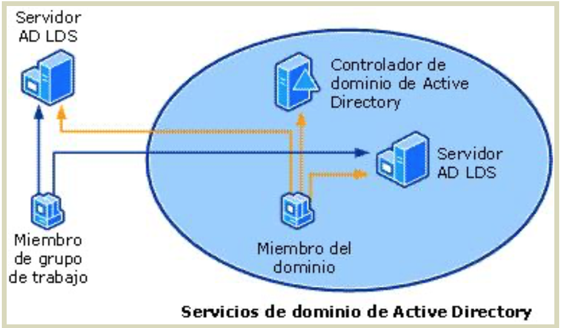
Unidad Organizativa¶
Las unidades organizativas nos ayudan a organizar los objetos de nuestro dominio (impresoras, usuarios, grupos, …).
- Es parecido a la estructura de directorios (carpetas) de un sistema operativo, por ejemplo, dentro de nuestro dominio podemos tener una unidad organizativa por cada departamento de la empresa.
En el siguiente ejemplo vemos un dominio con una unidad organizativa para usuarios de "Contabilidad", "Recursos Humanos", "Informáticos"y "Marketing".
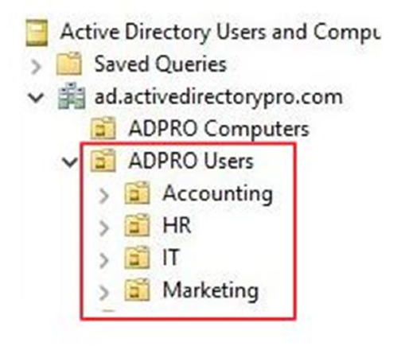
Árboles:¶
Se da en redes muy grandes donde nos interesa segmentar en subdominios, de tal forma que el tráfico o las peticiones de los usuarios al servidor de un subdominio no llegan al servidor raíz y por nos ayuda con el balanceo de carga de trabajo y ahorro en el ancho de banda de la red. No obstante la gestión sigue siendo centralizada desde el servidor raíz. Similar a DNS.
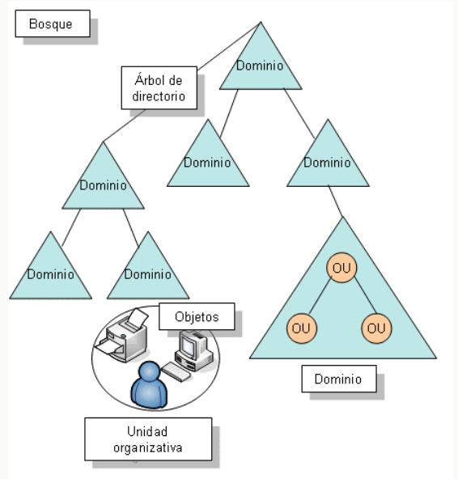
Bosques¶
Un bosque es la unión de diferentes árboles o dominios que confían entre ellos, pero son dominios totalmente diferentes (USA.miempresa.com, EUROPA.miempresa.com y SPAIN.miempresa.com).
- Si se configura una confianza entre ellos los usuarios de un dominio tendrán la posibilidad acceder a los recursos (o a ciertos recursos) de otro dominio que compartan el mismo bosque.
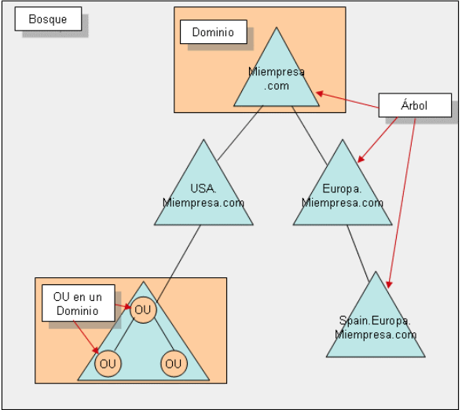
Roles (Servicios)¶
Un rol de servidor es un conjunto de servicios que permiten a un equipo realizar una función específica para varios usuarios u otros equipos de una red. Básicamente está relacionado con el cometido de dicho servidor, un servidor puede tener múltiples roles.
Ejemplos:
- Servidor DHCP.
- Servidor DNS.
- Servidor Active Directory.
- Servidor de virtualización (Hyper-V).
- Servidor Web.
- Acceso remoto.
- Servidor de impresión.
- Servidor de correo electrónico.
A su vez, un rol puede tener diferentes funcionalidades o subroles, los cuales pueden estar activados o no. Dichos "subroles" son servicios de rol.
Note
Network File System, o NFS, es un protocolo de nivel de aplicación, según el Modelo OSI. Es utilizado para sistemas de archivos distribuido en un entorno de red de computadoras de área local. Posibilita que distintos sistemas conectados a una misma red accedan a ficheros remotos como si se tratara de locales.
- Para Agregar Roles:
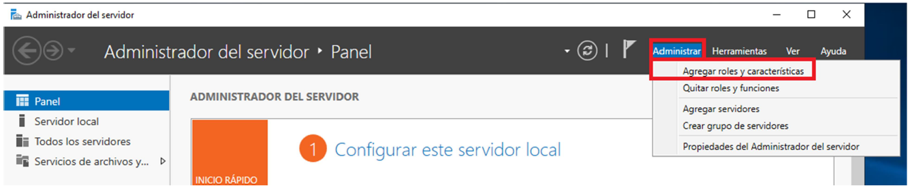
Servicios de AD en Windows Server¶
Cuando vayamos a añadir nuestro rol de Active Directory al servidor, veremos que tenemos diferentes roles de Active Directory:
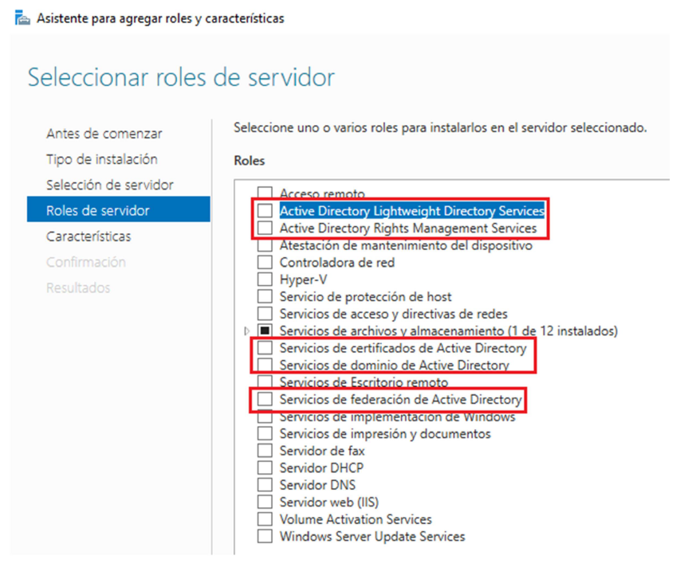
-
Active Directory Lightweight Directory Services : Se trata de un Active Directory "light", no require de un dominio para su uso, simplemente alberga opciones/características para ciertas aplicaciones que nos interese.
-
Active Directory Rights Management Services : Nos ayuda a gestionar la protección del acceso a nuestros ficheros del directorio activo. Por ejemplo si un documento se intenta abrir desde un usuario no autorizado.
-
Servicios de certificados de Active Directory : Simplemente gestiona la creación de certificados digitales. Es para entidades de certificación oficial (seguridad informática).
-
Servicios de dominio de Active Directory: Este va a ser la opción que veremos en el módulo.
-
Servicio de federación de Active Directory: Gestiona el acceso seguro desde dentro y desde fuera de tu red (Internet) a aplicaciones gestionadas en local por el servidor de Windows Active Directory. Obviamente con las credenciales de usuarios del active directory.
Base de datos y Autentificación¶
Active Directory utiliza un sistema centralizado de almacenamiento y autenticación que garantiza la seguridad y consistencia de los datos en el dominio.
Base de datos de Active Directory (NTDS.dit)¶
La base de datos de Active Directory se almacena en cada controlador de dominio en un archivo denominado NTDS.dit (Directory Information Tree). Este archivo contiene toda la información del directorio: usuarios, grupos, equipos, políticas, configuración del dominio, esquema y otros objetos.
Ubicación y estructura¶
Por defecto, el archivo NTDS.dit y sus archivos relacionados se almacenan en la carpeta %SystemRoot%\NTDS (normalmente C:\Windows\NTDS) en cada controlador de dominio.
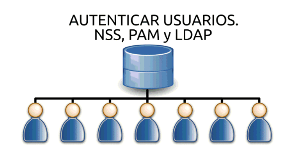
Componentes de la base de datos¶
La carpeta NTDS contiene varios archivos importantes:
- NTDS.dit: Archivo principal de base de datos que almacena todos los objetos de Active Directory usando el motor Extensible Storage Engine (ESE).
- Edb.log: Archivo de registro de transacciones actual donde se escriben primero los cambios pendientes antes de ser aplicados a la base de datos.
- EdbXXXXX.log: Archivos de registro adicionales creados cuando el archivo principal se llena (numerados secuencialmente).
- Edb.chk: Archivo de punto de control que rastrea qué transacciones del registro se han escrito en la base de datos. Es crucial para la recuperación en caso de fallos del sistema.
- Res1.log y Res2.log: Archivos de reserva que proporcionan espacio en escenarios de bajo espacio en disco.
Estructura interna de NTDS.dit¶
La base de datos está organizada en particiones lógicas (contextos de nomenclatura):
- Partición de esquema: Define las clases de objetos y atributos que pueden crearse en el directorio.
- Partición de configuración: Contiene información sobre la topología del bosque y los sitios de Active Directory.
- Partición de dominio: Almacena todos los objetos del dominio (usuarios, grupos, equipos, unidades organizativas, etc.).
- Particiones de aplicación: Particiones opcionales para datos específicos de aplicaciones.
Dentro del archivo existen tablas principales:
- Data Table: Almacena los atributos de los objetos.
- Link Table: Almacena las relaciones entre objetos.
- Security Descriptor Table: Almacena los descriptores de seguridad desde Windows Server 2003.
Replicación y disponibilidad¶
- Cada controlador de dominio mantiene una copia completa de las particiones de dominio, esquema y configuración.
- Los cambios se replican automáticamente entre controladores de dominio mediante el protocolo de replicación de Active Directory.
- La base de datos se mantiene sincronizada entre todos los controladores de dominio del dominio.
Importante
El archivo NTDS.dit está bloqueado mientras Active Directory está en ejecución. Para realizar operaciones de mantenimiento (como defragmentación), el controlador de dominio debe estar en Modo de Reparación de Servicios de Directorio (DSRM).
Autenticación con Kerberos¶
Active Directory utiliza el protocolo Kerberos v5 como método principal de autenticación para proporcionar un acceso seguro a los recursos de red.
¿Qué es Kerberos?¶
Kerberos es un protocolo de autenticación de red diseñado en el MIT (Massachusetts Institute of Technology) que permite a dos equipos en una red insegura demostrar su identidad mutuamente de manera segura. Microsoft implementó Kerberos v5 como el protocolo de autenticación predeterminado en Active Directory desde Windows 2000 Server.
Características principales¶
- Autenticación mutua: Tanto el cliente como el servidor verifican sus identidades.
- Seguridad: Utiliza criptografía simétrica y evita el envío de contraseñas en texto plano por la red.
- Single Sign-On (SSO): Una vez autenticado, el usuario puede acceder a recursos sin volver a introducir credenciales durante un período de tiempo (válido para el ticket).
- Autorización: No solo autentica, sino que también proporciona información de autorización mediante listas de control de acceso (ACLs).
Componentes del protocolo Kerberos¶
El protocolo Kerberos involucra tres entidades principales:
- Cliente: El usuario o servicio que solicita acceso a un recurso.
- Servidor de recursos: El servicio o recurso al que el cliente quiere acceder.
- Centro de distribución de claves (KDC - Key Distribution Center): En Active Directory, el KDC es parte del controlador de dominio y está formado por:
- Authentication Service (AS): Autentica a los usuarios y emite tickets de concesión de tickets (TGT - Ticket Granting Tickets).
- Ticket Granting Service (TGS): Emite tickets de servicio para acceder a recursos específicos.
Proceso de autenticación Kerberos¶
El proceso básico de autenticación Kerberos sigue estos pasos:
- Solicitud inicial (AS-REQ): El cliente envía una solicitud al KDC solicitando un TGT.
- Respuesta del KDC (AS-REP): El KDC valida las credenciales y devuelve un TGT cifrado con la clave del KDC.
- Solicitud de ticket de servicio (TGS-REQ): El cliente presenta el TGT al TGS para solicitar un ticket de servicio para un recurso específico.
- Respuesta del TGS (TGS-REP): El TGS valida el TGT y emite un ticket de servicio cifrado.
- Acceso al recurso (AP-REQ): El cliente presenta el ticket de servicio al servidor de recursos para acceder al servicio.
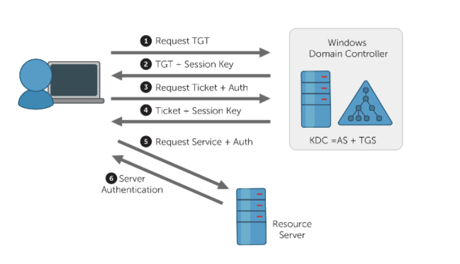
NTLM vs Kerberos en Active Directory
Aunque Kerberos es el protocolo de autenticación predeterminado en Active Directory por su mayor seguridad (autenticación mutua, tickets temporales y compatibilidad SSO), también se soporta NTLM principalmente por compatibilidad con sistemas antiguos o cuando Kerberos no está disponible. Se recomienda siempre usar Kerberos, ya que NTLM es menos seguro y solo debe emplearse como alternativa heredada.
Administración de Usuarios y Grupos¶
La administración de usuarios y grupos es una de las tareas fundamentales en Active Directory. Permite gestionar de forma centralizada quién puede acceder a los recursos de la red y con qué permisos.
Usuarios en Active Directory¶
Los usuarios del dominio deben tener una cuenta para poder acceder a los recursos del mismo tras su autenticación frente al controlador de dominio. La herramienta principal para administrar usuarios es Usuarios y equipos de Active Directory (dsa.msc), accesible desde el Panel del Administrador → Herramientas.
Características de las cuentas de usuario¶
-
Identificador único: Cada cuenta tiene un identificador de seguridad (SID) único que se asigna al crear la cuenta. Si se elimina una cuenta y se vuelve a crear con el mismo nombre, el SID será diferente y no se recuperarán los permisos originales.
-
Nombres de usuario:
-
Deben ser únicos en todo el dominio.
- Pueden contener letras (mayúsculas o minúsculas), números y caracteres alfanuméricos.
- No se aceptan:
/,|,:,;,=,<,>,*. -
Máximo 20 caracteres.
-
Configuración de contraseñas, las opciones incluyen:
-
El usuario debe cambiar la contraseña en el siguiente inicio de sesión: Para que el administrador asigne una contraseña temporal que el usuario cambie al iniciar sesión.
- El usuario no puede cambiar la contraseña: Para cuentas genéricas compartidas (ej: cuenta para escáner).
- La contraseña nunca expira: Desactiva la caducidad periódica (no recomendado en producción).
- La cuenta está deshabilitada: Bloquea el acceso sin eliminar la cuenta, preservando permisos.
Gestión de cuentas¶
En lugar de eliminar cuentas (proceso definitivo), es preferible deshabilitarlas. Esto permite:
- Bloquear el acceso temporalmente.
- Mantener los permisos y privilegios asociados.
- Habilitar la cuenta nuevamente si es necesario.
Las cuentas se pueden configurar con propiedades detalladas: información general, restricciones de contraseña, horarios de inicio de sesión, equipos permitidos, perfiles y pertenencia a grupos.
Grupos en Active Directory¶
Los grupos son contenedores que permiten definir conjuntos de usuarios y asignar permisos basándose en la pertenencia al grupo, en lugar de hacerlo usuario por usuario. Esto facilita la administración y reduce errores.
Tipos de grupos¶
Existen dos tipos principales:
- Grupos de seguridad: Permiten definir permisos para recursos del dominio mediante listas de control de acceso (ACLs). Son los más utilizados en la administración de red.
- Grupos de distribución: No poseen características de seguridad, únicamente son listados de usuarios para mensajería.
Ámbitos de grupos¶
Dentro de los grupos de seguridad existen tres ámbitos:
- Grupo Universal:
- Permisos se extienden a diversos dominios.
- Puede contener usuarios o grupos de diferentes dominios.
-
Útil en grandes empresas con bosques de dominios.
-
Grupo Global:
- Puede permitir acceso a recursos de cualquier dominio del árbol.
- Todos los miembros deben pertenecer al mismo dominio.
-
Ideal para redes de dominio único o cuando se planifica expandir.
-
Grupo Local del Dominio:
- Miembros pueden provenir de otros dominios.
- Solo puede tener acceso a recursos dentro de su dominio.
- Para recursos específicos dentro de un único dominio.
Mejores prácticas
- Usar el ámbito más restringido que cumpla con los requisitos.
- En dominios únicos, los grupos globales suelen ser suficientes.
- Los grupos universales generan más tráfico de replicación en el catálogo global.
Grupos predefinidos¶
Active Directory crea automáticamente grupos predefinidos con permisos específicos:
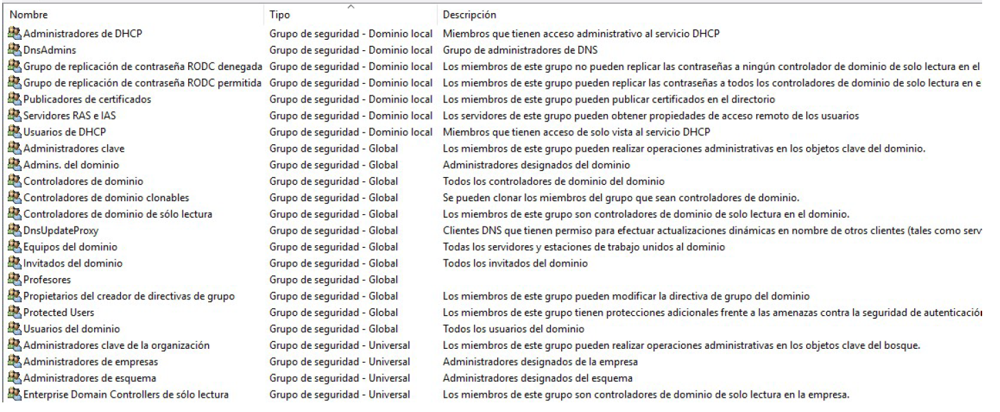
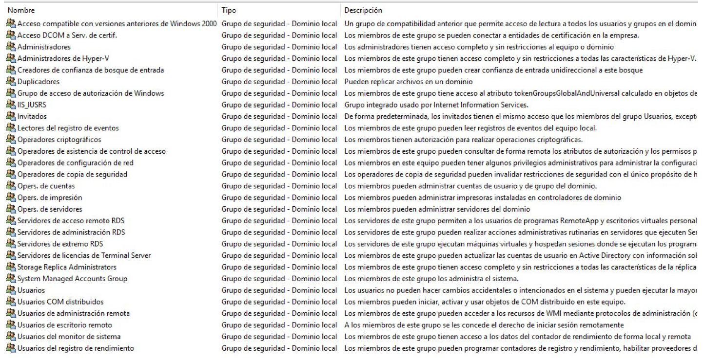
Algunos grupos destacados:
- Usuarios del dominio: Contiene todas las cuentas de usuarios del dominio (global).
- Administradores del dominio: Permite administración completa del dominio (global).
- Administradores de empresa: Administración en todos los dominios del bosque (universal).
- Administradores: Administración en el controlador de dominio (local).
- Operadores de cuenta: Crear, editar y eliminar cuentas y grupos (local).
- Usuarios: Permisos limitados para uso general (local).
Estos grupos predefinidos ahorran tiempo considerable en tareas administrativas comunes.
Gestión de grupos¶
Para crear y gestionar grupos se utiliza la misma herramienta que para usuarios: Usuarios y equipos de Active Directory. Los usuarios se pueden añadir a grupos de dos formas principales:
- Desde el usuario: Seleccionar el usuario → "Agregar a un grupo".
- Desde el grupo: Abrir propiedades del grupo → pestaña "Miembros" → "Agregar".
Práctica detallada
Para ver los pasos detallados de creación y configuración de usuarios y grupos, consulta la PR402: Administración de Usuarios y Grupos en Active Directory.
Gestión de recursos compartidos en Active Directory¶
La gestión de recursos compartidos permite que usuarios y equipos del dominio accedan de forma centralizada a carpetas, archivos y otros recursos de red. Incluye la configuración de carpetas personales, perfiles de usuario, permisos NTFS y compartidos, y la aplicación de directivas de grupo para controlar el entorno de trabajo.
Compartir recursos en el dominio¶
Compartir recursos se refiere a exponer carpetas o archivos (en disco local, NAS o en la nube) para que varios clientes o usuarios accedan a los mismos ficheros de forma centralizada. Entre las ventajas destacan:
- Ahorro de espacio: No es necesario copiar el recurso localmente en cada equipo.
- Gestión centralizada: Las políticas de seguridad se aplican desde el servidor.
Carpetas personales¶
Una opción muy utilizada es asignar a cada usuario una carpeta personal en red a la que únicamente él tiene acceso. Se configura en la ficha Perfil de las propiedades de la cuenta de usuario en Active Directory.

Ejemplo
Se crea una carpeta compartida en el servidor (ej: C:\Empresa_Users) con subcarpetas para cada usuario. En la pestaña Perfil de cada usuario se asigna la ruta de red, por ejemplo: \\servidor\Empresa_Users\%username%. La variable %username% se sustituye automáticamente por el identificador del usuario.
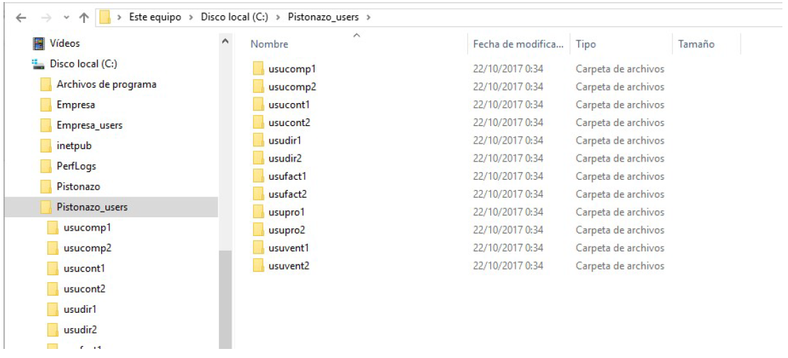
Importante
La carpeta del usuario debe ser una carpeta compartida con permisos de escritura para el usuario o el grupo al que pertenece. Se recomienda asignar permisos a grupos en lugar de usuarios individuales.
Perfiles de usuario¶
Los perfiles son ficheros de configuración del entorno de trabajo que se aplican a todos los equipos desde los que el usuario inicia sesión. Existen tres tipos:
- Perfiles locales: Se almacenan en cada equipo y configuran el entorno de ese equipo.
- Perfiles móviles: El usuario configura su entorno en un equipo y, al iniciar sesión en otro, la configuración se importa y aplica.
- Perfiles obligatorios: El administrador define la configuración; los usuarios pueden modificarla durante la sesión, pero al cerrar se restaura la configuración original.
Los perfiles móviles se almacenan en una carpeta accesible por los clientes (por ejemplo, en el controlador de dominio o en la carpeta personal del usuario). En la pestaña Perfil del usuario se indica la ruta, por ejemplo: \\servidor\Empresa_Users$\%username%\perfil.
Carga en red
Los perfiles móviles pueden sobrecargar la red: al iniciar sesión se copia el perfil del servidor al cliente, y al cerrar sesión se realiza la operación inversa. Conviene limitar su uso a usuarios que realmente lo necesiten.
Permisos de recursos compartidos y NTFS¶
Windows utiliza dos niveles de permisos para los recursos compartidos:
- Permisos de carpetas compartidas: Se aplican cuando el usuario accede al recurso por la red.
- Permisos NTFS: Se aplican sobre volúmenes con formato NTFS y permiten un control más detallado a nivel de archivo y carpeta.
Cuando un usuario accede a una carpeta desde otro equipo a través de la red, Windows evalúa dos tipos de permisos de manera consecutiva: primero verifica los permisos de recurso compartido definidos al compartir la carpeta, y después analiza los permisos NTFS configurados sobre el sistema de archivos. El usuario solo podrá realizar las acciones que estén permitidas por ambos.
Permiso más restrictivo prevalece
Aunque los permisos compartidos o NTFS otorguen acceso total, si el otro lo restringe, siempre se aplica el permiso más restrictivo.
- Por ejemplo: si el permiso compartido concede “Control total” pero los permisos NTFS solo permiten “Lectura”, el usuario únicamente tendrá acceso de lectura por la red; nunca podrá sobrepasar la restricción más estricta de las dos.
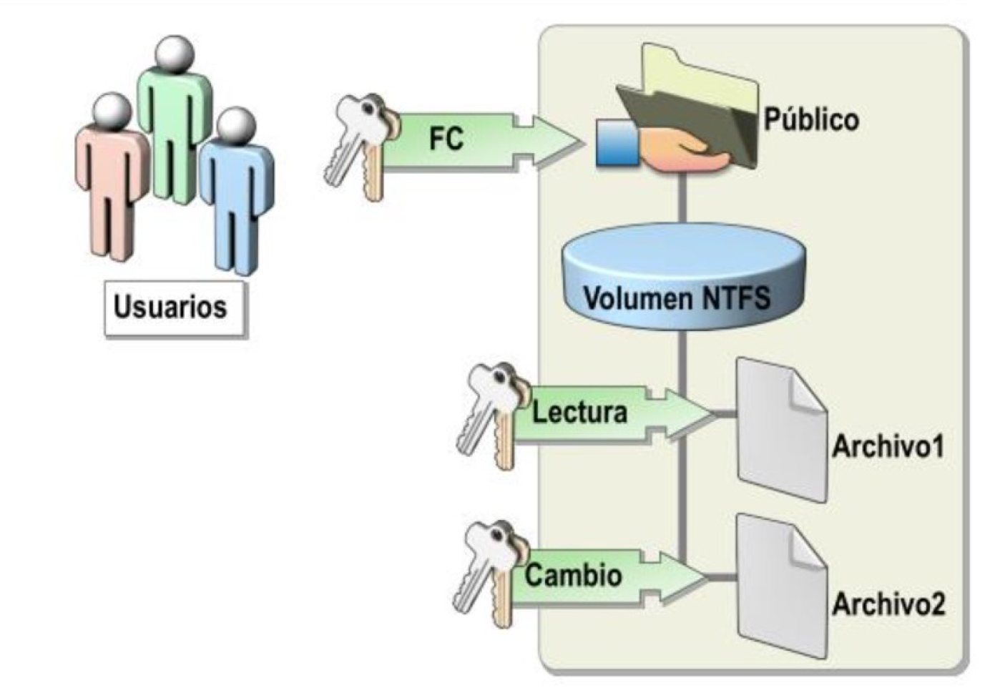
Permisos de recursos compartidos¶
Los permisos de recursos compartidos pueden ser de tres tipos:
- Control total: Lectura, escritura, modificación y gestión de permisos.
- Cambiar: Crear, modificar y borrar archivos y carpetas.
- Lectura: Solo lectura y ejecución de archivos.
Prioridad de Denegar
La opción Denegar tiene prioridad sobre cualquier permiso Permitir asignado al recurso compartido.
Para compartir una carpeta, se puede usar Compartir con... → Usuarios específicos en el menú contextual, o Propiedades → pestaña Compartir → Uso compartido avanzado para un control más detallado. Se recomienda asignar permisos a grupos y evitar el uso del grupo Todos.
Permisos NTFS¶
Los permisos NTFS son más granulares y admiten herencia. Los permisos estándar incluyen: Control total, Cambiar, Leer y ejecutar, Mostrar contenido de carpeta, Leer y Escribir. Cada uno agrupa permisos especiales más concretos.
Permisos acumulativos y Denegar
Los permisos NTFS son acumulativos (usuario + grupos). Si hay conflicto entre Permitir y Denegar, Denegar prevalece cuando está definido explícitamente.
Herencia de permisos¶
Al crear un archivo o carpeta en NTFS, el objeto hereda los permisos de su carpeta contenedora. La herencia puede deshabilitarse desde Propiedades → Seguridad → Opciones avanzadas → Deshabilitar herencia, eligiendo entre convertir los permisos heredados en explícitos o quitarlos.
Directivas de grupo (GPO)¶
Las directivas de grupo (Group Policy) son configuraciones creadas por el administrador que se aplican a objetos del dominio. Permiten controlar el entorno de trabajo de usuarios y equipos, políticas de contraseñas, permisos y distribución de software.
Orden de aplicación¶
Cuando existen varias GPO, el orden de aplicación es (de menor a mayor prioridad en caso de conflicto):
- Directiva de grupo local
- Directiva de grupo de sitio
- Directiva de grupo de dominio
- Directiva de grupo de unidad organizativa
Prioridad entre varias GPO
Si varias GPO establecen valores distintos para la misma configuración, se aplica la GPO con mayor prioridad según el orden: primero la local, luego la de sitio, después la de dominio y finalmente la de unidad organizativa.
- Es decir, la GPO más específica (la de más abajo en la lista) prevalece frente a las demás en caso de conflicto.
GPO predeterminadas¶
Al crear un dominio se generan dos GPO:
- Default Domain Policy: Vinculada al dominio.
- Default Domain Controllers Policy: Vinculada a la UO Domain Controllers.
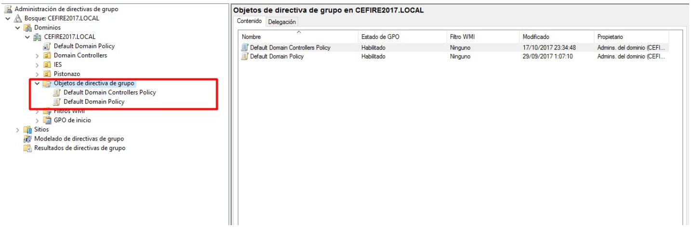
Configuraciones habituales¶
Entre las configuraciones más útiles mediante GPO destacan:
- Directiva de bloqueo de cuenta: Bloquear la cuenta tras X intentos fallidos de contraseña.
- Directivas de contraseñas: Longitud mínima, complejidad, historial y vigencia máxima.
- Permisos de usuario: Quién puede apagar el equipo, acceder a la consola, etc.
- Redirección de carpetas: Enviar Documentos, Escritorio, etc. a ubicaciones de red.
- Apariencia y restricciones: Fondo de escritorio corporativo, bloqueo de CMD, etc.
Aplicar cambios de GPO de inmediato
Los cambios en las Directivas de Grupo (GPO) se aplican automáticamente cada cierto tiempo (por defecto, cada 5 minutos en los controladores de dominio y cada 90 minutos en el resto de los equipos, aunque este intervalo puede variar según la configuración).
- Si necesitas que los cambios surtan efecto al instante, puedes forzar la actualización ejecutando el comando
gpupdateen el cliente o servidor. - Además, para consultar exactamente qué políticas están en vigor en un equipo o usuario determinado, puedes usar la herramienta gráfica rsop.msc (Resultant Set of Policy). Esta utilidad muestra el conjunto de directivas resultantes tras combinar todas las GPO aplicadas, teniendo en cuenta el orden de aplicación, la herencia y los posibles conflictos entre ellas. Así, te permite comprobar y diagnosticar qué configuraciones están afectando realmente al equipo o usuario.
Actividades¶
- PR401. Práctica: Configuración de Active Directory en AWS Academy. (RA.3 // CE3a, CE3b, CE3c, CE3d, CE3e, CE3f, CE3g y CE3h // 1-10p).
En esta práctica aprenderás a configurar Active Directory Domain Services (AD DS) en una instancia de Windows Server en AWS Academy y unir clientes al dominio. El objetivo es familiarizarte con los servicios de directorio propietarios, la configuración de dominios y la administración centralizada de usuarios y equipos.
Entorno educativo
Esta práctica utiliza AWS Academy Learner Lab, una plataforma educativa que proporciona acceso a recursos de AWS con créditos limitados para estudiantes. Los recursos creados se eliminan automáticamente al finalizar el laboratorio.
Resumen de tareas
- Accede a AWS Academy a través de Canvas e inicia el laboratorio AWS Academy Learner Lab.
- Crea instancias de Windows Server 2025 en AWS EC2 (servidor y cliente).
- Configura DHCP en AWS para soportar el dominio de Active Directory.
- Configura grupos de seguridad para permitir los servicios necesarios de Active Directory.
- Instala Active Directory Domain Services y promueve el servidor a controlador de dominio.
- Crea usuarios, grupos y unidades organizativas en el dominio.
- Une un cliente al dominio y verifica la configuración.
- Configura acceso remoto RDP para usuarios del dominio.
- Documenta el proceso, mostrando los conceptos de servicios de directorio, pasos realizados, comandos utilizados y capturas de pantalla de la funcionalidad.
Criterios de evaluación
- Configuración correcta de AWS Academy y acceso al laboratorio.
- Creación correcta de las instancias Windows Server 2025 en EC2.
- Configuración adecuada de DHCP en AWS para el dominio.
- Configuración correcta de grupos de seguridad para permitir servicios de Active Directory.
- Instalación y promoción exitosa a controlador de dominio.
- Unión exitosa del cliente al dominio.
- Configuración correcta del acceso remoto para usuarios del dominio.
- Explicación clara de los conceptos de servicios de directorio y Active Directory.
- Documentación completa de la arquitectura y pasos seguidos con evidencias.
Consulta el enunciado completo y detallado aquí:
Práctica: Configuración de Active Directory en AWS Academy
Entorno educativo: AWS Academy Learner Lab
AWS Academy Learner Lab proporciona un entorno controlado con créditos educativos limitados para que los estudiantes experimenten con servicios de AWS. El laboratorio tiene un tiempo limitado (normalmente 4 horas) y los recursos se eliminan automáticamente al finalizar. Es importante detener las instancias cuando no se usen para no consumir créditos innecesariamente. Los conceptos aprendidos son directamente aplicables a escenarios reales con AWS en producción.
- PR402. Práctica: Administración de Usuarios y Grupos en Active Directory. (RA.3 // CE3d, CE3e y CE3h // OPCIONAL – NO EVALUABLE)
En esta práctica aprenderás a crear, configurar y gestionar usuarios y grupos en Active Directory Domain Services. El objetivo es familiarizarte con la administración de objetos del directorio, configuraciones de cuentas y restricciones de acceso.
Entorno educativo
Esta práctica requiere tener un dominio de Active Directory configurado. Si no lo tienes, completa primero la PR401.
Resumen de tareas
- Crea usuarios del dominio con configuraciones de contraseña apropiadas.
- Crea grupos de seguridad con diferentes ámbitos (global, local de dominio, universal).
- Añade usuarios a grupos y gestiona pertenencias.
- Deshabilita y habilita cuentas de usuario y verifica el comportamiento.
- Configura restricciones de inicio de sesión (equipos permitidos y horarios).
- Verifica las restricciones funcionando correctamente.
- Documenta el proceso, mostrando los conceptos de usuarios y grupos, pasos realizados y capturas de pantalla de la funcionalidad.
Criterios de evaluación
- Creación correcta de usuarios con configuraciones apropiadas.
- Creación correcta de grupos con ámbitos adecuados.
- Gestión correcta de pertenencias de usuarios a grupos.
- Configuración correcta de restricciones de inicio de sesión.
- Verificación exitosa de las restricciones funcionando.
- Explicación clara de los conceptos de usuarios, grupos y sus tipos.
- Análisis correcto de las restricciones y su funcionamiento.
- Documentación completa de la arquitectura y pasos seguidos con evidencias.
Consulta el enunciado completo y detallado aquí:
Práctica: Administración de Usuarios y Grupos en Active Directory
- PR403. Práctica: Gestión de Grupos y Unidades Organizativas en Active Directory. (RA.3 // CE3d, CE3e, CE3f y CE3h // 1-10p).
En esta práctica aprenderás a gestionar grupos, unidades organizativas y usuarios en Active Directory Domain Services para una organización empresarial. El objetivo es trabajar con estructuras organizativas más complejas, creación masiva de usuarios y organización jerárquica del directorio.
Entorno educativo
Esta práctica requiere tener un dominio de Active Directory configurado y usuarios de prueba creados. Si no los tienes, completa primero la PR401 y PR402.
Resumen de tareas
- Crea unidades organizativas para estructurar el dominio por departamentos.
- Crea usuarios del dominio para responsables de departamento con diferentes roles.
- Crea y gestiona grupos de seguridad para cada departamento.
- Organiza usuarios y grupos en unidades organizativas apropiadas.
- Crea usuarios masivamente desde CSV usando PowerShell (método alternativo).
- Elimina usuarios de prueba de forma segura.
- Documenta la estructura organizativa del dominio.
Criterios de evaluación
- Creación correcta de unidades organizativas con estructura jerárquica.
- Creación correcta de usuarios de departamento con propiedades apropiadas.
- Creación correcta de grupos de seguridad por departamento.
- Organización correcta de usuarios y grupos en unidades organizativas.
- Eliminación correcta de usuarios de prueba.
- Uso correcto de PowerShell para creación masiva desde CSV (opcional).
- Explicación clara de la estructura organizativa y su justificación.
- Documentación completa de la arquitectura y pasos seguidos con evidencias.
Consulta el enunciado completo y detallado aquí:
Práctica: Gestión de Grupos y Unidades Organizativas en Active Directory
- PR404. Práctica: Gestión de recursos compartidos en Active Directory. (RA.3 // CE3e, CE3f y CE3h // 1-10p).
En esta práctica aprenderás a gestionar recursos compartidos en un dominio de Active Directory: crear estructuras de carpetas, configurar permisos NTFS y compartidos, asignar carpetas personales a usuarios y aplicar directivas de grupo (GPO) para políticas de contraseñas y bloqueo de cuenta.
Entorno educativo
Esta práctica requiere tener un dominio de Active Directory configurado, usuarios y grupos creados. Completa primero la PR401, PR402 y PR403.
Resumen de tareas
- Crea la estructura de carpetas en disco (carpetas personales y datos por departamento).
- Comparte las carpetas y configura permisos de recursos compartidos por grupo.
- Configura permisos NTFS con diferentes niveles según el rol (Administradores, trabajadores, etc.).
- Asigna carpetas personales a usuarios (unidad X:) y carpeta de empresa (unidad Y:) al iniciar sesión.
- Configura GPO de contraseñas: vigencia 90 días, historial 5 contraseñas, longitud mínima 4 caracteres.
- Configura GPO de bloqueo: 4 intentos fallidos bloquean la cuenta; contador se restablece tras 10 minutos.
- Verifica el acceso a los recursos según los grupos de cada usuario.
- Documenta el proceso con capturas de pantalla.
Criterios de evaluación
- Creación correcta de la estructura de carpetas.
- Configuración correcta de permisos compartidos y NTFS.
- Asignación correcta de carpetas personales a usuarios.
- Configuración correcta de las GPO de contraseñas y bloqueo.
- Verificación exitosa del acceso a los recursos.
- Explicación clara de permisos compartidos vs NTFS.
- Documentación completa con evidencias.
Consulta el enunciado completo y detallado aquí:
Práctica: Gestión de recursos compartidos en Active Directory
- RG405. (RA.3 // CE3a, CE3b, CE3c, CE3d, CE3e, CE3f, CE3g y CE3h // 30p). Trabajo individual para configurar desde cero la infraestructura de Active Directory de una empresa ficticia (TechCorp Solutions) con 20 usuarios, integrando todos los conceptos aprendidos durante la unidad.
Integración de Sistemas Operativos¶
La integración de sistemas operativos permite que equipos con diferentes sistemas (Windows, GNU/Linux, macOS) compartan recursos en red —archivos, carpetas e impresoras— mediante protocolos y servicios estándar.
Propuesta didáctica¶
En esta unidad vamos a trabajar el RA6 de ASO:
RA6. Integra sistemas operativos libres y propietarios, justificando y garantizando su interoperabilidad.
Criterios de evaluación (RA6)¶
- CE6a: Se ha identificado la necesidad de compartir recursos en red entre diferentes sistemas operativos.
- CE6b: Se han establecido niveles de seguridad para controlar el acceso del cliente a los recursos compartidos en red.
- CE6c: Se ha comprobado la conectividad de la red en un escenario heterogéneo.
- CE6d: Se ha descrito la funcionalidad de los servicios que permiten compartir recursos en red.
- CE6e: Se han instalado y configurado servicios para compartir recursos en red.
- CE6f: Se ha comprobado el funcionamiento de los servicios instalados.
- CE6g: Se ha trabajado en grupo para acceder a sistemas de archivos e impresoras en red desde equipos con diferentes sistemas operativos.
- CE6h: Se ha documentado la configuración de los servicios instalados.
Contenidos¶
Bloque 1 — Escenarios heterogéneos y protocolos (Sesión 1)
- Escenarios heterogéneos: definición y necesidad.
- Protocolos SMB/CIFS y NFS.
- Servicios Samba y NFS: características y diferencias.
- Tabla resumen de protocolos y servicios.
Bloque 2 — NFS (Sesión 2)
- Network File System: características y versiones.
- Arquitectura cliente-servidor y VFS.
- Ventajas y desventajas de NFS.
- Instalación y configuración en servidor y cliente.
Bloque 3 — Samba y Docker Compose (Sesión 3–4)
- Samba: implementación libre de SMB para UNIX/Linux.
- Samba Domain Controller (Samba DC): introducción.
- Docker Compose: definición de servicios multi-contenedor.
- Samba en contenedor con Docker Compose.
Actividades iniciales
- ¿Qué es un escenario heterogéneo y por qué es necesario compartir recursos entre sistemas?
- ¿Qué diferencia existe entre SMB/CIFS y NFS?
- ¿Qué es Samba y para qué se utiliza?
- ¿Qué ventajas ofrece NFS frente a compartir archivos por otros medios?
- ¿Qué es Docker Compose y cómo facilita el despliegue de servicios?
Programación de Aula (4 sesiones)¶
| Sesión | Contenidos | Actividades | Criterios |
|---|---|---|---|
| 1 | Teoría: Escenarios heterogéneos. Protocolos SMB/CIFS y NFS. Servicios Samba y NFS. | Explicación teórica | CE6a, CE6d |
| 2 | Práctica: Instalación y configuración de NFS en servidor y cliente. | PR601 | CE6e, CE6f, CE6h |
| 3 | Práctica: Samba con Docker Compose. Acceso desde Windows y Linux. | PR602 | CE6b, CE6e, CE6f, CE6g |
| 4 | Reto: Samba y NFS en AWS con clientes de verificación. | RG606 | CE6c, CE6g, CE6h |
Introducción: Escenarios heterogéneos¶
Un escenario heterogéneo es aquel en el que conviven en una red equipos con distintas arquitecturas y sistemas operativos (Windows, GNU/Linux, macOS). El intercambio de datos solo es posible si ambos extremos de la comunicación entienden el mismo protocolo.

Protocolos para redes heterogéneas¶
Cuando hablamos de compartir archivos y carpetas en red, nos referimos fundamentalmente al uso de sistemas de archivos en red. Un sistema de archivos es un conjunto de normas y procedimientos para almacenar y organizar la información en los dispositivos de almacenamiento, utilizando para ello protocolos y servicios especializados.
Los protocolos más utilizados para compartir recursos entre sistemas diferentes son:
- SMB/CIFS (Server Message Block / Common Internet File System): Permite compartir archivos, impresoras y otros dispositivos entre equipos Windows, GNU/Linux y macOS. Desarrollado originalmente por IBM; Microsoft lo adoptó y amplió (CIFS desde 1998).
- NFS (Network File System): Protocolo de nivel de aplicación desarrollado por Sun Microsystems en 1985. Utilizado para sistemas de archivos distribuidos en redes de área local. Compatible con UNIX, GNU/Linux y macOS; Windows tiene soporte nativo desde versiones recientes.
Efemerides
El protocolo SMB cambió de nombre en 1998 y pasó a llamarse Common Internet File System (CIFS). A día de hoy, este protocolo es el que todavía se utiliza en los sistemas Windows para compartir archivos.
Sistemas de archivos compartidos en red¶
La siguiente tabla resume los principales sistemas y protocolos que permiten compartir archivos y recursos en red. Cada uno de ellos está diseñado para facilitar la interoperabilidad entre diferentes sistemas operativos, haciendo posible el trabajo en entornos donde conviven equipos con plataformas diversas como Linux, Windows o macOS.
| Sistema | Descripción |
|---|---|
| NFS | Sistema de archivos de red distribuido. Incluido por defecto en UNIX y la mayoría de distribuciones Linux. |
| SMB | Protocolo que permite compartir archivos, impresoras y dispositivos entre equipos Microsoft Windows. |
| CIFS | Versión ampliada de SMB por Microsoft. Es el protocolo actual en Windows para compartir recursos. |
| Samba | Implementación libre de SMB con extensiones de Microsoft. Funciona en GNU/Linux y UNIX. |
| AFP | Protocolo de Apple para servicios de archivos en macOS. |
Otros protocolos
Apple Filing Protocol (AFP) forma parte de Apple File Service y ofrece servicios de archivos compartidos para macOS en equipos Macintosh.
Servicios complementarios¶
Para una configuración completa de recursos compartidos en redes heterogéneas suelen utilizarse:
- LDAP: Base de datos que almacena la información de usuarios.
- Kerberos: Autenticación segura de usuarios.
- DNS: Resolución de nombres de dominio.
- NTP: Sincronización de reloj entre equipos.
Samba¶
Samba es una implementación libre del protocolo SMB/CIFS de Microsoft para sistemas tipo UNIX. Permite que equipos con GNU/Linux, macOS o Unix actúen como servidores o clientes en redes Windows.
Importancia de Samba
Samba se ha convertido en un estándar en redes donde conviven sistemas GNU/Linux y Windows, siendo uno de los logros más reconocidos del software libre.
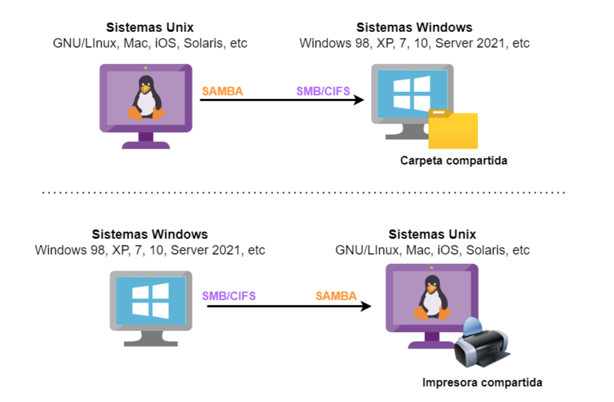
Samba Domain Controller (Samba DC)¶
Samba puede actuar como controlador de dominio (DC) compatible con Active Directory desde la versión 4.0 (2012). Opera en el nivel funcional de Windows Server 2008 R2, suficiente para gestionar redes con Windows 10/11.
Componentes de Samba DC
- LDAP: Back-end de Active Directory.
- Kerberos: Autenticación segura (MIT Kerberos).
- Samba: Protocolo SMB/CIFS.
Los servicios de directorio almacenan y administran la información de los elementos de una red (usuarios, equipos, recursos).
Recordatorio: conceptos de servicios de directorio
Recuerda que en el tema de servicios de directorio ya se analizaron los conceptos fundamentales que se aplican aquí:
directorio, dominio, objeto, unidad organizativa, grupo, controlador de dominio, árbol y bosque.
Docker Compose y Samba¶
Docker Compose permite definir y ejecutar aplicaciones multi-contenedor mediante un archivo YAML. Sustituye los largos comandos docker run por una configuración declarativa en compose.yaml o docker-compose.yml.
Flujo de trabajo
Contenedores → docker run → docker compose (archivo YAML)
Desde Docker Compose V2, el comando es docker compose (con espacio), no docker-compose. La herramienta se incluye con Docker Desktop y en instalaciones modernas de Docker Engine.
Ventajas de Docker Compose¶
- Definición declarativa de servicios en YAML.
- Menos argumentos que
docker run. - Gestión sencilla de volúmenes y redes.
- Reproducibilidad del entorno.
NFS (Network File System)¶

¿Qué es NFS?
NFS es un protocolo de nivel de aplicación que también da nombre al servicio que lo implementa. No es un sistema de archivos en sí, sino el protocolo que permite compartir datos entre equipos heterogéneos. Fue creado por Sun Microsystems en 1985 y está implementado sobre XDR (capa de presentación) y ONC RPC (capa de sesión).
Versiones de NFS
- NFSv2 (1985): Ya no soportado en Ubuntu y Red Hat.
- NFSv3 (1995): Ampliamente utilizado.
- NFSv4 (2003): Desarrollado por IETF.
- NFSv4.1 (2010), NFSv4.2 (2016): Mejoras posteriores.
Características generales¶
- Sistema de archivos distribuido en redes de área local.
- Permite acceder a ficheros remotos como si fueran locales.
- Centraliza el almacenamiento de la red.
- Soporte nativo en Linux, macOS y versiones recientes de Windows.
NFS en Windows
Para usar NFS en Windows se requiere Windows 8 Enterprise o superior, o software de terceros.
Arquitectura cliente-servidor¶
NFS se basa en la arquitectura cliente-servidor. El VFS (Virtual File System) es una capa de abstracción que permite a las aplicaciones acceder a distintos tipos de sistemas de archivos de forma uniforme.
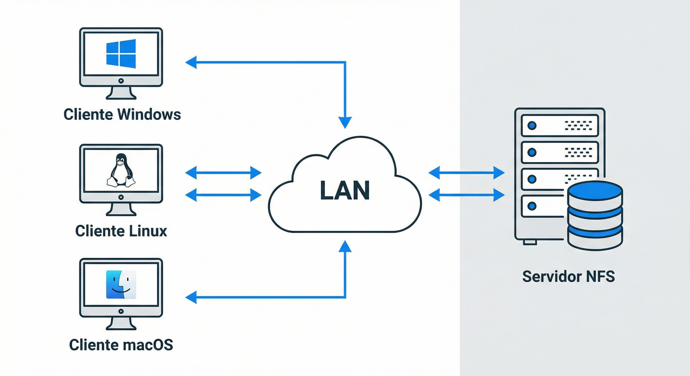
Ventajas y desventajas de NFS¶
Ventajas:
-
Centralización de recursos: evita duplicidad de información.
-
Integridad de datos: escrituras finalizadas antes de otras modificaciones.
- Perfiles de usuario centralizados (incluyendo
/home). - Compartir dispositivos externos (USB, discos).
- Control de acceso con ACLs o Kerberos.
Desventajas:
-
No soporta failover nativo.
-
Sin balanceo de carga (diseñado para un solo servidor).
- Carencia en control de permisos: usa UID/GID del servidor (se suele combinar con LDAP).
Actividades¶
- PR601. Práctica: Samba con Docker Compose. (RA.6 // CE6b, CE6e, CE6f, CE6g y CE6h // 1-10p).
Despliegue de un servidor Samba en contenedor usando Docker Compose. Acceso a la carpeta compartida desde clientes Windows y Linux. Configuración de permisos y verificación del funcionamiento.
Consulta el enunciado completo aquí:
- PR602. Práctica: Instalación y configuración de NFS en contenedor. (RA.6 // CE6d, CE6e, CE6f y CE6h // 1-10p).
Instalación y configuración de NFS en un contenedor Ubuntu Server y acceso desde un cliente (contenedor Ubuntu o Windows). Creación de carpetas compartidas, configuración de /etc/exports, montaje en cliente y verificación del acceso.
Consulta el enunciado completo aquí:
- RG603. Reto Grupal: Recursos compartidos Samba y NFS en AWS. (RA.6 // CE6a, CE6b, CE6c, CE6d, CE6e, CE6f, CE6g y CE6h // 30p). Trabajo en grupos de 2-3 personas para desplegar en AWS un escenario con servidor Samba (Docker Compose) y servidor NFS, con clientes Linux y Windows para verificar el acceso a ambos recursos compartidos.
Procesos del Sistema¶
En esta unidad se trabaja la administración de procesos: qué son, cómo los planifica el sistema operativo, la relación con los hilos, y cómo listar, priorizar o finalizar procesos desde Shell y PowerShell, así como el arranque del sistema y la administración de servicios.
Propuesta didáctica¶
En esta unidad vamos a trabajar el RA2 de ASO:
RA2. Administra procesos del sistema describiéndolos y aplicando criterios de seguridad y eficiencia.
Criterios de evaluación (RA2)¶
- CE2a: Se han descrito los procesos del sistema, sus estados y la función del planificador.
- CE2b: Se han diferenciado procesos e hilos y los mecanismos de sincronización.
- CE2c: Se han gestionado procesos desde el Shell (listar, prioridad, primer/segundo plano, finalizar).
- CE2d: Se han gestionado procesos desde PowerShell.
- CE2e: Se ha descrito el arranque del sistema y el papel de los servicios (systemd).
- CE2f: Se han administrado servicios con systemctl (iniciar, detener, habilitar, deshabilitar, estado).
- CE2g: Se ha desarrollado una herramienta de gestión del sistema (script con interfaz) y se ha documentado su uso.
Contenidos¶
Bloque 1 — Planificador y procesos (Sesión 1)
Tipos y estados de procesos. BCP. Multiprogramación. Algoritmos de planificación (FIFO, SJF, SRTF, prioridades, Round Robin).
Bloque 2 — Hilos y sincronización (Sesión 1–2)
Definición de hilo. Multihilo. Señales, mensajes, exclusión mutua. Herramientas gráficas (monitor del sistema, monitor de recursos).
Bloque 3 — Gestión de procesos en Shell (Sesión 2)
Comandos ps, pstree, top. Procesos en primer y segundo plano. jobs, fg, bg. Prioridad con renice. Finalizar procesos con kill.
Bloque 4 — Gestión de procesos en PowerShell (Sesión 2–3)
Get-Process, Stop-Process, Start-Process. Filtros y propiedades. Procesos en remoto.
Bloque 5 — Arranque del sistema y servicios (Sesión 3)
Secuencia de arranque (BIOS, bootloader, kernel, init). GRUB. Windows BCD. Daemons y systemd.
Bloque 6 — Administración de servicios (Sesión 3–4)
systemctl start/stop/restart, enable/disable, status. Unidades, destinos, enmascarar.
Actividades iniciales
- ¿Qué es un proceso y qué información guarda el sistema para cada uno?
- ¿Qué diferencia hay entre proceso en primer plano y en segundo plano?
- ¿Qué es un hilo y por qué puede interesar el multihilo?
- Nombra tres comandos para ver procesos en Linux.
- ¿Qué es un daemon o servicio y cuándo se inicia?
Programación de Aula (4 sesiones)¶
| Sesión | Contenidos | Actividades | Criterios |
|---|---|---|---|
| 1 | Planificador, estados, algoritmos. Hilos y sincronización. | Teoría y ejemplos de planificación | CE2a, CE2b |
| 2 | Gestión de procesos en Shell y PowerShell. | Prácticas en terminal | CE2c, CE2d |
| 3 | Arranque del sistema. Systemd y servicios. | Comandos systemctl, estados | CE2e, CE2f |
| 4 | Reto: Gestor del sistema con Python y tkinter. | Reto Procesos | CE2g |
1. Planificador: procesos, tipos, estados y estructura¶
Un proceso es una instancia de un programa en ejecución. Cada vez que se lanza un programa se crea un proceso; si se lanza el mismo programa dos veces, hay dos procesos distintos.
Cuando el usuario o una aplicación pide la ejecución de un programa, el sistema operativo debe proveer los recursos necesarios: espacio en memoria para instrucciones y datos, y control de ficheros y dispositivos de E/S.
Warning
La CPU ejecuta un solo proceso en cada instante. Para optimizar el rendimiento se usan técnicas como la multiprogramación y el multihilado.
La multiprogramación es una técnica de multiplexación que permite la ejecución "simultánea" de múltiples procesos en un único procesador: en realidad hay un único proceso ejecutándose en el procesador a la vez, pero se produce una ilusión de paralelismo.
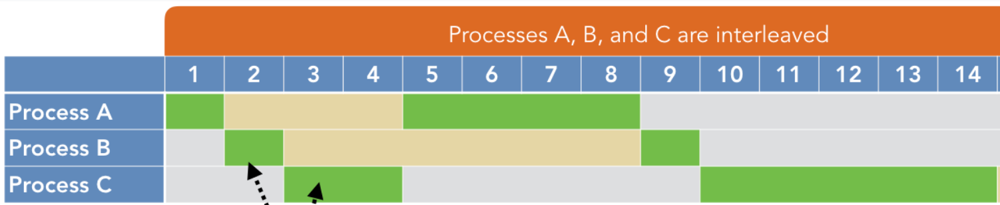
Estructura¶
Los procesos se estructuran de forma jerárquica. El sistema operativo lanza el primero y a partir de este se crean los demás.
El sistema operativo mantiene una estructura de control por proceso, llamada BCP (Bloque de Control de Proceso), que suele contener:
- PID (Process IDentifier): identificador único del proceso.
- Estado del proceso: listo, en ejecución o bloqueado.
- Registros del procesador: para restaurar el estado en cada conmutación.
- Gestión de memoria: espacio de direcciones y memoria asignada.
- Ficheros con los que opera el proceso.
- Procesadores en los que puede ejecutarse (en sistemas multiprocesador).
- En sistemas tipo UNIX: proceso padre y relaciones entre procesos.
- Estadísticas: tiempo de lanzamiento, tiempo activo, etc.
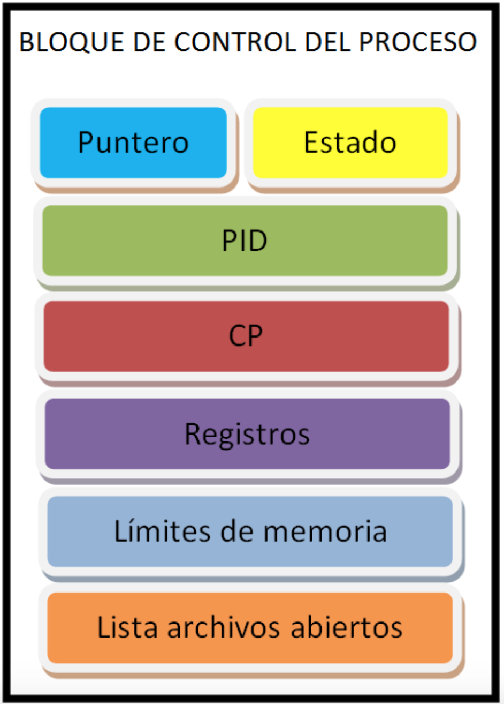
Tipos de procesos¶
Según la interacción con el usuario:
- Primer plano (foreground): requieren intervención del usuario.
- Segundo plano (background): se ejecutan sin intervención directa.
Según el modo de ejecución:
- Modo kernel: acceso privilegiado; la mayoría de procesos del SO.
- Modo usuario: procesos de usuario y aplicaciones.
Según quién los ejecuta:
- Procesos del sistema: lanzados por el SO.
- Procesos de usuario: lanzados por un usuario.
También se habla de procesos monohilo o multihilo.
Estados¶
Tres estados básicos:
- En ejecución: el proceso tiene asignada la CPU.
- Listo (en espera): preparado para recibir el procesador; suele respetarse un orden de llegada.
- Bloqueado: esperando un recurso para poder continuar.
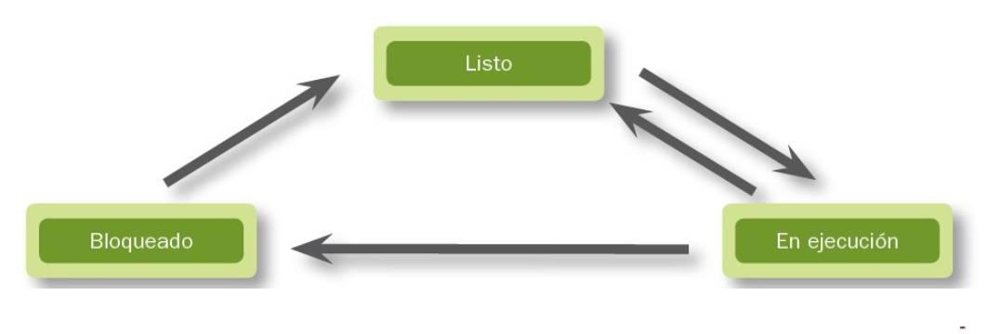
Note
Pueden existir más estados intermedios. Otros útiles: Parado (pausado por señal, p. ej. sleep), Zombie (hijo terminado que no puede comunicarse con el padre).
Transiciones de estados¶
Al ejecutar un programa:
- Se crea una entrada en la tabla de procesos.
- Se asigna un PID.
- Se asignan recursos y memoria.
- Se cargan páginas del programa en RAM.
- El proceso pasa a la lista de espera para que el planificador le conceda el procesador.
El planificador cambia los estados según el algoritmo, el quantum o la disponibilidad de recursos. La transición que no debe ocurrir (si el planificador es correcto) es pasar directamente de En espera o Bloqueado a En ejecución sin pasar por la concesión del planificador.
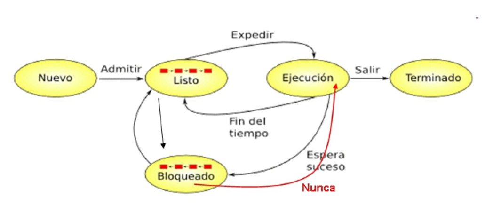
El planificador¶
El planificador decide qué proceso o hilo usa el procesador y cuánto tiempo. Los algoritmos suelen buscar:
- Equidad, eficacia, tiempo de respuesta y de regreso, y rendimiento.
Tipos de algoritmos de planificación:
FCFS/FIFO¶
- Primero en llegar, primero en ser servido; no expulsivo; fácil pero tiempo de espera alto.
- En FIFO, el proceso que solicita la CPU primero es el primero en obtenerla. Es el algoritmo de planificación más simple: se mantiene una cola por orden de llegada y el planificador asigna la CPU al proceso que está al frente de la cola. No es expulsivo: un proceso no es interrumpido hasta que termina su ráfaga de CPU (o se bloquea por E/S).
Características
- No expulsivo: el proceso mantiene la CPU hasta que termina su tiempo de ráfaga o se bloquea.
- Los trabajos se ejecutan siempre por orden de llegada.
- Fácil de implementar y de entender.
- Inconveniente: el tiempo de espera medio puede ser alto, sobre todo si primero llegan procesos largos.
Ejemplo numérico
Supongamos cuatro procesos que llegan en el orden P1, P2, P3, P4, con estos tiempos de ráfaga de CPU (en unidades de tiempo):
| Proceso | Tiempo de ráfaga (CPU) | Orden de llegada |
|---|---|---|
| P1 | 2 | 1º |
| P2 | 4 | 2º |
| P3 | 3 | 3º |
| P4 | 3 | 4º |
Con FIFO se ejecutan estrictamente en ese orden: primero P1, luego P2, luego P3, luego P4.
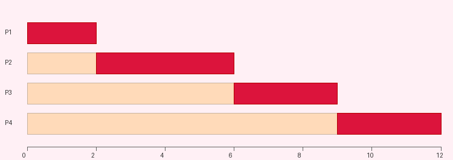
Cálculo de tiempos
- Tiempo de espera (waiting time): tiempo que el proceso pasa en la cola de listos antes de empezar a ejecutarse.
- Tiempo de retorno (turnaround time): tiempo desde la llegada hasta que el proceso termina (espera + tiempo de CPU).
En este ejemplo:
| Proceso | Tiempo de espera | Tiempo de retorno |
|---|---|---|
| P1 | 0 | 0 + 2 = 2 |
| P2 | 2 | 2 + 4 = 6 |
| P3 | 6 | 6 + 3 = 9 |
| P4 | 9 | 9 + 3 = 12 |
- Tiempo de espera medio = (0 + 2 + 6 + 9) / 4 = 17/4 = 4,25 unidades.
- Tiempo de retorno medio = (2 + 6 + 9 + 12) / 4 = 29/4 = 7,25 unidades.
P1 no espera; P2, P3 y P4 esperan más porque llegan después y hay que esperar a que terminen los anteriores. Si el primer proceso tuviera un tiempo de CPU muy grande, los demás sufrirían un tiempo de espera alto (efecto "convoy").
SJF (Shortest Job First)¶
- El de menor tiempo de ejecución primero; no expulsivo; minimiza tiempo de espera medio pero requiere conocer o estimar las ráfagas.
- Se selecciona para ejecutar el proceso con menor tiempo de ráfaga (duración de CPU) entre los que están listos. No es expulsivo: una vez que un proceso tiene la CPU, la mantiene hasta terminar su ráfaga.
Características
- No expulsivo.
- Minimiza el tiempo de espera medio cuando los trabajos tienen duraciones muy distintas.
- Requiere conocer (o estimar) el tiempo de CPU de cada proceso de antemano.
Ejemplo numérico
Mismos cuatro procesos que en FIFO, ordenados ahora por tiempo de ráfaga (de menor a mayor): P1(2), P3(3), P4(3), P2(4).
| Proceso | Tiempo de ráfaga (CPU) | Orden de ejecución |
|---|---|---|
| P1 | 2 | 1º |
| P3 | 3 | 2º |
| P4 | 3 | 3º |
| P2 | 4 | 4º |
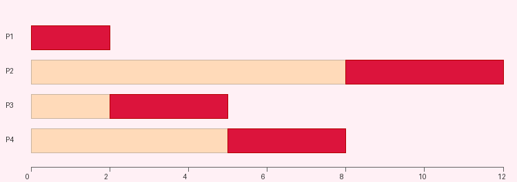
| Proceso | Tiempo de espera | Tiempo de retorno |
|---|---|---|
| P1 | 0 | 2 |
| P2 | 8 | 12 |
| P3 | 2 | 5 |
| P4 | 5 | 8 |
- Tiempo de espera medio = (0 + 8 + 2 + 5) / 4 = 15/4 = 3,75 unidades.
- Tiempo de retorno medio = (2 + 12 + 5 + 8) / 4 = 27/4 = 6,75 unidades.
SRTF (Shortest Remaining Time First)¶
- Variante expulsiva de SJF: el de menor tiempo restante primero; expulsivo; buenos tiempos de espera cuando llegan trabajos cortos.
- Igual que SJF, pero expulsivo: si llega un proceso cuyo tiempo restante de CPU es menor que el del proceso que está ejecutando, se le cede la CPU al nuevo. Se elige siempre el proceso con menor tiempo restante entre los listos.
Características
- Expulsivo.
- Suele dar buenos tiempos de espera cuando hay trabajos cortos que llegan después.
- Requiere conocer (o estimar) el tiempo de CPU y las llegadas.
Ejemplo numérico
Cuatro procesos con llegada y ráfaga: P1(llegada 0, ráfaga 8), P2(1, 4), P3(2, 2), P4(3, 1). En cada instante se ejecuta el de menor tiempo restante.
| Proceso | Llegada | Ráfaga (CPU) |
|---|---|---|
| P1 | 0 | 8 |
| P2 | 1 | 4 |
| P3 | 2 | 2 |
| P4 | 3 | 1 |
Orden de ejecución: 0–1 P1; 1–2 P2 (4 < 7 restante de P1); 2–3 P3 (2 < 4); 3–4 P4 (1 < 2); 4–6 P3; 6–10 P2; 10–17 P1.
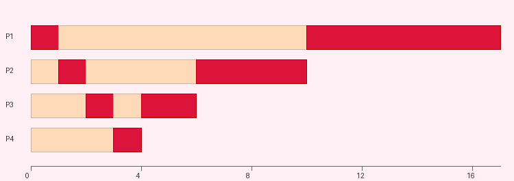
| Proceso | Tiempo de espera | Tiempo de retorno |
|---|---|---|
| P1 | 9 | 17 |
| P2 | 5 | 9 |
| P3 | 2 | 4 |
| P4 | 0 | 1 |
- Tiempo de espera medio = (9 + 5 + 2 + 0) / 4 = 4 unidades.
- Tiempo de retorno medio = (17 + 9 + 4 + 1) / 4 = 7,75 unidades.
Prioridades¶
- Los de mayor prioridad se ejecutan antes; puede ser expulsivo o no según la política; flexible para sistemas con prioridades (tiempo real, interactivos).
- Cada proceso tiene una prioridad (por ejemplo, un número: menor = más prioridad). El planificador elige el proceso listo con mayor prioridad. Si es no expulsivo, una vez en CPU termina su ráfaga; si es expulsivo, al llegar uno de mayor prioridad se le cede la CPU.
Prioridades no expulsivo
Mismos cuatro procesos con prioridad (1 = máxima): P1(prior 3, ráfaga 2), P2(1, 4), P3(2, 3), P4(4, 3). Orden de ejecución: P2 → P3 → P1 → P4.
| Proceso | Prioridad | Ráfaga | Orden |
|---|---|---|---|
| P2 | 1 | 4 | 1º |
| P3 | 2 | 3 | 2º |
| P1 | 3 | 2 | 3º |
| P4 | 4 | 3 | 4º |
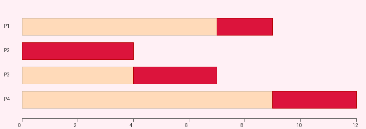
| Proceso | Tiempo de espera | Tiempo de retorno |
|---|---|---|
| P1 | 7 | 9 |
| P2 | 0 | 4 |
| P3 | 4 | 7 |
| P4 | 9 | 12 |
Prioridades expulsivo
P1(0, 5, prior 2), P2(1, 3, prior 1), P3(2, 2, prior 3). Al llegar P2 en 1, tiene prior 1 > 2, así que expulsa a P1. Orden: 0–1 P1; 1–4 P2; 4–9 P1; 9–11 P3.
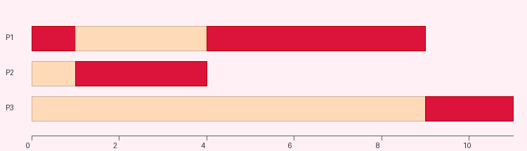
Round Robin¶
- Turnos con un quantum fijo; expulsivo por tiempo; evita inanición y reparte la CPU entre todos.
- Todos los procesos listos forman una cola; cada uno recibe la CPU durante un quantum (p. ej. 2 unidades). Si no termina en ese tiempo, pasa al final de la cola y se ejecuta el siguiente. Así se reparte la CPU entre todos y no hay inanición.
Características
- Quantum fijo (reloj).
- Todos los procesos avanzan; los cortos terminan antes, los largos van por rachas.
- Suele aumentar el tiempo de espera medio respecto a FIFO o SJF cuando las ráfagas son muy dispares.
Ejemplo numérico
Mismos cuatro procesos P1(2), P2(4), P3(3), P4(3), quantum = 2. Orden de llegada P1, P2, P3, P4.
| Proceso | Ráfaga (CPU) | Quantum = 2 |
|---|---|---|
| P1 | 2 | 0–2 (termina) |
| P2 | 4 | 2–4, 8–10 (termina) |
| P3 | 3 | 4–6, 10–11 (termina) |
| P4 | 3 | 6–8, 11–12 (termina) |
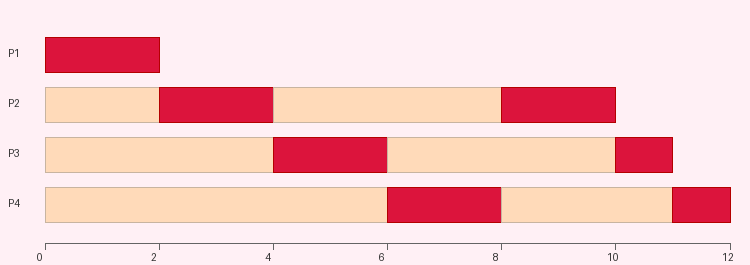
| Proceso | Tiempo de espera | Tiempo de retorno |
|---|---|---|
| P1 | 0 | 2 |
| P2 | 6 | 10 |
| P3 | 8 | 11 |
| P4 | 9 | 12 |
- Tiempo de espera medio = (0 + 6 + 8 + 9) / 4 = 23/4 = 5,75 unidades.
- Tiempo de retorno medio = (2 + 10 + 11 + 12) / 4 = 35/4 = 8,75 unidades.
2. Hilos¶
Un hilo (thread), hebra o proceso ligero es la secuencia de instrucciones más elemental que puede ser gestionada por el planificador.
NOTA
Un proceso puede ejecutarse como un solo hilo (una secuencia de instrucciones). En multihilo, partes del mismo proceso pueden ejecutarse en paralelo (varios hilos del mismo programa).
Diferencia principal: un proceso tiene su propio BCP y espacio de recursos; los hilos comparten el espacio de memoria y recursos del proceso. Por eso es importante la sincronización entre hilos.
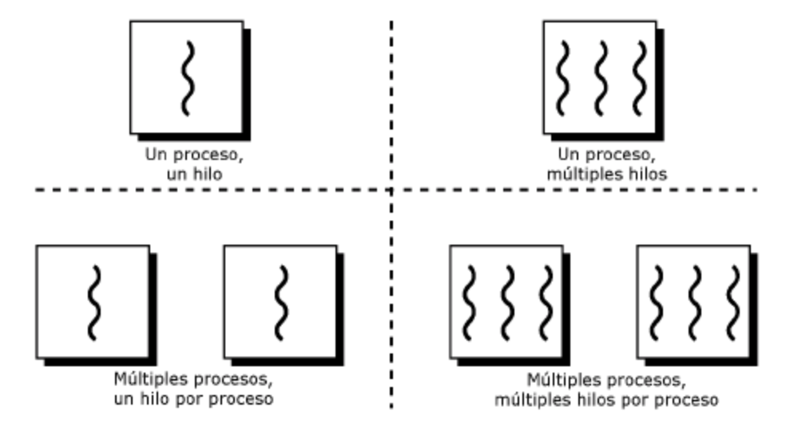
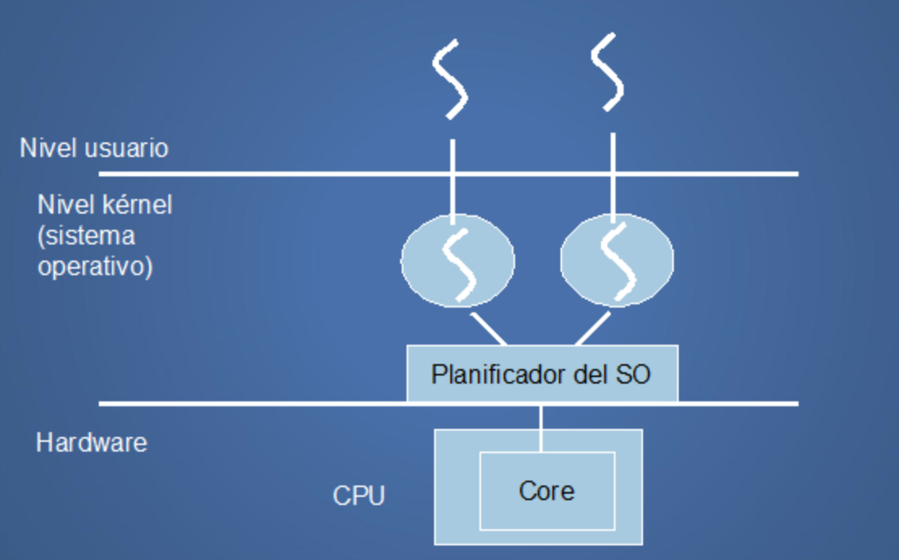
Cada hilo tiene identificador, contador de programa y pila propios. Tipos:
- Hilos a nivel de usuario: creados por el programador; el núcleo no los gestiona; la sincronización es responsabilidad del programa.
- Hilos a nivel de kernel: gestionados por el SO; en sistemas multinúcleo pueden ejecutarse en paralelo.
Ventajas de los hilos frente a procesos: más ligeros, cambio de contexto más barato, mayor agilidad si una parte se bloquea, y mejor aprovechamiento en multinúcleo.
Note
Un proceso multihilo no termina hasta que terminan todos sus hilos.
Sincronización y comunicación entre procesos¶
Procesos que deben comunicarse o sincronizarse usan señales y otros mecanismos:
- Mensajes: colas de mensajes para compartir información (incluso en equipos remotos).
- Señales: para sincronizar; cada señal tiene un comportamiento por defecto (p. ej. pausar o terminar). Se pueden enviar desde el SO (p. ej. Ctrl+C) o desde programas.
- Interrupciones y excepciones: las interrupciones son señales de dispositivos o software al procesador; las excepciones se producen por errores (p. ej. división por cero).
Interrupción
Una interrupción implica lo siguiente:
- Es una señal que llega al procesador para que detenga su tarea actual y atienda un suceso. Puede ser:
- De hardware: Por ejemplo, un dispositivo de E/S que requiere atención.
- De software: Por ejemplo, una llamada al sistema hecha por un programa.
- Cuando ocurre una interrupción:
- El procesador guarda el estado del proceso actual.
- Salta a la rutina específica que maneja esa interrupción (manejador).
- Tras atender la interrupción, restaura el estado y continúa con el proceso que fue interrumpido.
- Las excepciones funcionan de forma similar, pero son provocadas por condiciones anómalas durante la ejecución:
- Ejemplos: división por cero, acceso inválido a memoria, etc.
- El sistema debe reaccionar, por ejemplo, terminando el proceso o mostrando un error.
- Es posible inhibir las interrupciones por software en determinados tramos críticos, para evitar que una operación importante se quede a medias por una interrupción inesperada.
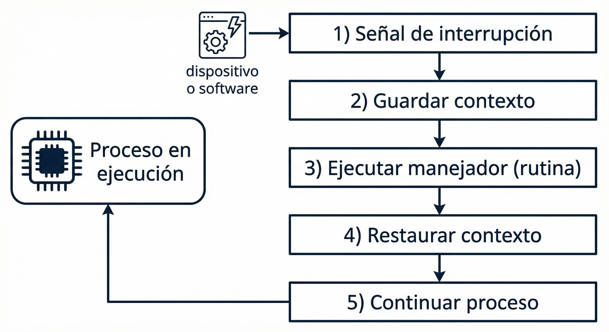
Casos y soluciones de sincronización¶
- Condiciones de competencia
Una condición de competencia ocurre cuando:
- Dos o más procesos acceden al mismo recurso (por ejemplo, una variable en memoria, un archivo o un dispositivo).
- El resultado final depende del orden en que se ejecutan las instrucciones de cada proceso.
- Por ejemplo:
- Si el planificador asigna la CPU primero a P1 y luego a P2, el valor del recurso será uno determinado.
- Si el orden es otro (primero P2, luego P1), el valor puede cambiar o se puede perder alguna actualización.
- Sin mecanismos de sincronización (como exclusión mutua, cerraduras, etc.):
- El programa se vuelve no determinista.
- Pueden aparecer fallos difíciles de reproducir.
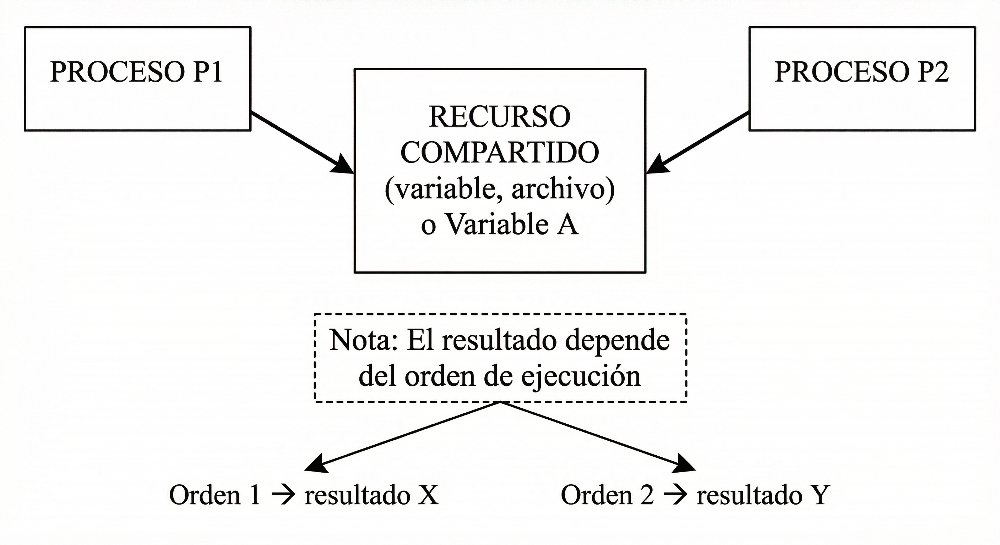
Solución principal: Exclusión mutua
La solución más utilizada para evitar condiciones de competencia es la exclusión mutua mediante una sección crítica: solo un proceso puede modificar el recurso compartido en cada momento. Se suelen emplear mecanismos como semáforos, variables cerradura o monitores para gestionar este acceso.
Exclusión mutua
La exclusión mutua evita que dos procesos accedan a la vez al mismo recurso (o a la misma zona de código que lo modifica). La sección crítica es el tramo del programa donde se usa ese recurso compartido. La regla es: solo un proceso puede estar dentro de su sección crítica en cada instante. Para entrar, el proceso debe “adquirir” el permiso (p. ej. mediante un semáforo o una cerradura); al salir, lo libera para que otro pueda entrar. Así se evitan condiciones de competencia sobre el recurso.
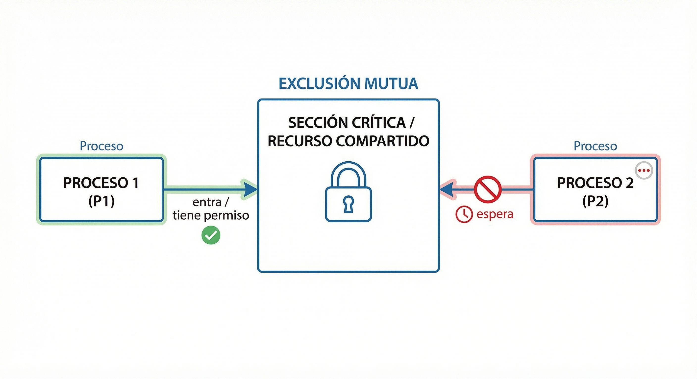
Interbloqueo (abrazo)
El interbloqueo se da cuando dos o más procesos se bloquean entre sí. Sus características principales son:
- Cada proceso posee un recurso y necesita otro que está en manos del otro proceso.
- Ningún proceso libera su recurso hasta conseguir el recurso que necesita.
- Se genera una situación de espera infinita (deadlock) y ningún proceso puede avanzar.
- Ejemplo típico:
- P1 tiene R1 y espera R2.
- P2 tiene R2 y espera R1.
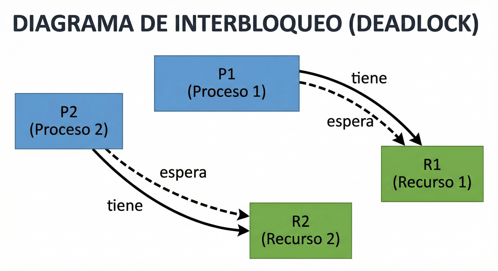
Para evitar el interbloqueo se pueden emplear, entre otros, los siguientes métodos:
- Protocolos para el orden de solicitud de recursos.
- Uso de temporizadores (timeouts) para liberar recursos tras un cierto tiempo de espera.
- Detección y recuperación de situaciones de interbloqueo.
- Evitar que se cumplan simultáneamente las siguientes 4 condiciones típicas:
- Exclusión mutua
- Retención y espera
- No expropiación
- Espera circular
Herramientas gráficas¶
- GNU/Linux:
ksysguard(KDE),gnome-system-monitor(GNOME). En Debian/Ubuntu: Aplicaciones → Herramientas del sistema → Monitor del sistema.
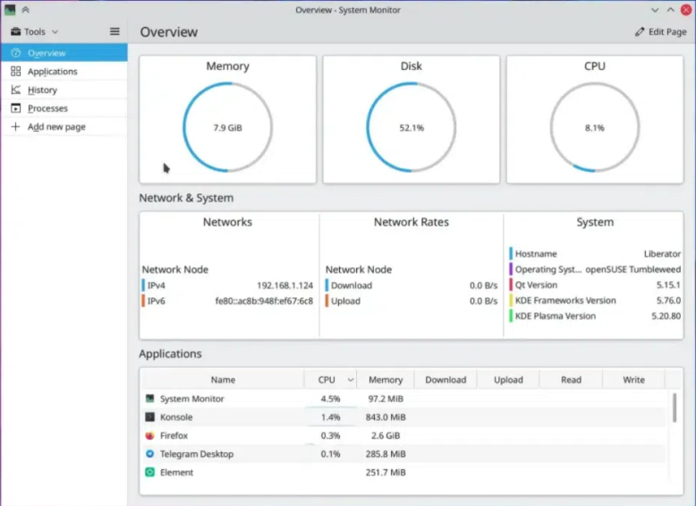
- Windows: Administrador de tareas → pestaña Rendimiento → Monitor de recursos (procesos y subprocesos).
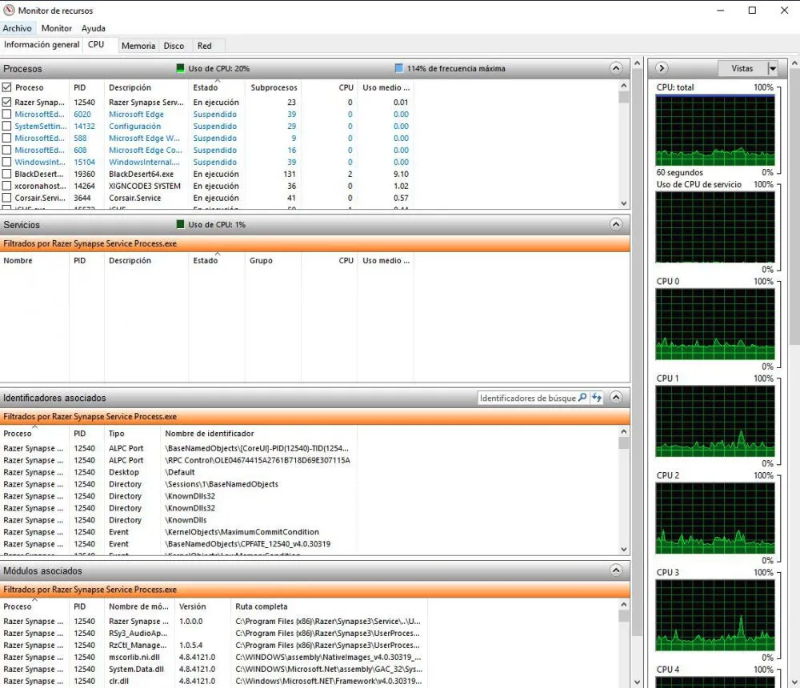
- macOS: Monitor de actividad, con subprocesos enumerados.
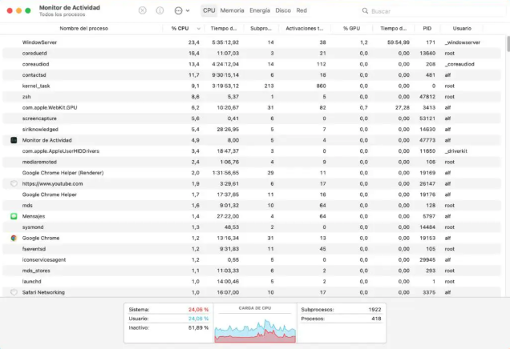
3. Gestión de procesos en Shell (Linux)¶
Cuando un proceso genera otro, se denomina padre al proceso original y hijo al generado. Por ejemplo, la terminal es en sí misma un proceso; al ejecutar un comando como ls -l, el sistema crea un proceso hijo del shell para ejecutar dicha instrucción.
Listado de comandos bash de procesos¶
Identificación de procesos¶
top # Listar todos los procesos de forma interactiva
htop # Listar todos los procesos de forma interactiva
ps all # Listar todos los procesos
pidof foo # Devolver el PID de todos los procesos foo
CTRL+Z # Suspender un proceso en primer plano
bg # Reanudar un proceso suspendido y ejecutarlo en segundo plano
fg # Traer el último proceso en segundo plano al primer plano
fg 1 # Traer al primer plano el proceso en segundo plano con ese PID
sleep 30 & # Pausar 30 segundos y ejecutar el proceso en segundo plano
jobs # Listar todos los trabajos en segundo plano
jobs -p # Listar todos los trabajos en segundo plano con su PID
lsof # Listar todos los archivos abiertos y el proceso que los usa
lsof -itcp:4000 # Devolver el proceso que escucha en el puerto 4000
Prioridad de procesos¶
Las prioridades van de -20 (máxima) a 19 (mínima).
nice -n -20 foo # Cambiar la prioridad del proceso por nombre
renice 20 PID # Cambiar la prioridad del proceso por PID
ps -o ni PID # Mostrar la prioridad del proceso con ese PID
Finalizar procesos¶
CTRL+C # Finalizar un proceso en primer plano
kill PID # Finalizar el proceso por PID de forma ordenada (señal TERM).
kill -9 PID # Finalizar forzadamente el proceso por PID (señal SIGKILL).
pkill foo # Finalizar el proceso por nombre de forma ordenada (señal TERM).
pkill -9 foo # Finalizar forzadamente el proceso por nombre (señal SIGKILL).
killall foo # Finalizar todos los procesos con ese nombre de forma ordenada.
Explicación de comandos principales¶
Comando ps¶
Muestra información sobre procesos en ejecución.
ps: procesos del usuario actual.- -a: procesos de todos los usuarios con terminal (tty).
- -x: procesos sin terminal asociado (p. ej. daemons).
- -e: todos los procesos.
- -f: formato extendido (PPID, STIME, etc.).
- -ef: todos con formato extendido.
- -u usuario: procesos de un usuario.
Columnas típicas: PID, terminal (TTY), tiempo de CPU, nombre del proceso.
Salida de ps -f (Ubuntu)
root@sor:/home/sor# ps -f
UID PID PPID C STIME TTY TIME CMD
root 2201 2200 0 16:24 pts/1 00:00:00 sudo su
root 2202 2201 0 16:24 pts/1 00:00:00 su
root 2203 2202 0 16:24 pts/1 00:00:00 bash
root 2337 2203 0 16:29 pts/1 00:00:00 ps -f
Comando pstree¶
Muestra los procesos en forma de árbol, mostrando las relaciones padre-hijo.
Salida de pstree (fragmento, Ubuntu)
root@sor:/home/sor# pstree
systemd─┬─ModemManager───3*[{ModemManager}]
├─agetty
├─containerd───8*[{containerd}]
├─containerd-shim─┬─tini─┬─nmbd
│ │ └─smbd─┬─cleanupd
│ │ └─smbd-notifyd
│ └─10*[{containerd-shim}]
├─containerd-shim─┬─s6-svscan─┬─s6-supervise───s6-linux-init-s
│ │ ├─s6-supervise───sshd.pam
│ │ └─...
├─cron
├─dbus-daemon
├─dockerd─┬─docker-proxy───...
│ └─...
├─login───bash
└─...
Comando top¶
Listado de procesos que se actualiza periódicamente. Permite ver evolución de CPU, memoria, número de tareas, etc. Con la tecla r se puede cambiar la prioridad (nice) de un proceso indicando su PID (solo root puede asignar prioridades negativas).
Salida de top (primeras líneas, Ubuntu)
top - 16:29:49 up 13 min, 2 users, load average: 0,00, 0,00, 0,00
Tasks: 160 total, 1 running, 159 sleeping, 0 stopped, 0 zombie
%Cpu(s): 0,0 us, 0,1 sy, 0,0 ni, 99,9 id, 0,0 wa, 0,0 hi, 0,0 si, 0,0 st
MiB Mem : 3902,3 total, 3206,3 free, 379,8 used, 466,8 buff/cache
MiB Swap: 0,0 total, 0,0 free, 0,0 used. 3522,5 avail Mem
PID USER PR NI VIRT RES SHR S %CPU %MEM TIME+ COMMAND
333 root 20 0 0 0 0 I 0,3 0,0 0:00.53 kworker/0:3-events
698 root 20 0 1861432 42112 27904 S 0,3 1,1 0:01.83 containerd
2339 root 20 0 11776 5376 3328 R 0,3 0,1 0:00.03 top
1 root 20 0 21948 12112 8528 S 0,0 0,3 0:00.81 systemd
2 root 20 0 0 0 0 S 0,0 0,0 0:00.00 kthreadd
4 root 0 -20 0 0 0 I 0,0 0,0 0:00.00 kworker/R-rcu_g
Primer plano y segundo plano¶
- Primer plano: el proceso con el que se interactúa; el terminal queda "bloqueado" hasta que termina.
- Segundo plano: se lanza con
&al final del comando (p. ej.sleep 10 &). El terminal sigue disponible.
Al lanzar en segundo plano se muestra un número entre corchetes (número de trabajo) y el PID.
sleep en segundo plano y jobs (Ubuntu)
root@sor:/home/sor# sleep 10 &
[1] 2366
root@sor:/home/sor# jobs
[1]+ Running sleep 10 &
jobs: lista los trabajos en segundo plano.fg %n: lleva el trabajona primer plano.bg %n: para pasar a segundo plano un proceso que está en primer plano, primero se suspende con Ctrl+Z y luego se ejecutabg %n.
Uso de fg y bg
Con un trabajo [1] en segundo plano, fg %1 lo trae a primer plano; si un proceso está detenido (Ctrl+Z), bg %1 lo reanuda en segundo plano.
Prioridad: renice¶
En Linux la prioridad (nice) va de -20 (más prioridad) a 20 (menos prioridad). Solo root puede usar valores negativos.
renice -n prioridad -p PID: cambia la prioridad del proceso con ese PID.renice -g: por grupo.renice -u: por usuario.
Para ver la prioridad: ps ax -o pid,ni,cmd (columna ni = nice).
renice (Ubuntu, como root)
Se lanza sleep en segundo plano; con ps ax -o pid,ni,cmd | grep sleep se localiza el PID y la prioridad (ni); luego renice -n 10 -p PID cambia la prioridad:
root@sor:/home/sor# sleep 10 &
[1] 2366
root@sor:/home/sor# jobs
[1]+ Running sleep 10 &
root@sor:/home/sor# ps ax -o pid,ni,cmd | grep sleep
2394 0 grep --color=auto sleep
[1]+ Done sleep 10
root@sor:/home/sor# renice -n 10 -p 2394
Sobre este ejemplo
En este ejemplo el proceso sleep terminó antes de ejecutar renice. Para practicar renice conviene usar un proceso de mayor duración (p. ej. sleep 60 &) y aplicar renice al PID de ese proceso, no al de grep.
Finalizar procesos: kill¶
kill PID # solicitud de terminación (SIGTERM, 15)
kill -9 PID # terminación forzada (SIGKILL)
kill -1 PID # SIGHUP, reiniciar proceso
killall nombre_programa # termina todos los procesos con ese nombre
kill (Ubuntu)
Se lanza un proceso en segundo plano, se obtiene su PID y se finaliza con kill (señal 15, terminación ordenada):
root@sor:/home/sor# sleep 120 &
[1] 2450
root@sor:/home/sor# kill 2450
root@sor:/home/sor# jobs
[1]+ Terminated sleep 120
Terminación forzada
Si el proceso no responde a kill, se puede forzar con kill -9 PID (SIGKILL). Con killall nombre se finalizan todos los procesos cuyo nombre coincida (p. ej. killall sleep).
4. Gestión de procesos en PowerShell¶
Para listar cmdlets relacionados con procesos: Get-Command *process*.
Obtener procesos¶
Get-Process(sin parámetros): procesos del equipo local.Get-Process | Sort-Object CPU -Descending | Select-Object -First 10: los 10 que más CPU consumen.Get-Process -Id PID: por identificador (si no existe, da error).Get-Process -Name patrón: por nombre; admite comodines (p. ej.ex*).Get-Process -Name a*,b*: varios nombres.(Get-Process -Name pwsh).Path,(Get-Process -Name pwsh).WS: propiedades concretas (ruta, memoria de trabajo).Get-Process -Name PowerShell -ComputerName localhost, Server01, Server02: procesos en equipos remotos (parámetro ComputerName). Para ver el equipo:Format-Table -Property ID, ProcessName, MachineName.
El proceso Idle (id 0) representa el tiempo en que la CPU no está trabajando.
Get-Process: listar y filtrar
Listar procesos por nombre y los 5 que más CPU consumen:
PS C:\> Get-Process -Name pwsh | Select-Object Id, ProcessName, CPU, WorkingSet
Id ProcessName CPU WorkingSet
-- ----------- --- ----------
1234 pwsh 12,50 185654321
PS C:\> Get-Process | Sort-Object CPU -Descending | Select-Object -First 5 Id, ProcessName, CPU
Id ProcessName CPU
-- ----------- ---
456 explorer 125,30
789 chrome 98,12
1234 pwsh 12,50
Propiedades de un proceso
Obtener la ruta y la memoria de trabajo (WS) de un proceso por nombre:
PS C:\> (Get-Process -Name pwsh).Path
C:\Program Files\PowerShell\7\pwsh.exe
PS C:\> (Get-Process -Name pwsh).WorkingSet
185654321
Detener procesos¶
Stop-Process -Name nombreoStop-Process -Id PID.Stop-Process -Name t*,e* -Confirm: pide confirmación por cada coincidencia.- Procesos que no responden:
Get-Process | Where-Object { $_.Responding -eq $false } | Stop-Process. - En remoto (Stop-Process no tiene ComputerName):
Invoke-Command -ComputerName Server01 { Stop-Process Powershell }.
Stop-Process: finalizar por nombre o PID
PS C:\> Get-Process -Name notepad
Id ProcessName
-- -----------
5678 notepad
PS C:\> Stop-Process -Id 5678
PS C:\> Stop-Process -Name notepad -Force
Sobre -Force
El parámetro -Force permite terminar procesos que no responden sin pedir confirmación.
Iniciar procesos¶
Start-Process -FilePath ruta\ejecutable(p. ej.C:\windows\notepad.exe).- Para abrir aplicaciones por protocolo:
Start-Process Microsoft-edge://.
Start-Process: abrir aplicación
PS C:\> Start-Process notepad
PS C:\> Start-Process -FilePath "C:\Windows\System32\notepad.exe" -ArgumentList "C:\temp\notas.txt"
PS C:\> Start-Process "https://www.ejemplo.org"
Sobre Start-Process
Sin parámetros adicionales, Start-Process notepad abre el Bloc de notas. Con -ArgumentList se pasan argumentos al ejecutable. Con una URL se abre el navegador por defecto.
5. Arranque del sistema y servicios¶
El arranque (boot) es la secuencia que pone en marcha el hardware, carga el gestor de arranque, el kernel y, por último, los servicios del sistema. En la práctica interesa conocer las cuatro fases (comunes a Linux) y qué son los servicios y systemd.
Arranque en Linux (4 etapas)¶
- BIOS/UEFI — POST, detección de hardware y carga del cargador de arranque desde MBR o GPT.
- Cargador de arranque (GRUB) — Lee la configuración (p. ej.
/boot/grub/grub.cfg,/etc/default/grub); muestra menú para elegir kernel;update-grubaplica cambios. LILO es una alternativa antigua que escribe la configuración en el MBR. - Kernel — Se carga y descomprime; initrd aporta drivers; el kernel arranca el primer proceso de usuario (init).
- Init / systemd — Arranque en espacio de usuario: montaje de sistemas de archivos y puesta en marcha de servicios (daemons).
Arranque en Windows¶
El arranque se controla con BCD (Boot Configuration Data, \boot\BCD) y Bootmgr.exe. Secuencia resumida: BIOS → MBR → Bootmgr → BCD → menú → carga del kernel (Winload, ntoskrnl) y de los subsistemas (smss, winlogon) hasta la pantalla de inicio de sesión. Para editar opciones de arranque: msconfig, bcdedit o PowerShell.
Daemon y servicio¶
Un daemon (Linux/UNIX) o servicio (Windows) es un programa que se ejecuta en segundo plano, sin ventana para el usuario, y que suele iniciarse con el sistema (p. ej. servidor web, SSH, impresoras). En Linux los logs suelen estar en /var/log/ o vía syslog.
Systemd¶
Systemd es el gestor de sistema e init en la mayoría de distribuciones Linux actuales: unifica el arranque y la gestión de servicios, es el primer proceso en espacio de usuario (PID 1) y se administra con systemctl (ver siguiente sección).

6. Administración de servicios (systemd)¶
Iniciar y detener¶
sudo systemctl start nombre.service
sudo systemctl stop nombre.service
sudo systemctl restart nombre.service
sudo systemctl reload nombre.service
sudo systemctl reload-or-restart nombre.service
Iniciar, reiniciar y detener un servicio
$ sudo systemctl start ssh
$ sudo systemctl status ssh
● ssh.service - OpenBSD Secure Shell server
Loaded: loaded (/lib/systemd/system/ssh.service; enabled)
Active: active (running) since Mon 2024-01-15 10:00:00 UTC; 5s ago
$ sudo systemctl stop ssh
Sobre el nombre de la unidad
Se puede omitir el sufijo .service (p. ej. ssh en lugar de ssh.service).
Habilitar y deshabilitar en el arranque¶
sudo systemctl enable nombre.service
sudo systemctl disable nombre.service
enable no inicia el servicio
enable solo hace que el servicio se inicie en el próximo arranque. Para ponerlo en marcha en la sesión actual hay que usar además start.
Habilitar y deshabilitar en el arranque
$ systemctl is-enabled ssh
enabled
$ sudo systemctl disable ssh
$ systemctl is-enabled ssh
disabled
$ sudo systemctl enable ssh
Estado¶
systemctl status nombre.service
systemctl is-active nombre.service
systemctl is-enabled nombre.service
systemctl is-failed nombre.service
Consultar estado de un servicio
$ systemctl is-active nginx
active
$ systemctl is-enabled nginx
enabled
$ systemctl is-failed nginx
inactive
Listar unidades¶
systemctlosystemctl list-units: unidades activas.systemctl list-units --all: todas las cargadas.systemctl list-units --type=service: solo servicios.systemctl list-unit-files: archivos de unidad y estado (enabled, disabled, static, masked).
Listar servicios activos y archivos de unidad
$ systemctl list-units --type=service | head -15
UNIT LOAD ACTIVE SUB DESCRIPTION
cron.service loaded active running Regular background program
dbus.service loaded active running D-Bus System Message Bus
ssh.service loaded active running OpenBSD Secure Shell server
systemd-journald.service loaded active running Journal Service
...
$ systemctl list-unit-files --type=service | grep -E 'ssh|nginx|cron'
cron.service enabled
nginx.service disabled
ssh.service enabled
Otras operaciones¶
systemctl cat nombre.service: contenido del archivo de la unidad.systemctl list-dependencies nombre.service: dependencias.systemctl show nombre.service: propiedades.- Enmascarar (impedir que se inicie):
sudo systemctl mask nombre.service. Desenmascarar:sudo systemctl unmask nombre.service. - Editar:
sudo systemctl edit nombre.service(fragmento override) osudo systemctl edit --full nombre.service. Tras cambios:sudo systemctl daemon-reload.
Ver dependencias y enmascarar
$ systemctl list-dependencies ssh.service | head -10
ssh.service
● ├─system.slice
● └─basic.target
● ├─...
$ sudo systemctl mask nombre.service
Created symlink /etc/systemd/system/nombre.service → /dev/null.
$ sudo systemctl unmask nombre.service
Removed /etc/systemd/system/nombre.service.
Destinos (runlevels)¶
systemctl get-default: destino por defecto.systemctl set-default graphical.target: cambiar destino por defecto.systemctl list-unit-files --type=target: destinos disponibles.sudo systemctl isolate multi-user.target: cambiar a modo multiusuario (sin gráfico).sudo systemctl rescue,sudo systemctl halt,sudo systemctl poweroff,sudo systemctl reboot: atajos para rescate, apagado y reinicio.
Destino por defecto y destinos disponibles
$ systemctl get-default
graphical.target
$ systemctl list-unit-files --type=target | grep -E 'graphical|multi-user'
graphical.target static
multi-user.target static
$ sudo systemctl set-default multi-user.target
Created symlink /etc/systemd/system/default.target → /usr/lib/systemd/system/multi-user.target.
Actividades¶
En esta unidad se plantean dos retos individuales de depuración: un script Python con interfaz gráfica (tkinter) que integra comandos de gestión de procesos. El alumnado elige uno de los dos según el entorno (Linux/WSL o Windows). Cada reto tiene una puntuación máxima de 30 puntos y se evalúa según los criterios indicados.
Antes de los retos
Si no tienes experiencia con Python, puedes apoyarte en la Introducción a Python antes de abordar los enunciados.
Reto 1: Gestor de procesos con Shell (Linux / WSL). Ampliación +0,25 de la nota final.¶
Puntuación: 30 puntos
Criterios evaluados: CE2c (gestión de procesos desde el Shell), CE2g (herramienta de gestión y documentación)
Modalidad: Individual
Entorno: Linux o WSL (comandos: ps, pstree, jobs, kill, renice).
Depuración de un script Python con interfaz gráfica que utiliza comandos Shell para listar procesos, mostrar el árbol de procesos, listar trabajos en segundo plano, finalizar un proceso por PID y cambiar la prioridad (renice). El enunciado incluye código con errores que hay que identificar, justificar y corregir.
Ver enunciado del reto — Shell
Reto 2: Gestor de procesos con PowerShell (Windows). Ampliación +0,25 de la nota final.¶
Puntuación: 30 puntos
Criterios evaluados: CE2d (gestión de procesos desde PowerShell), CE2g (herramienta de gestión y documentación)
Modalidad: Individual
Entorno: Windows con PowerShell (cmdlets: Get-Process, Stop-Process, Start-Process).
Depuración de un script Python con interfaz gráfica que utiliza cmdlets de PowerShell para listar procesos, mostrar los que más CPU consumen, finalizar un proceso por PID e iniciar un proceso. El enunciado incluye código con errores que hay que identificar, justificar y corregir.